<!DOCTYPE html>

<html>
  <head>
    <meta charset="utf-8" />
    <meta name="viewport" content="width=device-width, initial-scale=1.0" /><meta content="filterTutorials, filterCommandlineInterface;Simulation;" name="keywords" />
<meta content="filterTutorials," name="keywords" />

    <title>TolTEC observation simulator: Step by step &#8212; tolteca_tutorials v0.0.dev</title>
    <link rel="stylesheet" type="text/css" href="../_static/pygments.css" />
    <link rel="stylesheet" type="text/css" href="../_static/bootstrap-sphinx.css" />
    <link rel="stylesheet" type="text/css" href="../_static/graphviz.css" />
    <link rel="stylesheet" type="text/css" href="../_static/bootstrap_sandstone.css" />
    <link rel="stylesheet" type="text/css" href="../_static/astropy.css" />
    <script data-url_root="../" id="documentation_options" src="../_static/documentation_options.js"></script>
    <script src="../_static/jquery.js"></script>
    <script src="../_static/underscore.js"></script>
    <script src="../_static/doctools.js"></script>
    <script src="../_static/js/jquery-1.11.0.min.js"></script>
    <script src="../_static/js/jquery-fix.js"></script>
    <script src="../_static/bootstrap-3.3.7/js/bootstrap.min.js"></script>
    <script src="../_static/bootstrap-sphinx.js"></script>
    <script src="../_static/searchtools.js"></script>
    <script src="https://use.fontawesome.com/3168e95f94.js"></script>
    <script src="https://cdnjs.cloudflare.com/ajax/libs/mathjax/2.7.4/MathJax.js?config=TeX-MML-AM_CHTML"></script>
    <link rel="shortcut icon" href="../_static/astropy_favicon.ico"/>
    <link rel="index" title="Index" href="../genindex.html" />
    <link rel="search" title="Search" href="../search.html" />
  <meta charset='utf-8'>
  <meta http-equiv='X-UA-Compatible' content='IE=edge,chrome=1'>
  <meta name='viewport' content='width=device-width, initial-scale=1.0, maximum-scale=1'>
  <meta name="apple-mobile-web-app-capable" content="yes">
  <script type="text/javascript">
    jQuery(function() { Search.loadIndex("../searchindex.js"); });
  </script>
  
  <script type="text/javascript" id="searchindexloader"></script>
   

  </head><body>


<nav class="navbar navbar-expand-lg bg-navbar">
  <a class="navbar-brand" href="/" style="padding: 0px 5px;">
    
  </a>
  <button class="navbar-toggler" type="button" data-toggle="collapse" data-target="#navbarColor01" aria-controls="navbarColor01" aria-expanded="false" aria-label="Toggle navigation">
    <span class="navbar-toggler-icon"></span>
  </button>
  <div class="collapse navbar-collapse" id="navbarColor01">
    <ul class="navbar-nav ml-auto">
      <li class="nav-item active">
        <a class="nav-link" href="http://toltecdr.astro.umass.edu"/>TolTECA<span class="sr-only">(current)</span></a>
      </li>
      <li class="nav-item">
        <a class="nav-link" href="#">Modules</a>
      </li>
    </ul>
    <form class="form-inline my-2 my-lg-0" action="../search.html" method="get">
      <div class="input-group-prepend">
          <button class="input-group-text" style="padding: 0.7rem"><i class="fa fa-search fa-fw"></i></button>
      </div>
      <input class="form-control mr-sm-3" name="q" type="text" placeholder="Search the universe" />
    </form>
  </div>
</nav>


<div class="container">
  <div class="row">

    
    
    

    
    <div class="col-md-3">
      <div id="sidebar" class="bs-sidenav card" role="complementary">
        <h3>Table of contents</h3>
        <ul>
<li><a class="reference internal" href="#">TolTEC observation simulator: Step by step</a><ul>
<li><a class="reference internal" href="#prerequisites">Prerequisites</a></li>
<li><a class="reference internal" href="#objectives">Objectives</a></li>
<li><a class="reference internal" href="#keywords">Keywords</a></li>
<li><a class="reference internal" href="#summary">Summary</a></li>
<li><a class="reference internal" href="#run-the-simulator">Run the simulator</a><ul>
<li><a class="reference internal" href="#commandline-interface-recommended">Commandline interface (recommended)</a></li>
<li><a class="reference internal" href="#python-api">Python API</a></li>
</ul>
</li>
<li><a class="reference internal" href="#optional-advanced-usages-and-internals-of-the-simulator">(Optional) Advanced Usages and Internals of the Simulator</a><ul>
<li><a class="reference internal" href="#scripting-and-parallization">Scripting and parallization</a><ul>
<li><a class="reference internal" href="#overriding-the-config-on-the-fly-with-commandline-arguments">Overriding the config on-the-fly with commandline arguments</a></li>
<li><a class="reference internal" href="#overriding-the-config-with-python-api">Overriding the config with Python API</a></li>
</ul>
</li>
<li><a class="reference internal" href="#generate-mapping-trajectories-and-compute-approximate-coverage-map">Generate mapping trajectories and compute approximate coverage map</a></li>
<li><a class="reference internal" href="#pre-render-point-source-catalogs-as-fits-images">Pre-render point source catalogs as FITS images</a></li>
<li><a class="reference internal" href="#use-toltec-power-loading-model-to-predict-the-rms-noise">Use TolTEC power loading model to predict the RMS noise</a></li>
<li><a class="reference internal" href="#explore-the-internals-of-the-simulator-workflow">Explore the internals of the simulator workflow</a><ul>
<li><a class="reference internal" href="#array-property-table-and-kids-resonance-models">Array property table and KIDs resonance models</a></li>
<li><a class="reference internal" href="#converting-between-on-sky-signal-and-raw-kids-s21-stream">Converting between on-sky signal and raw KIDs S21 stream</a></li>
</ul>
</li>
<li><a class="reference internal" href="#examine-the-kids-data-in-raw-timestream-netcdf-file">Examine the KIDs data in raw timestream netCDF file</a></li>
</ul>
</li>
</ul>
</li>
</ul>

      </div>
    </div>
    

    <div class="col-md-9">
      <div class="content-padding card">
        <div>
  <p>None</p>
<a href="../_static/tolteca_simu/tolteca_simu.ipynb"><button id="download">Download tutorial notebook</button></a>
<a href="https://beta.mybinder.org/v2/gh/astropy/astropy-tutorials/master?filepath=/tutorials/notebooks/tolteca_simu/tolteca_simu.ipynb"><button id="binder">Interactive tutorial notebook</button></a>

<div id="spacer"></div><div class="section" id="toltec-observation-simulator-step-by-step">
<span id="tolteca-simu"></span><h1>TolTEC observation simulator: Step by step<a class="headerlink" href="#toltec-observation-simulator-step-by-step" title="Permalink to this headline">¶</a></h1>
<p>Authors: Zhiyuan Ma</p>
<div class="section" id="prerequisites">
<h2>Prerequisites<a class="headerlink" href="#prerequisites" title="Permalink to this headline">¶</a></h2>
<ul class="simple">
<li><p>Tutorial: tolteca_setup</p></li>
</ul>
</div>
<div class="section" id="objectives">
<h2>Objectives<a class="headerlink" href="#objectives" title="Permalink to this headline">¶</a></h2>
<ul class="simple">
<li><p>Use the commandline interface to run <code class="docutils literal notranslate"><span class="pre">tolteca.simu</span></code>.</p></li>
<li><p>Use the Python API to run <code class="docutils literal notranslate"><span class="pre">tolteca.simu</span></code>.</p></li>
<li><p>Learn about advanced usage of the TolTEC observation simulator:</p>
<ul>
<li><p>Scripting and parallelization with commandline inteface.</p></li>
<li><p>Generate mapping patterns and compute approximate coverage map.</p></li>
<li><p>Pre-render point source catalogs as FITS images.</p></li>
<li><p>Use TolTEC power loading model to predict the map depth.</p></li>
<li><p>Explore the internals of the simulator workflow:</p>
<ul>
<li><p>Array property table and KIDs resonance models</p></li>
<li><p>Converting between on-sky signal to raw KIDs stream</p></li>
</ul>
</li>
<li><p>Examine the KIDs data in raw timestream netCDF file</p></li>
</ul>
</li>
</ul>
</div>
<div class="section" id="keywords">
<h2>Keywords<a class="headerlink" href="#keywords" title="Permalink to this headline">¶</a></h2>
<p>Commandline interface; Simulation;</p>
</div>
<div class="section" id="summary">
<h2>Summary<a class="headerlink" href="#summary" title="Permalink to this headline">¶</a></h2>
<p>In this tutorial, we will learn to use the <code class="docutils literal notranslate"><span class="pre">tolteca.simu</span></code> module for
making simulated TolTEC observation.</p>
<p>The <code class="docutils literal notranslate"><span class="pre">tolteca.simu</span></code> can be invoked either with the <code class="docutils literal notranslate"><span class="pre">tolteca</span> <span class="pre">simu</span></code>
command line interface, or throught the use of
<code class="docutils literal notranslate"><span class="pre">tolteca.simu.SimulatorRuntime</span></code> in Python. In both case, a
<code class="docutils literal notranslate"><span class="pre">RuntimeContext</span></code> is required to manage the configuration of the
module, handled by the class <code class="docutils literal notranslate"><span class="pre">tolteca.simu.SimuConfig</span></code>.</p>
</div>
<div class="section" id="run-the-simulator">
<h2>Run the simulator<a class="headerlink" href="#run-the-simulator" title="Permalink to this headline">¶</a></h2>
<p>The simulator requires a config dict to run. The config can be provided
using the <code class="docutils literal notranslate"><span class="pre">tolteca</span> <span class="pre">workdir</span></code> and <code class="docutils literal notranslate"><span class="pre">RuntimeContext</span></code> machinery. To learn
about setting up workdir and load <code class="docutils literal notranslate"><span class="pre">RuntimeContext</span></code>, refer to
<code class="docutils literal notranslate"><span class="pre">tutorial:</span> <span class="pre">tolteca_setup</span></code>.</p>
<div class="section" id="commandline-interface-recommended">
<h3>Commandline interface (recommended)<a class="headerlink" href="#commandline-interface-recommended" title="Permalink to this headline">¶</a></h3>
<div class="highlight-default notranslate"><div class="highlight"><pre><span></span>$ tolteca -d workdir0 setup
</pre></div>
</div>
<p>This will create a directory named <code class="docutils literal notranslate"><span class="pre">workdir0</span></code> in the current
directory, with some initial contents similar to:</p>
<div class="highlight-default notranslate"><div class="highlight"><pre><span></span>$ cd workdir0 &amp;&amp; ls
40_setup.yaml README.md bin/ cal/ doc/ log/
</pre></div>
</div>
<p>Once the workdir is setup, create a file named <code class="docutils literal notranslate"><span class="pre">60_simu.yaml</span></code> with the
content below and put it in the workdir:</p>
<div class="highlight-default notranslate"><div class="highlight"><pre><span></span><span class="c1"># example 60_simu.yaml for tutorial: tolteca_simu</span>
<span class="n">simu</span><span class="p">:</span>
  <span class="n">jobkey</span><span class="p">:</span> <span class="n">simu_three_sources</span>
  <span class="n">instrument</span><span class="p">:</span>
    <span class="n">name</span><span class="p">:</span> <span class="n">toltec</span>
    <span class="n">polarized</span><span class="p">:</span> <span class="n">false</span>
  <span class="n">mapping</span><span class="p">:</span>
    <span class="nb">type</span><span class="p">:</span> <span class="n">raster</span>
    <span class="n">length</span><span class="p">:</span> <span class="mi">10</span> <span class="n">arcmin</span>
    <span class="n">space</span><span class="p">:</span> <span class="mi">1</span> <span class="n">arcmin</span>
    <span class="n">n_scans</span><span class="p">:</span> <span class="mi">11</span>
    <span class="n">speed</span><span class="p">:</span> <span class="mi">5</span> <span class="n">arcmin</span><span class="o">/</span><span class="n">s</span>
    <span class="n">rot</span><span class="p">:</span> <span class="mi">0</span> <span class="n">deg</span>
    <span class="n">t_turnaround</span><span class="p">:</span> <span class="mi">1</span><span class="n">s</span>
    <span class="n">target</span><span class="p">:</span> <span class="mi">180</span><span class="n">d</span> <span class="mi">0</span><span class="n">d</span>
    <span class="n">t0</span><span class="p">:</span> <span class="mi">2022</span><span class="o">-</span><span class="mi">05</span><span class="o">-</span><span class="mi">01</span><span class="n">T06</span><span class="p">:</span><span class="mi">00</span><span class="p">:</span><span class="mi">00</span>
    <span class="n">ref_frame</span><span class="p">:</span> <span class="n">altaz</span>
  <span class="n">obs_params</span><span class="p">:</span>
    <span class="n">t_exp</span><span class="p">:</span> <span class="n">null</span>
  <span class="n">sources</span><span class="p">:</span>
  <span class="o">-</span> <span class="nb">type</span><span class="p">:</span> <span class="n">point_source_catalog</span>
    <span class="n">filepath</span><span class="p">:</span> <span class="n">three_sources</span><span class="o">.</span><span class="n">txt</span>
    <span class="n">data_cols</span><span class="p">:</span>
    <span class="o">-</span> <span class="n">colname</span><span class="p">:</span> <span class="n">f_</span><span class="p">{{</span><span class="n">array_name</span><span class="p">}}</span>
      <span class="n">array_name</span><span class="p">:</span> <span class="p">[</span><span class="s2">&quot;a1100&quot;</span><span class="p">,</span> <span class="s2">&quot;a1400&quot;</span><span class="p">,</span> <span class="s2">&quot;a2000&quot;</span><span class="p">]</span>
  <span class="o">-</span> <span class="nb">type</span><span class="p">:</span> <span class="n">toltec_power_loading</span>
    <span class="n">atm_model_name</span><span class="p">:</span> <span class="n">am_q50</span>
</pre></div>
</div>
<p>Then we created the <code class="docutils literal notranslate"><span class="pre">three_sources.txt</span></code> point source catalog file and
put it in the same directory:</p>
<div class="highlight-default notranslate"><div class="highlight"><pre><span></span><span class="c1"># name ra     dec    f_a1100 f_a1400 f_a2000</span>
  <span class="n">src0</span> <span class="mf">180.</span>   <span class="mf">0.</span>     <span class="mi">10</span>       <span class="mi">20</span>       <span class="mi">30</span>
  <span class="n">src1</span> <span class="mf">180.01</span> <span class="mf">0.</span>     <span class="mi">20</span>       <span class="mi">30</span>       <span class="mi">40</span>
  <span class="n">src2</span> <span class="mf">180.01</span> <span class="o">-</span><span class="mf">0.01</span>  <span class="mi">30</span>       <span class="mi">40</span>       <span class="mi">50</span>
</pre></div>
</div>
<p>Now we are ready to run the simulator, which can be done by:</p>
<div class="highlight-default notranslate"><div class="highlight"><pre><span></span>$ tolteca simu
</pre></div>
</div>
<p>The simulated data files will be write to the directory
<code class="docutils literal notranslate"><span class="pre">simu_three_sources</span></code> (specified as jobkey):</p>
<div class="highlight-default notranslate"><div class="highlight"><pre><span></span>$ cd simu_three_sources &amp;&amp; ls
apt_000001_000_0000_2022_03_23_15_56_56.ecsv
hwp_000001_000_0000_2022_03_23_15_56_56.nc
simustate.yaml
simustate_000001_000_0000_2022_03_23_15_56_56.yaml
tel_000001_000_0000_2022_03_23_15_56_56.nc
toltec0_000001_000_0000_2022_03_23_15_56_56_timestream.nc
toltec10_000001_000_0000_2022_03_23_15_56_56_timestream.nc
toltec11_000001_000_0000_2022_03_23_15_56_56_timestream.nc
toltec12_000001_000_0000_2022_03_23_15_56_56_timestream.nc
toltec1_000001_000_0000_2022_03_23_15_56_56_timestream.nc
toltec2_000001_000_0000_2022_03_23_15_56_56_timestream.nc
toltec3_000001_000_0000_2022_03_23_15_56_56_timestream.nc
toltec4_000001_000_0000_2022_03_23_15_56_56_timestream.nc
toltec5_000001_000_0000_2022_03_23_15_56_56_timestream.nc
toltec6_000001_000_0000_2022_03_23_15_56_56_timestream.nc
toltec7_000001_000_0000_2022_03_23_15_56_56_timestream.nc
toltec8_000001_000_0000_2022_03_23_15_56_56_timestream.nc
toltec9_000001_000_0000_2022_03_23_15_56_56_timestream.nc
tolteca_000001_000_0000_2022_03_23_15_56_56.yaml
</pre></div>
</div>
<p>The output files <code class="docutils literal notranslate"><span class="pre">{tel,hwp,toltec}*.nc</span></code> are of the same shape as the
real data, and other files are specific to the simulator.</p>
</div>
<div class="section" id="python-api">
<h3>Python API<a class="headerlink" href="#python-api" title="Permalink to this headline">¶</a></h3>
<p>The main content of this tutorial will be to demonstrate the Python API
of the <code class="docutils literal notranslate"><span class="pre">tolteca.simu</span></code> module. The entry point class for running the
simulator is <code class="docutils literal notranslate"><span class="pre">SimulatorRuntime</span></code>, which is one of the subclasses of the
<code class="docutils literal notranslate"><span class="pre">tolteca.utils.runtime_context.RuntimeBase</span></code>. <code class="docutils literal notranslate"><span class="pre">RuntimeBase</span></code> acts as a
proxy of an underlying <code class="docutils literal notranslate"><span class="pre">RuntimeContext</span></code> object, providing a unified
interface for subclasses to managed specialized config objects
constructed from the config dict of the runtime context and its the
runtime info.</p>
<p>The <code class="docutils literal notranslate"><span class="pre">SimulatorRuntime</span></code> can be constructed the same way as the
<code class="docutils literal notranslate"><span class="pre">RuntimeContext</span></code>, except that it requires the config backends being
already setup. Here we’ll create the config dict in Python and pass it
to create (implicitly) an in-memory <code class="docutils literal notranslate"><span class="pre">RuntimeContext</span></code>:</p>
<p><span class="inputnumrole">In[1]:</span></p>
<div class="highlight-python notranslate"><div class="highlight"><pre><span></span><span class="c1"># import some common packages</span>
<span class="kn">import</span> <span class="nn">numpy</span> <span class="k">as</span> <span class="nn">np</span>
<span class="kn">import</span> <span class="nn">matplotlib.pyplot</span> <span class="k">as</span> <span class="nn">plt</span>
<span class="o">%</span><span class="n">matplotlib</span> <span class="n">inline</span>
<span class="c1"># %matplotlib widget</span>

<span class="kn">import</span> <span class="nn">astropy.units</span> <span class="k">as</span> <span class="nn">u</span>
<span class="kn">from</span> <span class="nn">tolteca.simu</span> <span class="kn">import</span> <span class="n">SimulatorRuntime</span>
<span class="kn">from</span> <span class="nn">tolteca.utils.runtime_context</span> <span class="kn">import</span> <span class="n">yaml_load</span>
<span class="kn">from</span> <span class="nn">tollan.utils.fmt</span> <span class="kn">import</span> <span class="n">pformat_yaml</span>
<span class="kn">from</span> <span class="nn">tollan.utils.log</span> <span class="kn">import</span> <span class="n">init_log</span>
<span class="n">init_log</span><span class="p">(</span><span class="n">level</span><span class="o">=</span><span class="s1">&#39;INFO&#39;</span><span class="p">)</span>

<span class="kn">import</span> <span class="nn">tempfile</span>
<span class="kn">from</span> <span class="nn">pathlib</span> <span class="kn">import</span> <span class="n">Path</span>
<span class="kn">from</span> <span class="nn">contextlib</span> <span class="kn">import</span> <span class="n">ExitStack</span>

<span class="c1"># the config needs the point source catalog file which we&#39;ll create in a temporary directory:</span>
<span class="n">es</span> <span class="o">=</span> <span class="n">ExitStack</span><span class="p">()</span>  <span class="c1"># to manage the tempdir</span>
<span class="n">tmpdir</span> <span class="o">=</span> <span class="n">Path</span><span class="p">(</span><span class="n">es</span><span class="o">.</span><span class="n">enter_context</span><span class="p">(</span><span class="n">tempfile</span><span class="o">.</span><span class="n">TemporaryDirectory</span><span class="p">()))</span>
<span class="nb">print</span><span class="p">(</span><span class="sa">f</span><span class="s2">&quot;Temporary directory: </span><span class="si">{</span><span class="n">tmpdir</span><span class="si">}</span><span class="s2">&quot;</span><span class="p">)</span>

<span class="k">with</span> <span class="nb">open</span><span class="p">(</span><span class="n">tmpdir</span><span class="o">.</span><span class="n">joinpath</span><span class="p">(</span><span class="s1">&#39;three_sources.txt&#39;</span><span class="p">),</span> <span class="s1">&#39;w&#39;</span><span class="p">)</span> <span class="k">as</span> <span class="n">fo</span><span class="p">:</span>
    <span class="n">fo</span><span class="o">.</span><span class="n">write</span><span class="p">(</span><span class="sa">r</span><span class="s1">&#39;&#39;&#39;# name ra     dec    f_a1100 f_a1400 f_a2000</span>
<span class="s1">  src0 180.   0.     10       20       30</span>
<span class="s1">  src1 180.01 0.     20       30       40</span>
<span class="s1">  src2 180.01 -0.01  30       40       50</span>
<span class="s1">    &#39;&#39;&#39;</span><span class="p">)</span>

<span class="c1"># now create the config dict.</span>
<span class="n">config_dict</span> <span class="o">=</span> <span class="n">yaml_load</span><span class="p">(</span><span class="s2">&quot;&quot;&quot;</span>
<span class="s2">simu:</span>
<span class="s2">  jobkey: simu_three_sources</span>
<span class="s2">  instrument:</span>
<span class="s2">    name: toltec</span>
<span class="s2">    polarized: false</span>
<span class="s2">  mapping:</span>
<span class="s2">    type: raster</span>
<span class="s2">    length: 10 arcmin</span>
<span class="s2">    space: 1 arcmin</span>
<span class="s2">    n_scans: 11</span>
<span class="s2">    speed: 5 arcmin/s</span>
<span class="s2">    rot: 0 deg</span>
<span class="s2">    t_turnaround: 1s</span>
<span class="s2">    target: 180d 0d</span>
<span class="s2">    t0: 2022-05-01T06:00:00</span>
<span class="s2">    ref_frame: altaz</span>
<span class="s2">  obs_params:</span>
<span class="s2">    t_exp: null</span>
<span class="s2">  sources:</span>
<span class="s2">  - type: point_source_catalog</span>
<span class="s2">    filepath: three_sources.txt</span>
<span class="s2">    data_cols:</span>
<span class="s2">    - colname: f_{{array_name}}</span>
<span class="s2">      array_name: [&quot;a1100&quot;, &quot;a1400&quot;, &quot;a2000&quot;]</span>
<span class="s2">  - type: toltec_power_loading</span>
<span class="s2">    atm_model_name: am_q50</span>
<span class="s2">&quot;&quot;&quot;</span><span class="p">)</span>
<span class="c1"># add the tmpdir as the rootpath of the runtime context and set some</span>
<span class="c1"># required directories</span>
<span class="n">config_dict</span><span class="o">.</span><span class="n">update</span><span class="p">({</span>
    <span class="s1">&#39;runtime_info&#39;</span><span class="p">:</span> <span class="p">{</span>
        <span class="s1">&#39;logdir&#39;</span><span class="p">:</span> <span class="n">tmpdir</span><span class="p">,</span>
        <span class="s1">&#39;config_info&#39;</span><span class="p">:</span> <span class="p">{</span>
            <span class="s1">&#39;runtime_context_dir&#39;</span><span class="p">:</span> <span class="n">tmpdir</span>
            <span class="p">}</span>
        <span class="p">}</span>
    <span class="p">})</span>

<span class="c1"># now create the simualtor runtime</span>
<span class="n">simrt</span> <span class="o">=</span> <span class="n">SimulatorRuntime</span><span class="p">(</span><span class="n">config_dict</span><span class="p">)</span>
<span class="nb">print</span><span class="p">(</span><span class="sa">f</span><span class="s1">&#39;Created simulator runtime </span><span class="si">{</span><span class="n">simrt</span><span class="si">}</span><span class="s1">&#39;</span><span class="p">)</span>
<span class="c1"># print(f&#39;Runtime info dict: {pformat_yaml(simrt.rc.runtime_info.to_dict())}&#39;)</span>
<span class="nb">print</span><span class="p">(</span><span class="sa">f</span><span class="s1">&#39;Simu config dict: </span><span class="si">{</span><span class="n">pformat_yaml</span><span class="p">(</span><span class="n">simrt</span><span class="o">.</span><span class="n">config</span><span class="o">.</span><span class="n">to_config_dict</span><span class="p">())</span><span class="si">}</span><span class="s1">&#39;</span><span class="p">)</span>
</pre></div>
</div>
<p><span class="outputnumrole">Out[1]:</span></p>
<div class="highlight-default notranslate"><div class="highlight"><pre><span></span><span class="n">Temporary</span> <span class="n">directory</span><span class="p">:</span> <span class="o">/</span><span class="n">var</span><span class="o">/</span><span class="n">folders</span><span class="o">/</span><span class="n">zc</span><span class="o">/</span><span class="mi">33</span><span class="n">kgh8vx3z37kpp6xf84bzvm0000gn</span><span class="o">/</span><span class="n">T</span><span class="o">/</span><span class="n">tmp6pesca05</span>
<span class="n">Created</span> <span class="n">simulator</span> <span class="n">runtime</span> <span class="o">&lt;</span><span class="n">tolteca</span><span class="o">.</span><span class="n">simu</span><span class="o">.</span><span class="n">SimulatorRuntime</span> <span class="nb">object</span> <span class="n">at</span> <span class="mh">0x13c13f6d0</span><span class="o">&gt;</span>
</pre></div>
</div>
<div class="highlight-default notranslate"><div class="highlight"><pre><span></span>[INFO] ToltecObsSimulatorConfig: use array prop table from calobj &lt;tolteca.cal.ToltecCalib object at 0x13c15a1c0&gt;
WARNING: InputWarning: Coordinate string is being interpreted as an ICRS coordinate. [astroquery.utils.commons]
[WARNING] astroquery: InputWarning: Coordinate string is being interpreted as an ICRS coordinate.
</pre></div>
</div>
<div class="highlight-default notranslate"><div class="highlight"><pre><span></span><span class="n">Simu</span> <span class="n">config</span> <span class="nb">dict</span><span class="p">:</span>
<span class="n">simu</span><span class="p">:</span>
  <span class="n">export_only</span><span class="p">:</span> <span class="n">false</span>
  <span class="n">exports</span><span class="p">:</span> <span class="p">[]</span>
  <span class="n">instrument</span><span class="p">:</span>
    <span class="n">array_prop_table</span><span class="p">:</span>
    <span class="n">calobj_index</span><span class="p">:</span> <span class="n">cal</span><span class="o">/</span><span class="n">default</span><span class="o">/</span><span class="n">index</span><span class="o">.</span><span class="n">yaml</span>
    <span class="n">hwp</span><span class="p">:</span>
      <span class="n">f_rot</span><span class="p">:</span> <span class="mf">4.0</span> <span class="n">Hz</span>
      <span class="n">f_smp</span><span class="p">:</span> <span class="mf">20.0</span> <span class="n">Hz</span>
      <span class="n">rotator_enabled</span><span class="p">:</span> <span class="n">false</span>
    <span class="n">name</span><span class="p">:</span> <span class="n">toltec</span>
    <span class="n">polarized</span><span class="p">:</span> <span class="n">false</span>
  <span class="n">jobkey</span><span class="p">:</span> <span class="n">simu_three_sources</span>
  <span class="n">mapping</span><span class="p">:</span>
    <span class="n">length</span><span class="p">:</span> <span class="mf">10.0</span> <span class="n">arcmin</span>
    <span class="n">n_scans</span><span class="p">:</span> <span class="s1">&#39;11.0&#39;</span>
    <span class="n">ref_frame</span><span class="p">:</span> <span class="n">altaz</span>
    <span class="n">rot</span><span class="p">:</span> <span class="mf">0.0</span> <span class="n">deg</span>
    <span class="n">space</span><span class="p">:</span> <span class="mf">1.0</span> <span class="n">arcmin</span>
    <span class="n">speed</span><span class="p">:</span> <span class="mf">5.0</span> <span class="n">arcmin</span> <span class="o">/</span> <span class="n">s</span>
    <span class="n">t0</span><span class="p">:</span> <span class="s1">&#39;2022-05-01 06:00:00&#39;</span>
    <span class="n">t_turnaround</span><span class="p">:</span> <span class="mf">1.0</span> <span class="n">s</span>
    <span class="n">target</span><span class="p">:</span> <span class="mi">180</span><span class="n">d</span> <span class="mi">0</span><span class="n">d</span>
    <span class="n">target_frame</span><span class="p">:</span> <span class="n">icrs</span>
    <span class="nb">type</span><span class="p">:</span> <span class="n">raster</span>
  <span class="n">obs_params</span><span class="p">:</span>
    <span class="n">f_smp_mapping</span><span class="p">:</span> <span class="mf">12.0</span> <span class="n">Hz</span>
    <span class="n">f_smp_probing</span><span class="p">:</span> <span class="mf">120.0</span> <span class="n">Hz</span>
    <span class="n">t_exp</span><span class="p">:</span>
  <span class="n">output_context</span><span class="p">:</span> <span class="p">{}</span>
  <span class="n">perf_params</span><span class="p">:</span>
    <span class="n">anim_frame_rate</span><span class="p">:</span> <span class="mf">300.0</span> <span class="n">s</span>
    <span class="n">aplm_eval_interp_alt_step</span><span class="p">:</span> <span class="mf">2.0</span> <span class="n">arcmin</span>
    <span class="n">catalog_model_render_pixel_size</span><span class="p">:</span> <span class="mf">0.5</span> <span class="n">arcsec</span>
    <span class="n">chunk_len</span><span class="p">:</span> <span class="mf">10.0</span> <span class="n">s</span>
    <span class="n">mapping_erfa_interp_len</span><span class="p">:</span> <span class="mf">300.0</span> <span class="n">s</span>
    <span class="n">mapping_eval_interp_len</span><span class="p">:</span>
    <span class="n">pre_eval_sky_bbox_padding_size</span><span class="p">:</span> <span class="mf">4.0</span> <span class="n">arcmin</span>
    <span class="n">pre_eval_t_grid_size</span><span class="p">:</span> <span class="mi">200</span>
  <span class="n">plot_only</span><span class="p">:</span> <span class="n">false</span>
  <span class="n">plots</span><span class="p">:</span> <span class="p">[]</span>
  <span class="n">sources</span><span class="p">:</span>
    <span class="o">-</span> <span class="n">data_cols</span><span class="p">:</span>
        <span class="o">-</span> <span class="n">array_name</span><span class="p">:</span> <span class="n">a1100</span>
          <span class="n">colname</span><span class="p">:</span> <span class="n">f_a1100</span>
        <span class="o">-</span> <span class="n">array_name</span><span class="p">:</span> <span class="n">a1400</span>
          <span class="n">colname</span><span class="p">:</span> <span class="n">f_a1400</span>
        <span class="o">-</span> <span class="n">array_name</span><span class="p">:</span> <span class="n">a2000</span>
          <span class="n">colname</span><span class="p">:</span> <span class="n">f_a2000</span>
      <span class="n">filepath</span><span class="p">:</span> <span class="o">/</span><span class="n">private</span><span class="o">/</span><span class="n">var</span><span class="o">/</span><span class="n">folders</span><span class="o">/</span><span class="n">zc</span><span class="o">/</span><span class="mi">33</span><span class="n">kgh8vx3z37kpp6xf84bzvm0000gn</span><span class="o">/</span><span class="n">T</span><span class="o">/</span><span class="n">tmp6pesca05</span><span class="o">/</span><span class="n">three_sources</span><span class="o">.</span><span class="n">txt</span>
      <span class="n">name_col</span><span class="p">:</span> <span class="n">source_name</span>
      <span class="n">pos_cols</span><span class="p">:</span>
        <span class="o">-</span> <span class="n">ra</span>
        <span class="o">-</span> <span class="n">dec</span>
      <span class="nb">type</span><span class="p">:</span> <span class="n">point_source_catalog</span>
    <span class="o">-</span> <span class="n">atm_cache_dir</span><span class="p">:</span> <span class="n">atm_cache</span>
      <span class="n">atm_model_name</span><span class="p">:</span> <span class="n">am_q50</span>
      <span class="n">atm_model_params</span><span class="p">:</span>
      <span class="nb">type</span><span class="p">:</span> <span class="n">toltec_power_loading</span>
</pre></div>
</div>
<p>To run the simulator, simply call the <code class="docutils literal notranslate"><span class="pre">SimulatorRuntime.run</span></code> method:</p>
<p><span class="inputnumrole">In[2]:</span></p>
<div class="highlight-python notranslate"><div class="highlight"><pre><span></span><span class="n">output_dir</span> <span class="o">=</span> <span class="n">simrt</span><span class="o">.</span><span class="n">run</span><span class="p">()</span>
</pre></div>
</div>
<p><span class="outputnumrole">Out[2]:</span></p>
<div class="highlight-default notranslate"><div class="highlight"><pre><span></span>[INFO] SimuConfig: use t_simu=32.0 s from mapping pattern
[INFO] SimulatorRuntime: setup logging to file /private/var/folders/zc/33kgh8vx3z37kpp6xf84bzvm0000gn/T/tmp6pesca05/simu.log
[WARNING] ToltecSimuOutputContext: overwrite invalid state entry:

filepath: /private/var/folders/zc/33kgh8vx3z37kpp6xf84bzvm0000gn/T/tmp6pesca05/simu_three_sources/simustate.yaml
state:
  cal_obsnum: 1
  cal_scannum: 0
  cal_subobsnum: 0
  obsnum: 1
  scannum: 0
  subobsnum: 0

[INFO] ToltecSimuOutputContext: simulator output state:

filepath: /private/var/folders/zc/33kgh8vx3z37kpp6xf84bzvm0000gn/T/tmp6pesca05/simu_three_sources/simustate.yaml
state:
  cal_obsnum: 1
  cal_scannum: 0
  cal_subobsnum: 0
  obsnum: 1
  scannum: 0
  subobsnum: 0
  ut: 2022-03-26 00:11:28.377180
  valid: false

[INFO] SimulatorRuntime: write output to /private/var/folders/zc/33kgh8vx3z37kpp6xf84bzvm0000gn/T/tmp6pesca05/simu_three_sources
[INFO] make_time_grid: make time chunks with n_times_per_chunk=1200 n_times=3840 n_chunks=4
[INFO] ToltecObsSimulator: det sky traj bbox:
ra: 179d50m56.32344467s - 180d09m03.5184212s
dec: -0d09m00.13980088s - 0d09m00.89778937s
az: 241d42m31.42929298s - 242d13m39.45509708s
alt: 53d29m51.63042842s - 53d38m06.2926638s
size: 0.3019986045907501 deg, 0.30028821951441514 deg
[INFO] ToltecObsSimulator: pre-eval sky bbox:
ra: 179d46m56.32344467s - 180d13m03.5184212s
dec: -0d13m00.13980088s - 0d13m00.89778937s
az: 241d35m47.31480463s - 242d20m23.56958543s
alt: 53d25m51.63042842s - 53d42m06.2926638s
size: 0.43533193792430325 deg, 0.4336215528477485 deg
[INFO] SimulatorRuntime: simulate chunk 0/4 t_min=0.0 s t_max=9.991666666666667 s
WARNING: AstropyDeprecationWarning: The truth value of a Quantity is ambiguous. In the future this will raise a ValueError. [astropy.units.quantity]
[WARNING] astroquery: AstropyDeprecationWarning: The truth value of a Quantity is ambiguous. In the future this will raise a ValueError.
[INFO] ToltecObsSimulator: det sky traj bbox:
ra: 179d50m55.69395346s - 180d02m23.83203029s
dec: -0d09m00.13980088s - 0d05m23.0252679s
az: 241d42m31.42929298s - 242d09m01.86831837s
alt: 53d29m51.30516865s - 53d35m30.30449988s
size: 0.19114946578611125 deg, 0.23976807466218064 deg
[INFO] ToltecObsSimulator: source surface brightness at detector: min=0.0 MJy / sr max=15.626768579724109 MJy / sr
[INFO] ToltecObsSimulator: summary of simulated chunk for a1100:
var     min           max          med             mean               std
--- ----------- --------------- ---------- ------------------- -----------------
  S  0 MJy / sr 13.075 MJy / sr 0 MJy / sr 2.1291e-05 MJy / sr 0.012339 MJy / sr
  P    14.67 pW       14.685 pW  14.677 pW           14.677 pW      0.0019293 pW
  x -3.1596e-07      5.7342e-07 1.2105e-07          1.2091e-07        1.1178e-07
  r       5e-05           5e-05      5e-05               5e-05        5.5565e-19
  I  1.9997e+06           2e+06      2e+06               2e+06            24.901
  Q      -28974           17615    -4534.6             -4712.4            4726.1

[INFO] ToltecObsSimulator: summary of simulated chunk for a1400:
var     min           max          med             mean               std
--- ----------- --------------- ---------- ------------------- -----------------
  S  0 MJy / sr 15.627 MJy / sr 0 MJy / sr 2.7683e-05 MJy / sr 0.014719 MJy / sr
  P   10.211 pW       10.222 pW  10.217 pW           10.217 pW       0.001229 pW
  x -4.4041e-07       7.245e-07 1.3719e-07          1.3725e-07        1.3519e-07
  r       5e-05           5e-05      5e-05               5e-05        4.0658e-20
  I  1.9996e+06           2e+06      2e+06               2e+06            35.171
  Q      -28974           17615    -4534.6             -4712.4            4726.1

[INFO] ToltecObsSimulator: summary of simulated chunk for a2000:
var     min           max           med             mean               std
--- ----------- ---------------- ---------- ------------------- ------------------
  S  0 MJy / sr 0.89267 MJy / sr 0 MJy / sr 3.1026e-06 MJy / sr 0.0012366 MJy / sr
  P   7.0839 pW        7.0903 pW  7.0872 pW           7.0872 pW      0.00070585 pW
  x -2.9869e-07       3.9908e-07 6.5262e-08          6.5194e-08         7.7644e-08
  r       5e-05            5e-05      5e-05               5e-05         1.3553e-19
  I  1.9999e+06            2e+06      2e+06               2e+06             10.427
  Q      -28974            17615    -4534.6             -4712.4             4726.1

[INFO] ToltecSimuOutputContext: write [0:1200] to /private/var/folders/zc/33kgh8vx3z37kpp6xf84bzvm0000gn/T/tmp6pesca05/simu_three_sources/tel_000001_000_0000_2022_03_26_00_11_28.nc
[INFO] ToltecSimuOutputContext: write [684][0:1200] to /private/var/folders/zc/33kgh8vx3z37kpp6xf84bzvm0000gn/T/tmp6pesca05/simu_three_sources/toltec0_000001_000_0000_2022_03_26_00_11_28_timestream.nc
[INFO] ToltecSimuOutputContext: write [522][0:1200] to /private/var/folders/zc/33kgh8vx3z37kpp6xf84bzvm0000gn/T/tmp6pesca05/simu_three_sources/toltec1_000001_000_0000_2022_03_26_00_11_28_timestream.nc
[INFO] ToltecSimuOutputContext: write [558][0:1200] to /private/var/folders/zc/33kgh8vx3z37kpp6xf84bzvm0000gn/T/tmp6pesca05/simu_three_sources/toltec2_000001_000_0000_2022_03_26_00_11_28_timestream.nc
[INFO] ToltecSimuOutputContext: write [564][0:1200] to /private/var/folders/zc/33kgh8vx3z37kpp6xf84bzvm0000gn/T/tmp6pesca05/simu_three_sources/toltec3_000001_000_0000_2022_03_26_00_11_28_timestream.nc
[INFO] ToltecSimuOutputContext: write [556][0:1200] to /private/var/folders/zc/33kgh8vx3z37kpp6xf84bzvm0000gn/T/tmp6pesca05/simu_three_sources/toltec4_000001_000_0000_2022_03_26_00_11_28_timestream.nc
[INFO] ToltecSimuOutputContext: write [510][0:1200] to /private/var/folders/zc/33kgh8vx3z37kpp6xf84bzvm0000gn/T/tmp6pesca05/simu_three_sources/toltec5_000001_000_0000_2022_03_26_00_11_28_timestream.nc
[INFO] ToltecSimuOutputContext: write [618][0:1200] to /private/var/folders/zc/33kgh8vx3z37kpp6xf84bzvm0000gn/T/tmp6pesca05/simu_three_sources/toltec6_000001_000_0000_2022_03_26_00_11_28_timestream.nc
[INFO] ToltecSimuOutputContext: write [676][0:1200] to /private/var/folders/zc/33kgh8vx3z37kpp6xf84bzvm0000gn/T/tmp6pesca05/simu_three_sources/toltec7_000001_000_0000_2022_03_26_00_11_28_timestream.nc
[INFO] ToltecSimuOutputContext: write [588][0:1200] to /private/var/folders/zc/33kgh8vx3z37kpp6xf84bzvm0000gn/T/tmp6pesca05/simu_three_sources/toltec8_000001_000_0000_2022_03_26_00_11_28_timestream.nc
[INFO] ToltecSimuOutputContext: write [590][0:1200] to /private/var/folders/zc/33kgh8vx3z37kpp6xf84bzvm0000gn/T/tmp6pesca05/simu_three_sources/toltec9_000001_000_0000_2022_03_26_00_11_28_timestream.nc
[INFO] ToltecSimuOutputContext: write [680][0:1200] to /private/var/folders/zc/33kgh8vx3z37kpp6xf84bzvm0000gn/T/tmp6pesca05/simu_three_sources/toltec10_000001_000_0000_2022_03_26_00_11_28_timestream.nc
[INFO] ToltecSimuOutputContext: write [544][0:1200] to /private/var/folders/zc/33kgh8vx3z37kpp6xf84bzvm0000gn/T/tmp6pesca05/simu_three_sources/toltec11_000001_000_0000_2022_03_26_00_11_28_timestream.nc
[INFO] ToltecSimuOutputContext: write [628][0:1200] to /private/var/folders/zc/33kgh8vx3z37kpp6xf84bzvm0000gn/T/tmp6pesca05/simu_three_sources/toltec12_000001_000_0000_2022_03_26_00_11_28_timestream.nc
[INFO] ToltecSimuOutputContext: write [0:1200] to /private/var/folders/zc/33kgh8vx3z37kpp6xf84bzvm0000gn/T/tmp6pesca05/simu_three_sources/hwp_000001_000_0000_2022_03_26_00_11_28.nc
[INFO] SimulatorRuntime: simulate chunk 1/4 t_min=10.0 s t_max=19.991666666666667 s
WARNING: AstropyDeprecationWarning: The truth value of a Quantity is ambiguous. In the future this will raise a ValueError. [astropy.units.quantity]
[WARNING] astroquery: AstropyDeprecationWarning: The truth value of a Quantity is ambiguous. In the future this will raise a ValueError.
[INFO] ToltecObsSimulator: det sky traj bbox:
ra: 179d54m16.05410195s - 180d05m43.90779816s
dec: -0d07m34.37031698s - 0d06m46.73597658s
az: 241d44m21.1166766s - 242d10m47.60552144s
alt: 53d30m58.3552125s - 53d36m37.32785093s
size: 0.1910704711687572 deg, 0.23919619265795056 deg
[INFO] ToltecObsSimulator: source surface brightness at detector: min=0.0 MJy / sr max=43.82540180796531 MJy / sr
[INFO] ToltecObsSimulator: summary of simulated chunk for a1100:
var     min           max          med            mean             std
--- ----------- --------------- ---------- ----------------- ----------------
  S  0 MJy / sr 43.825 MJy / sr 0 MJy / sr 0.012083 MJy / sr 0.45927 MJy / sr
  P   14.668 pW       14.683 pW  14.675 pW         14.675 pW     0.0019279 pW
  x -4.3844e-07      4.6094e-07 1.4339e-08        1.4256e-08        1.117e-07
  r       5e-05           5e-05      5e-05             5e-05       5.5565e-19
  I  1.9998e+06           2e+06      2e+06             2e+06           12.741
  Q      -24865           23090    -534.23           -558.48           4631.8

[INFO] ToltecObsSimulator: summary of simulated chunk for a1400:
var     min           max          med            mean             std
--- ----------- --------------- ---------- ----------------- ----------------
  S  0 MJy / sr 37.088 MJy / sr 0 MJy / sr 0.018695 MJy / sr 0.52669 MJy / sr
  P    10.21 pW       10.221 pW  10.216 pW         10.216 pW     0.0012282 pW
  x -5.7732e-07      6.2171e-07 1.5986e-08         1.623e-08       1.3511e-07
  r       5e-05           5e-05      5e-05             5e-05       4.0658e-20
  I  1.9997e+06           2e+06      2e+06             2e+06           19.295
  Q      -24865           23090    -534.23           -558.48           4631.8

[INFO] ToltecObsSimulator: summary of simulated chunk for a2000:
var     min           max          med            mean             std
--- ----------- --------------- ---------- ----------------- ----------------
  S  0 MJy / sr 22.716 MJy / sr 0 MJy / sr 0.024357 MJy / sr 0.48035 MJy / sr
  P   7.0833 pW        7.091 pW  7.0867 pW         7.0867 pW    0.00070862 pW
  x -3.6744e-07      4.8195e-07 7.9152e-09        8.0518e-09       7.7949e-08
  r       5e-05           5e-05      5e-05             5e-05       1.3553e-19
  I  1.9998e+06           2e+06      2e+06             2e+06           6.7948
  Q      -24865           23090    -534.23           -558.48           4631.8

[INFO] ToltecSimuOutputContext: write [1200:2400] to /private/var/folders/zc/33kgh8vx3z37kpp6xf84bzvm0000gn/T/tmp6pesca05/simu_three_sources/tel_000001_000_0000_2022_03_26_00_11_28.nc
[INFO] ToltecSimuOutputContext: write [684][1200:2400] to /private/var/folders/zc/33kgh8vx3z37kpp6xf84bzvm0000gn/T/tmp6pesca05/simu_three_sources/toltec0_000001_000_0000_2022_03_26_00_11_28_timestream.nc
[INFO] ToltecSimuOutputContext: write [522][1200:2400] to /private/var/folders/zc/33kgh8vx3z37kpp6xf84bzvm0000gn/T/tmp6pesca05/simu_three_sources/toltec1_000001_000_0000_2022_03_26_00_11_28_timestream.nc
[INFO] ToltecSimuOutputContext: write [558][1200:2400] to /private/var/folders/zc/33kgh8vx3z37kpp6xf84bzvm0000gn/T/tmp6pesca05/simu_three_sources/toltec2_000001_000_0000_2022_03_26_00_11_28_timestream.nc
[INFO] ToltecSimuOutputContext: write [564][1200:2400] to /private/var/folders/zc/33kgh8vx3z37kpp6xf84bzvm0000gn/T/tmp6pesca05/simu_three_sources/toltec3_000001_000_0000_2022_03_26_00_11_28_timestream.nc
[INFO] ToltecSimuOutputContext: write [556][1200:2400] to /private/var/folders/zc/33kgh8vx3z37kpp6xf84bzvm0000gn/T/tmp6pesca05/simu_three_sources/toltec4_000001_000_0000_2022_03_26_00_11_28_timestream.nc
[INFO] ToltecSimuOutputContext: write [510][1200:2400] to /private/var/folders/zc/33kgh8vx3z37kpp6xf84bzvm0000gn/T/tmp6pesca05/simu_three_sources/toltec5_000001_000_0000_2022_03_26_00_11_28_timestream.nc
[INFO] ToltecSimuOutputContext: write [618][1200:2400] to /private/var/folders/zc/33kgh8vx3z37kpp6xf84bzvm0000gn/T/tmp6pesca05/simu_three_sources/toltec6_000001_000_0000_2022_03_26_00_11_28_timestream.nc
[INFO] ToltecSimuOutputContext: write [676][1200:2400] to /private/var/folders/zc/33kgh8vx3z37kpp6xf84bzvm0000gn/T/tmp6pesca05/simu_three_sources/toltec7_000001_000_0000_2022_03_26_00_11_28_timestream.nc
[INFO] ToltecSimuOutputContext: write [588][1200:2400] to /private/var/folders/zc/33kgh8vx3z37kpp6xf84bzvm0000gn/T/tmp6pesca05/simu_three_sources/toltec8_000001_000_0000_2022_03_26_00_11_28_timestream.nc
[INFO] ToltecSimuOutputContext: write [590][1200:2400] to /private/var/folders/zc/33kgh8vx3z37kpp6xf84bzvm0000gn/T/tmp6pesca05/simu_three_sources/toltec9_000001_000_0000_2022_03_26_00_11_28_timestream.nc
[INFO] ToltecSimuOutputContext: write [680][1200:2400] to /private/var/folders/zc/33kgh8vx3z37kpp6xf84bzvm0000gn/T/tmp6pesca05/simu_three_sources/toltec10_000001_000_0000_2022_03_26_00_11_28_timestream.nc
[INFO] ToltecSimuOutputContext: write [544][1200:2400] to /private/var/folders/zc/33kgh8vx3z37kpp6xf84bzvm0000gn/T/tmp6pesca05/simu_three_sources/toltec11_000001_000_0000_2022_03_26_00_11_28_timestream.nc
[INFO] ToltecSimuOutputContext: write [628][1200:2400] to /private/var/folders/zc/33kgh8vx3z37kpp6xf84bzvm0000gn/T/tmp6pesca05/simu_three_sources/toltec12_000001_000_0000_2022_03_26_00_11_28_timestream.nc
[INFO] ToltecSimuOutputContext: write [1200:2400] to /private/var/folders/zc/33kgh8vx3z37kpp6xf84bzvm0000gn/T/tmp6pesca05/simu_three_sources/hwp_000001_000_0000_2022_03_26_00_11_28.nc
[INFO] SimulatorRuntime: simulate chunk 2/4 t_min=20.0 s t_max=29.991666666666667 s
WARNING: AstropyDeprecationWarning: The truth value of a Quantity is ambiguous. In the future this will raise a ValueError. [astropy.units.quantity]
[WARNING] astroquery: AstropyDeprecationWarning: The truth value of a Quantity is ambiguous. In the future this will raise a ValueError.
[INFO] ToltecObsSimulator: det sky traj bbox:
ra: 179d55m56.29920778s - 180d09m04.15646706s
dec: -0d05m22.30956447s - 0d08m41.39767384s
az: 241d47m08.01173502s - 242d13m13.55034618s
alt: 53d32m05.3686033s - 53d38m06.63539318s
size: 0.21884923868844908 deg, 0.23436312175289653 deg
[INFO] ToltecObsSimulator: source surface brightness at detector: min=0.0 MJy / sr max=42.62699032586862 MJy / sr
[INFO] ToltecObsSimulator: summary of simulated chunk for a1100:
var     min           max           med            mean              std
--- ----------- --------------- ----------- ------------------ ----------------
  S  0 MJy / sr 42.627 MJy / sr  0 MJy / sr 0.0020524 MJy / sr 0.19199 MJy / sr
  P   14.666 pW       14.681 pW   14.674 pW          14.674 pW     0.0019193 pW
  x -5.4105e-07      3.3133e-07 -9.6676e-08        -9.6711e-08       1.1121e-07
  r       5e-05           5e-05       5e-05              5e-05       5.5565e-19
  I  1.9998e+06           2e+06       2e+06              2e+06           21.183
  Q      -21306           27646      3617.1             3767.9           4670.8

[INFO] ToltecObsSimulator: summary of simulated chunk for a1400:
var     min           max           med            mean              std
--- ----------- --------------- ----------- ------------------ ----------------
  S  0 MJy / sr 36.459 MJy / sr  0 MJy / sr 0.0020357 MJy / sr 0.17762 MJy / sr
  P   10.209 pW        10.22 pW   10.214 pW          10.214 pW     0.0012232 pW
  x -6.9129e-07      4.8153e-07 -1.0978e-07        -1.0968e-07       1.3455e-07
  r       5e-05           5e-05       5e-05              5e-05       4.0658e-20
  I  1.9996e+06           2e+06       2e+06              2e+06           30.183
  Q      -21306           27646      3617.1             3767.9           4670.8

[INFO] ToltecObsSimulator: summary of simulated chunk for a2000:
var     min           max           med            mean              std
--- ----------- --------------- ----------- ------------------ ----------------
  S  0 MJy / sr 22.339 MJy / sr  0 MJy / sr 0.0043926 MJy / sr 0.20827 MJy / sr
  P    7.083 pW       7.0915 pW   7.0862 pW          7.0862 pW    0.00070493 pW
  x -4.0427e-07      5.3271e-07 -5.2164e-08         -5.214e-08       7.7542e-08
  r       5e-05           5e-05       5e-05              5e-05       1.3553e-19
  I  1.9998e+06           2e+06       2e+06              2e+06           9.2477
  Q      -21306           27646      3617.1             3767.9           4670.8

[INFO] ToltecSimuOutputContext: write [2400:3600] to /private/var/folders/zc/33kgh8vx3z37kpp6xf84bzvm0000gn/T/tmp6pesca05/simu_three_sources/tel_000001_000_0000_2022_03_26_00_11_28.nc
[INFO] ToltecSimuOutputContext: write [684][2400:3600] to /private/var/folders/zc/33kgh8vx3z37kpp6xf84bzvm0000gn/T/tmp6pesca05/simu_three_sources/toltec0_000001_000_0000_2022_03_26_00_11_28_timestream.nc
[INFO] ToltecSimuOutputContext: write [522][2400:3600] to /private/var/folders/zc/33kgh8vx3z37kpp6xf84bzvm0000gn/T/tmp6pesca05/simu_three_sources/toltec1_000001_000_0000_2022_03_26_00_11_28_timestream.nc
[INFO] ToltecSimuOutputContext: write [558][2400:3600] to /private/var/folders/zc/33kgh8vx3z37kpp6xf84bzvm0000gn/T/tmp6pesca05/simu_three_sources/toltec2_000001_000_0000_2022_03_26_00_11_28_timestream.nc
[INFO] ToltecSimuOutputContext: write [564][2400:3600] to /private/var/folders/zc/33kgh8vx3z37kpp6xf84bzvm0000gn/T/tmp6pesca05/simu_three_sources/toltec3_000001_000_0000_2022_03_26_00_11_28_timestream.nc
[INFO] ToltecSimuOutputContext: write [556][2400:3600] to /private/var/folders/zc/33kgh8vx3z37kpp6xf84bzvm0000gn/T/tmp6pesca05/simu_three_sources/toltec4_000001_000_0000_2022_03_26_00_11_28_timestream.nc
[INFO] ToltecSimuOutputContext: write [510][2400:3600] to /private/var/folders/zc/33kgh8vx3z37kpp6xf84bzvm0000gn/T/tmp6pesca05/simu_three_sources/toltec5_000001_000_0000_2022_03_26_00_11_28_timestream.nc
[INFO] ToltecSimuOutputContext: write [618][2400:3600] to /private/var/folders/zc/33kgh8vx3z37kpp6xf84bzvm0000gn/T/tmp6pesca05/simu_three_sources/toltec6_000001_000_0000_2022_03_26_00_11_28_timestream.nc
[INFO] ToltecSimuOutputContext: write [676][2400:3600] to /private/var/folders/zc/33kgh8vx3z37kpp6xf84bzvm0000gn/T/tmp6pesca05/simu_three_sources/toltec7_000001_000_0000_2022_03_26_00_11_28_timestream.nc
[INFO] ToltecSimuOutputContext: write [588][2400:3600] to /private/var/folders/zc/33kgh8vx3z37kpp6xf84bzvm0000gn/T/tmp6pesca05/simu_three_sources/toltec8_000001_000_0000_2022_03_26_00_11_28_timestream.nc
[INFO] ToltecSimuOutputContext: write [590][2400:3600] to /private/var/folders/zc/33kgh8vx3z37kpp6xf84bzvm0000gn/T/tmp6pesca05/simu_three_sources/toltec9_000001_000_0000_2022_03_26_00_11_28_timestream.nc
[INFO] ToltecSimuOutputContext: write [680][2400:3600] to /private/var/folders/zc/33kgh8vx3z37kpp6xf84bzvm0000gn/T/tmp6pesca05/simu_three_sources/toltec10_000001_000_0000_2022_03_26_00_11_28_timestream.nc
[INFO] ToltecSimuOutputContext: write [544][2400:3600] to /private/var/folders/zc/33kgh8vx3z37kpp6xf84bzvm0000gn/T/tmp6pesca05/simu_three_sources/toltec11_000001_000_0000_2022_03_26_00_11_28_timestream.nc
[INFO] ToltecSimuOutputContext: write [628][2400:3600] to /private/var/folders/zc/33kgh8vx3z37kpp6xf84bzvm0000gn/T/tmp6pesca05/simu_three_sources/toltec12_000001_000_0000_2022_03_26_00_11_28_timestream.nc
[INFO] ToltecSimuOutputContext: write [2400:3600] to /private/var/folders/zc/33kgh8vx3z37kpp6xf84bzvm0000gn/T/tmp6pesca05/simu_three_sources/hwp_000001_000_0000_2022_03_26_00_11_28.nc
[INFO] SimulatorRuntime: simulate chunk 3/4 t_min=30.0 s t_max=31.991666666666667 s
WARNING: AstropyDeprecationWarning: The truth value of a Quantity is ambiguous. In the future this will raise a ValueError. [astropy.units.quantity]
[WARNING] astroquery: AstropyDeprecationWarning: The truth value of a Quantity is ambiguous. In the future this will raise a ValueError.
[INFO] ToltecObsSimulator: det sky traj bbox:
ra: 179d59m23.23416764s - 180d08m59.20835975s
dec: -0d03m29.88311046s - 0d08m58.81016529s
az: 241d49m28.91197987s - 242d13m35.12741215s
alt: 53d33m35.04703003s - 53d38m06.37645327s
size: 0.15999283114300056 deg, 0.20797035437570305 deg
[INFO] ToltecObsSimulator: source surface brightness at detector: min=0.0 MJy / sr max=0.0 MJy / sr
[INFO] ToltecObsSimulator: summary of simulated chunk for a1100:
var     min        max         med        mean        std
--- ----------- ---------- ----------- ---------- ------------
  S  0 MJy / sr 0 MJy / sr  0 MJy / sr 0 MJy / sr   0 MJy / sr
  P   14.666 pW  14.679 pW   14.672 pW  14.672 pW 0.0018249 pW
  x -5.5284e-07 2.2899e-07 -1.6276e-07 -1.626e-07   1.0574e-07
  r       5e-05      5e-05       5e-05      5e-05   6.7763e-20
  I  1.9998e+06      2e+06       2e+06      2e+06       29.565
  Q      -13823      27846      6122.8     6334.2       4575.3

[INFO] ToltecObsSimulator: summary of simulated chunk for a1400:
var     min        max         med         mean        std
--- ----------- ---------- ----------- ----------- ------------
  S  0 MJy / sr 0 MJy / sr  0 MJy / sr  0 MJy / sr   0 MJy / sr
  P   10.209 pW  10.219 pW   10.214 pW   10.214 pW 0.0011685 pW
  x -6.9628e-07  3.456e-07 -1.8451e-07 -1.8439e-07   1.2853e-07
  r       5e-05      5e-05       5e-05       5e-05   4.0658e-20
  I  1.9996e+06      2e+06       2e+06       2e+06       41.515
  Q      -13823      27846      6122.8      6334.2       4575.3

[INFO] ToltecObsSimulator: summary of simulated chunk for a2000:
var     min        max         med         mean         std
--- ----------- ---------- ----------- ----------- -------------
  S  0 MJy / sr 0 MJy / sr  0 MJy / sr  0 MJy / sr    0 MJy / sr
  P   7.0828 pW  7.0887 pW   7.0858 pW   7.0858 pW 0.00068264 pW
  x -4.2356e-07 2.2877e-07 -8.7395e-08 -8.7573e-08    7.5091e-08
  r       5e-05      5e-05       5e-05       5e-05    2.7105e-20
  I  1.9999e+06      2e+06       2e+06       2e+06        12.207
  Q      -13823      27846      6122.8      6334.2        4575.3

[INFO] ToltecSimuOutputContext: write [3600:3840] to /private/var/folders/zc/33kgh8vx3z37kpp6xf84bzvm0000gn/T/tmp6pesca05/simu_three_sources/tel_000001_000_0000_2022_03_26_00_11_28.nc
[INFO] ToltecSimuOutputContext: write [684][3600:3840] to /private/var/folders/zc/33kgh8vx3z37kpp6xf84bzvm0000gn/T/tmp6pesca05/simu_three_sources/toltec0_000001_000_0000_2022_03_26_00_11_28_timestream.nc
[INFO] ToltecSimuOutputContext: write [522][3600:3840] to /private/var/folders/zc/33kgh8vx3z37kpp6xf84bzvm0000gn/T/tmp6pesca05/simu_three_sources/toltec1_000001_000_0000_2022_03_26_00_11_28_timestream.nc
[INFO] ToltecSimuOutputContext: write [558][3600:3840] to /private/var/folders/zc/33kgh8vx3z37kpp6xf84bzvm0000gn/T/tmp6pesca05/simu_three_sources/toltec2_000001_000_0000_2022_03_26_00_11_28_timestream.nc
[INFO] ToltecSimuOutputContext: write [564][3600:3840] to /private/var/folders/zc/33kgh8vx3z37kpp6xf84bzvm0000gn/T/tmp6pesca05/simu_three_sources/toltec3_000001_000_0000_2022_03_26_00_11_28_timestream.nc
[INFO] ToltecSimuOutputContext: write [556][3600:3840] to /private/var/folders/zc/33kgh8vx3z37kpp6xf84bzvm0000gn/T/tmp6pesca05/simu_three_sources/toltec4_000001_000_0000_2022_03_26_00_11_28_timestream.nc
[INFO] ToltecSimuOutputContext: write [510][3600:3840] to /private/var/folders/zc/33kgh8vx3z37kpp6xf84bzvm0000gn/T/tmp6pesca05/simu_three_sources/toltec5_000001_000_0000_2022_03_26_00_11_28_timestream.nc
[INFO] ToltecSimuOutputContext: write [618][3600:3840] to /private/var/folders/zc/33kgh8vx3z37kpp6xf84bzvm0000gn/T/tmp6pesca05/simu_three_sources/toltec6_000001_000_0000_2022_03_26_00_11_28_timestream.nc
[INFO] ToltecSimuOutputContext: write [676][3600:3840] to /private/var/folders/zc/33kgh8vx3z37kpp6xf84bzvm0000gn/T/tmp6pesca05/simu_three_sources/toltec7_000001_000_0000_2022_03_26_00_11_28_timestream.nc
[INFO] ToltecSimuOutputContext: write [588][3600:3840] to /private/var/folders/zc/33kgh8vx3z37kpp6xf84bzvm0000gn/T/tmp6pesca05/simu_three_sources/toltec8_000001_000_0000_2022_03_26_00_11_28_timestream.nc
[INFO] ToltecSimuOutputContext: write [590][3600:3840] to /private/var/folders/zc/33kgh8vx3z37kpp6xf84bzvm0000gn/T/tmp6pesca05/simu_three_sources/toltec9_000001_000_0000_2022_03_26_00_11_28_timestream.nc
[INFO] ToltecSimuOutputContext: write [680][3600:3840] to /private/var/folders/zc/33kgh8vx3z37kpp6xf84bzvm0000gn/T/tmp6pesca05/simu_three_sources/toltec10_000001_000_0000_2022_03_26_00_11_28_timestream.nc
[INFO] ToltecSimuOutputContext: write [544][3600:3840] to /private/var/folders/zc/33kgh8vx3z37kpp6xf84bzvm0000gn/T/tmp6pesca05/simu_three_sources/toltec11_000001_000_0000_2022_03_26_00_11_28_timestream.nc
[INFO] ToltecSimuOutputContext: write [628][3600:3840] to /private/var/folders/zc/33kgh8vx3z37kpp6xf84bzvm0000gn/T/tmp6pesca05/simu_three_sources/toltec12_000001_000_0000_2022_03_26_00_11_28_timestream.nc
[INFO] ToltecSimuOutputContext: write [3600:3840] to /private/var/folders/zc/33kgh8vx3z37kpp6xf84bzvm0000gn/T/tmp6pesca05/simu_three_sources/hwp_000001_000_0000_2022_03_26_00_11_28.nc
</pre></div>
</div>
<p>The output directory is returned if the run is successful and we can
list the content:</p>
<p><span class="inputnumrole">In[3]:</span></p>
<div class="highlight-python notranslate"><div class="highlight"><pre><span></span><span class="nb">print</span><span class="p">(</span><span class="sa">f</span><span class="s2">&quot;Content of the output dir: </span><span class="si">{</span><span class="n">output_dir</span><span class="si">}</span><span class="se">\n</span><span class="s2">:</span><span class="si">{</span><span class="n">pformat_yaml</span><span class="p">([</span><span class="n">p</span><span class="o">.</span><span class="n">name</span> <span class="k">for</span> <span class="n">p</span> <span class="ow">in</span> <span class="n">output_dir</span><span class="o">.</span><span class="n">iterdir</span><span class="p">()])</span><span class="si">}</span><span class="s2">&quot;</span><span class="p">)</span>
</pre></div>
</div>
<p><span class="outputnumrole">Out[3]:</span></p>
<div class="highlight-default notranslate"><div class="highlight"><pre><span></span><span class="n">Content</span> <span class="n">of</span> <span class="n">the</span> <span class="n">output</span> <span class="nb">dir</span><span class="p">:</span> <span class="o">/</span><span class="n">private</span><span class="o">/</span><span class="n">var</span><span class="o">/</span><span class="n">folders</span><span class="o">/</span><span class="n">zc</span><span class="o">/</span><span class="mi">33</span><span class="n">kgh8vx3z37kpp6xf84bzvm0000gn</span><span class="o">/</span><span class="n">T</span><span class="o">/</span><span class="n">tmp6pesca05</span><span class="o">/</span><span class="n">simu_three_sources</span>
<span class="p">:</span>
<span class="o">-</span> <span class="n">simustate</span><span class="o">.</span><span class="n">yaml</span>
<span class="o">-</span> <span class="n">toltec9_000001_000_0000_2022_03_26_00_11_28_timestream</span><span class="o">.</span><span class="n">nc</span>
<span class="o">-</span> <span class="n">apt_000001_000_0000_2022_03_26_00_11_28</span><span class="o">.</span><span class="n">ecsv</span>
<span class="o">-</span> <span class="n">toltec8_000001_000_0000_2022_03_26_00_11_28_timestream</span><span class="o">.</span><span class="n">nc</span>
<span class="o">-</span> <span class="n">toltec11_000001_000_0000_2022_03_26_00_11_28_timestream</span><span class="o">.</span><span class="n">nc</span>
<span class="o">-</span> <span class="n">toltec4_000001_000_0000_2022_03_26_00_11_28_timestream</span><span class="o">.</span><span class="n">nc</span>
<span class="o">-</span> <span class="n">toltec5_000001_000_0000_2022_03_26_00_11_28_timestream</span><span class="o">.</span><span class="n">nc</span>
<span class="o">-</span> <span class="n">toltec10_000001_000_0000_2022_03_26_00_11_28_timestream</span><span class="o">.</span><span class="n">nc</span>
<span class="o">-</span> <span class="n">toltec7_000001_000_0000_2022_03_26_00_11_28_timestream</span><span class="o">.</span><span class="n">nc</span>
<span class="o">-</span> <span class="n">toltec12_000001_000_0000_2022_03_26_00_11_28_timestream</span><span class="o">.</span><span class="n">nc</span>
<span class="o">-</span> <span class="n">toltec6_000001_000_0000_2022_03_26_00_11_28_timestream</span><span class="o">.</span><span class="n">nc</span>
<span class="o">-</span> <span class="n">tolteca_000001_000_0000_2022_03_26_00_11_28</span><span class="o">.</span><span class="n">yaml</span>
<span class="o">-</span> <span class="n">tel_000001_000_0000_2022_03_26_00_11_28</span><span class="o">.</span><span class="n">nc</span>
<span class="o">-</span> <span class="n">toltec1_000001_000_0000_2022_03_26_00_11_28_timestream</span><span class="o">.</span><span class="n">nc</span>
<span class="o">-</span> <span class="n">toltec0_000001_000_0000_2022_03_26_00_11_28_timestream</span><span class="o">.</span><span class="n">nc</span>
<span class="o">-</span> <span class="n">toltec2_000001_000_0000_2022_03_26_00_11_28_timestream</span><span class="o">.</span><span class="n">nc</span>
<span class="o">-</span> <span class="n">toltec3_000001_000_0000_2022_03_26_00_11_28_timestream</span><span class="o">.</span><span class="n">nc</span>
<span class="o">-</span> <span class="n">simustate_000001_000_0000_2022_03_26_00_11_28</span><span class="o">.</span><span class="n">yaml</span>
<span class="o">-</span> <span class="n">hwp_000001_000_0000_2022_03_26_00_11_28</span><span class="o">.</span><span class="n">nc</span>
</pre></div>
</div>
<p>The output files can then be used as input of the <code class="docutils literal notranslate"><span class="pre">tolteca.reduce</span></code>
module, which invokes the data reduction engine (<code class="docutils literal notranslate"><span class="pre">Citlali</span></code> by default)
to create maps. For further information, refer to
<code class="docutils literal notranslate"><span class="pre">Tutorial:</span> <span class="pre">tolteca_reduce</span></code>.</p>
</div>
</div>
<div class="section" id="optional-advanced-usages-and-internals-of-the-simulator">
<h2>(Optional) Advanced Usages and Internals of the Simulator<a class="headerlink" href="#optional-advanced-usages-and-internals-of-the-simulator" title="Permalink to this headline">¶</a></h2>
<p>The rest of this tutorial covers the advance usages of the simulator and
the internals of the simulator implementation.</p>
<div class="section" id="scripting-and-parallization">
<h3>Scripting and parallization<a class="headerlink" href="#scripting-and-parallization" title="Permalink to this headline">¶</a></h3>
<p>In the previous section, the simulation we ran produces a single
“observation”. For real scientific projects, it is often desired to run
multiple observations of a target to reach the desired depth, or
coverage. Also, to mimic the behavior of the actual data acquisition
system used on LMT, the simulator uses a <code class="docutils literal notranslate"><span class="pre">simustate.yaml</span></code> file to keep
track of the <code class="docutils literal notranslate"><span class="pre">obsnum</span></code> and imposes a write lock to avoid simuteneous
writes to the same output directory. Therefore, care must be taken when
one tries to run multiple simulations at the same time.</p>
<p>Both the commandline interface and the Python API allow for such
customized usage pattern.</p>
<div class="section" id="overriding-the-config-on-the-fly-with-commandline-arguments">
<h4>Overriding the config on-the-fly with commandline arguments<a class="headerlink" href="#overriding-the-config-on-the-fly-with-commandline-arguments" title="Permalink to this headline">¶</a></h4>
<p>When run simulator in commandline, the YAML config can be overriden by
using the following syntax:</p>
<div class="highlight-default notranslate"><div class="highlight"><pre><span></span>$ tolteca simu --jobkey three_sources_toast_atm --sources.1.atm_model_name toast --perf_params.pre_eval_sky_bbox_padding_size &quot;10 arcmin&quot;
</pre></div>
</div>
<p>The above will alter the config dict defined in <code class="docutils literal notranslate"><span class="pre">60_simu.yaml</span></code> file so
that the jobkey (i.e., the output directory) is
<code class="docutils literal notranslate"><span class="pre">three_sources_toast_atm</span></code>, the TolTEC power loading model set to use
<code class="docutils literal notranslate"><span class="pre">toast</span></code> as the atmosphere model, and the pre-evaluation padding set to
10 arcmin to avoid possible missing data in the generated atmosphere
slabs for TOAST.</p>
<p>The ability to override config on the commandline interface can be also
used to simulating back-to-back observations, for example, if we would
like to run the same raster pattern three times, each have a
time-of-completion of 20 min, we could do the following in a bash
script:</p>
<div class="highlight-default notranslate"><div class="highlight"><pre><span></span><span class="ch">#!/bin/bash</span>
<span class="n">tolteca</span> <span class="n">simu</span> <span class="o">--</span><span class="n">mapping</span><span class="o">.</span><span class="n">t0</span> <span class="s2">&quot;2022-01-01 12:00:00&quot;</span> <span class="o">--</span><span class="n">jobkey</span> <span class="s2">&quot;back_to_back_run&quot;</span>
<span class="n">tolteca</span> <span class="n">simu</span> <span class="o">--</span><span class="n">mapping</span><span class="o">.</span><span class="n">t0</span> <span class="s2">&quot;2022-01-01 12:20:00&quot;</span> <span class="o">--</span><span class="n">jobkey</span> <span class="s2">&quot;back_to_back_run&quot;</span>
<span class="n">tolteca</span> <span class="n">simu</span> <span class="o">--</span><span class="n">mapping</span><span class="o">.</span><span class="n">t0</span> <span class="s2">&quot;2022-01-01 12:40:00&quot;</span>  <span class="o">--</span><span class="n">jobkey</span> <span class="s2">&quot;back_to_back_run&quot;</span>
</pre></div>
</div>
<p>The generated data files will have consecutive obsnums, the same as what
one would get from executing the same three observations with LMT.</p>
<p>The limitation of the above script is that, due to the output directory
write lock, the simulations have to be run sequentially, which takes a
long time if the simulation is large.</p>
<p>To overcome the limitation and run multiple related simulations like
above, one has to specify different jobkeys so each of the job will have
its own writelock (in the respective output directories) and they don’t
conflict. In this case, however, because each output directory has its
own simustate.yaml file, the obsnum will be conflicting by default. To
mitigate the issue, one could pass a user-defined state to specify the
initial obsnum via the <code class="docutils literal notranslate"><span class="pre">output_context</span></code> config dict:</p>
<div class="highlight-default notranslate"><div class="highlight"><pre><span></span><span class="ch">#!/bin/bash</span>
<span class="n">tolteca</span> <span class="n">simu</span> <span class="o">--</span><span class="n">mapping</span><span class="o">.</span><span class="n">t0</span> <span class="s2">&quot;2022-01-01 12:00:00&quot;</span> <span class="o">--</span><span class="n">jobkey</span> <span class="s2">&quot;back_to_back_run0&quot;</span> <span class="o">--</span><span class="n">output_context</span><span class="o">.</span><span class="n">state_init</span><span class="o">.</span><span class="n">obsnum</span> <span class="mi">1</span> <span class="o">&amp;</span>
<span class="n">tolteca</span> <span class="n">simu</span> <span class="o">--</span><span class="n">mapping</span><span class="o">.</span><span class="n">t0</span> <span class="s2">&quot;2022-01-01 12:20:00&quot;</span> <span class="o">--</span><span class="n">jobkey</span> <span class="s2">&quot;back_to_back_run1&quot;</span> <span class="o">--</span><span class="n">output_context</span><span class="o">.</span><span class="n">state_init</span><span class="o">.</span><span class="n">obsnum</span> <span class="mi">101</span> <span class="o">&amp;</span>
<span class="n">tolteca</span> <span class="n">simu</span> <span class="o">--</span><span class="n">mapping</span><span class="o">.</span><span class="n">t0</span> <span class="s2">&quot;2022-01-01 12:40:00&quot;</span>  <span class="o">--</span><span class="n">jobkey</span> <span class="s2">&quot;back_to_back_run2&quot;</span> <span class="o">--</span><span class="n">output_context</span><span class="o">.</span><span class="n">state_init</span><span class="o">.</span><span class="n">obsnum</span> <span class="mi">201</span> <span class="o">&amp;</span>
<span class="n">wait</span>
</pre></div>
</div>
<p>This will invoke the three commands as background jobs in parallel. Each
of the job has its own jobkey and the obsnums are set to start from 1,
101, and 201, respectively. If the output directories are freshly
created, the generated observations will have obsnums 1, 101, and 201,
which can be safely merged into one directory and used as inputs for
creating co-added maps. Subsequent run of the script will create
observations of obsnums 2, 102, and 202, and so on and so forth.</p>
</div>
<div class="section" id="overriding-the-config-with-python-api">
<h4>Overriding the config with Python API<a class="headerlink" href="#overriding-the-config-with-python-api" title="Permalink to this headline">¶</a></h4>
<p>The method <code class="docutils literal notranslate"><span class="pre">SimulatorRuntime.update</span></code> could be used to override the
config when running the simulator with Python:</p>
<p><span class="inputnumrole">In[4]:</span></p>
<div class="highlight-python notranslate"><div class="highlight"><pre><span></span><span class="c1"># make a copy of the simrt object before the update</span>
<span class="c1"># this is done by constructing a new runtime object</span>
<span class="c1"># with the underlying runtime context</span>
<span class="n">simrt1</span> <span class="o">=</span> <span class="n">SimulatorRuntime</span><span class="p">(</span><span class="n">simrt</span><span class="o">.</span><span class="n">rc</span><span class="p">)</span>
<span class="n">simrt1</span><span class="o">.</span><span class="n">update</span><span class="p">({</span><span class="s1">&#39;simu&#39;</span><span class="p">:</span> <span class="p">{</span><span class="s2">&quot;jobkey&quot;</span><span class="p">:</span> <span class="s2">&quot;my_jobkey&quot;</span><span class="p">}})</span>
<span class="nb">print</span><span class="p">(</span><span class="sa">f</span><span class="s2">&quot;Updated jobkey: </span><span class="si">{</span><span class="n">simrt1</span><span class="o">.</span><span class="n">config</span><span class="o">.</span><span class="n">jobkey</span><span class="si">}</span><span class="s2">&quot;</span><span class="p">)</span>
</pre></div>
</div>
<p><span class="outputnumrole">Out[4]:</span></p>
<div class="highlight-default notranslate"><div class="highlight"><pre><span></span>[INFO] ToltecObsSimulatorConfig: use array prop table from calobj &lt;tolteca.cal.ToltecCalib object at 0x1400dbf40&gt;
WARNING: InputWarning: Coordinate string is being interpreted as an ICRS coordinate. [astroquery.utils.commons]
[WARNING] astroquery: InputWarning: Coordinate string is being interpreted as an ICRS coordinate.
</pre></div>
</div>
<div class="highlight-default notranslate"><div class="highlight"><pre><span></span><span class="n">Updated</span> <span class="n">jobkey</span><span class="p">:</span> <span class="n">my_jobkey</span>
</pre></div>
</div>
<p>Please note that the dict taken by the <code class="docutils literal notranslate"><span class="pre">SimulatorRuntime.update</span></code>
method has to be under the namespace <code class="docutils literal notranslate"><span class="pre">simu</span></code>, while in the commandline,
the arguments does not have the <code class="docutils literal notranslate"><span class="pre">simu.</span></code> prefix.</p>
<p>The same caveat on running simulations in parallel also applies to the
Python API.</p>
</div>
</div>
<div class="section" id="generate-mapping-trajectories-and-compute-approximate-coverage-map">
<h3>Generate mapping trajectories and compute approximate coverage map<a class="headerlink" href="#generate-mapping-trajectories-and-compute-approximate-coverage-map" title="Permalink to this headline">¶</a></h3>
<p>The submodule <code class="docutils literal notranslate"><span class="pre">tolteca.simu.mapping</span></code> defines a set of models that
could generate mapping pattern that are used by the LMT for on-the-fly
(OTF) mapping. The module provides the machinery that one could use for
planning observations with TolTEC.</p>
<p>In the below, we’ll genrate a lissajous pattern for observing the galaxy
M51, and an approximate coverage map from the mapping pattern and the
TolTEC focal plane layout.</p>
<p>We begin by picking the best observation time for the target, which is
done making use of the <code class="docutils literal notranslate"><span class="pre">astroplan</span></code> package back the scene.</p>
<p><span class="inputnumrole">In[5]:</span></p>
<div class="highlight-python notranslate"><div class="highlight"><pre><span></span><span class="kn">from</span> <span class="nn">tolteca.simu.plots</span> <span class="kn">import</span> <span class="n">plot_visibility</span>
<span class="kn">from</span> <span class="nn">astroquery.utils</span> <span class="kn">import</span> <span class="n">parse_coordinates</span>
<span class="kn">from</span> <span class="nn">astropy.time</span> <span class="kn">import</span> <span class="n">Time</span>

<span class="n">m51_coords</span> <span class="o">=</span> <span class="n">parse_coordinates</span><span class="p">(</span><span class="s2">&quot;M51&quot;</span><span class="p">)</span>

<span class="n">plot_visibility</span><span class="p">(</span><span class="n">t0</span><span class="o">=</span><span class="n">Time</span><span class="p">(</span><span class="s2">&quot;2022-05-01&quot;</span><span class="p">),</span> <span class="n">targets</span><span class="o">=</span><span class="p">[</span><span class="n">m51_coords</span><span class="p">,</span> <span class="p">],</span> <span class="n">target_names</span><span class="o">=</span><span class="p">[</span><span class="s1">&#39;M51&#39;</span><span class="p">],</span> <span class="n">show</span><span class="o">=</span><span class="kc">True</span><span class="p">)</span>
</pre></div>
</div>
<p><span class="outputnumrole">Out[5]:</span></p>
<div class="highlight-default notranslate"><div class="highlight"><pre><span></span>[INFO] plot_visibility: Visibility of targets on day of 2022-05-01 00:00:00.000
target name ever observable always observable fraction of time observable
----------- --------------- ----------------- ---------------------------
        M51            True             False          0.3958333333333333
</pre></div>
</div>
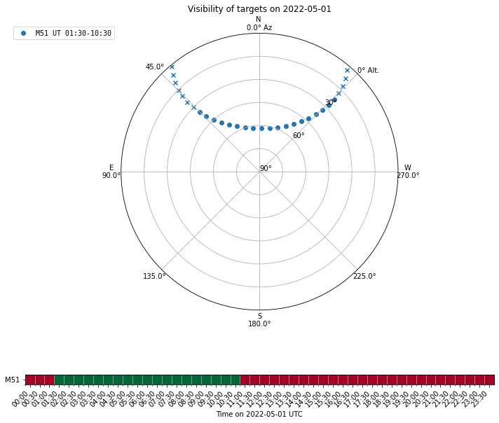
<div class="highlight-default notranslate"><div class="highlight"><pre><span></span><span class="p">(</span><span class="o">&lt;</span><span class="n">Figure</span> <span class="n">size</span> <span class="mi">864</span><span class="n">x720</span> <span class="k">with</span> <span class="mi">2</span> <span class="n">Axes</span><span class="o">&gt;</span><span class="p">,</span> <span class="n">GridSpec</span><span class="p">(</span><span class="mi">2</span><span class="p">,</span> <span class="mi">1</span><span class="p">,</span> <span class="n">height_ratios</span><span class="o">=</span><span class="p">[</span><span class="mi">4</span><span class="p">,</span> <span class="mi">1</span><span class="p">]))</span>
</pre></div>
</div>
<p>The visiblity plot indicates that we could observe the target between
1:30 and 10:30 UT.</p>
<p>Then we create the mapping pattern model with is a 5’ by 5’ lissajous
pattern. Note that the <code class="docutils literal notranslate"><span class="pre">x_omega</span></code> and <code class="docutils literal notranslate"><span class="pre">y_omega</span></code> are the angular
frequencies of the underlying sinunoidial functions in x and y direction
and the scan speed in each direction is estimated to be
<code class="docutils literal notranslate"><span class="pre">0.5</span> <span class="pre">*</span> <span class="pre">length</span> <span class="pre">*</span> <span class="pre">omega</span></code>.</p>
<p><span class="inputnumrole">In[6]:</span></p>
<div class="highlight-python notranslate"><div class="highlight"><pre><span></span><span class="kn">from</span> <span class="nn">tolteca.simu.mapping.lissajous</span> <span class="kn">import</span> <span class="n">SkyLissajousModel</span>
<span class="n">m_lissajous</span> <span class="o">=</span> <span class="n">SkyLissajousModel</span><span class="p">(</span>
    <span class="n">x_length</span><span class="o">=</span><span class="mi">5</span> <span class="o">&lt;&lt;</span> <span class="n">u</span><span class="o">.</span><span class="n">arcmin</span><span class="p">,</span> <span class="n">y_length</span><span class="o">=</span><span class="mi">5</span> <span class="o">&lt;&lt;</span> <span class="n">u</span><span class="o">.</span><span class="n">arcmin</span><span class="p">,</span>
    <span class="n">x_omega</span><span class="o">=</span><span class="mf">0.5</span> <span class="o">&lt;&lt;</span> <span class="n">u</span><span class="o">.</span><span class="n">cy</span> <span class="o">/</span> <span class="n">u</span><span class="o">.</span><span class="n">s</span><span class="p">,</span> <span class="n">y_omega</span><span class="o">=</span><span class="mf">0.511</span> <span class="o">&lt;&lt;</span> <span class="n">u</span><span class="o">.</span><span class="n">cy</span> <span class="o">/</span> <span class="n">u</span><span class="o">.</span><span class="n">s</span><span class="p">,</span>
    <span class="n">delta</span><span class="o">=</span><span class="mi">45</span> <span class="o">&lt;&lt;</span> <span class="n">u</span><span class="o">.</span><span class="n">deg</span><span class="p">,</span>
    <span class="n">rot</span><span class="o">=</span><span class="mi">0</span> <span class="o">&lt;&lt;</span> <span class="n">u</span><span class="o">.</span><span class="n">deg</span><span class="p">,</span>
    <span class="p">)</span>
<span class="c1"># the time to finish the pattern</span>
<span class="n">t_pattern</span> <span class="o">=</span> <span class="n">m_lissajous</span><span class="o">.</span><span class="n">t_pattern</span>
<span class="nb">print</span><span class="p">(</span><span class="sa">f</span><span class="s2">&quot;mapping pattern model:</span><span class="se">\n</span><span class="si">{</span><span class="n">m_lissajous</span><span class="si">}</span><span class="se">\n</span><span class="s2">t_pattern=</span><span class="si">{</span><span class="n">t_pattern</span><span class="si">}</span><span class="s2">&quot;</span><span class="p">)</span>
<span class="c1"># make a time grid for evaluating the pattern</span>
<span class="n">t_grid</span> <span class="o">=</span> <span class="n">np</span><span class="o">.</span><span class="n">arange</span><span class="p">(</span><span class="mi">0</span><span class="p">,</span> <span class="n">t_pattern</span><span class="o">.</span><span class="n">to_value</span><span class="p">(</span><span class="n">u</span><span class="o">.</span><span class="n">s</span><span class="p">),</span> <span class="mf">0.1</span><span class="p">)</span> <span class="o">&lt;&lt;</span> <span class="n">u</span><span class="o">.</span><span class="n">s</span>
<span class="n">dlon</span><span class="p">,</span> <span class="n">dlat</span> <span class="o">=</span> <span class="n">m_lissajous</span><span class="p">(</span><span class="n">t_grid</span><span class="p">)</span>
<span class="n">fig</span><span class="p">,</span> <span class="n">ax</span> <span class="o">=</span> <span class="n">plt</span><span class="o">.</span><span class="n">subplots</span><span class="p">(</span><span class="mi">1</span><span class="p">,</span> <span class="mi">1</span><span class="p">)</span>
<span class="n">ax</span><span class="o">.</span><span class="n">set_aspect</span><span class="p">(</span><span class="s1">&#39;equal&#39;</span><span class="p">)</span>
<span class="n">ax</span><span class="o">.</span><span class="n">plot</span><span class="p">(</span><span class="n">dlon</span><span class="p">,</span> <span class="n">dlat</span><span class="p">)</span>
<span class="n">ax</span><span class="o">.</span><span class="n">set_xlabel</span><span class="p">(</span><span class="s1">&#39;$\Delta$ Longitude (arcmin)&#39;</span><span class="p">)</span>
<span class="n">ax</span><span class="o">.</span><span class="n">set_ylabel</span><span class="p">(</span><span class="s1">&#39;$\Delta$ Latitude (arcmin)&#39;</span><span class="p">)</span>
<span class="n">ax</span><span class="o">.</span><span class="n">invert_xaxis</span><span class="p">()</span>
</pre></div>
</div>
<p><span class="outputnumrole">Out[6]:</span></p>
<div class="highlight-default notranslate"><div class="highlight"><pre><span></span><span class="n">mapping</span> <span class="n">pattern</span> <span class="n">model</span><span class="p">:</span>
<span class="n">Model</span><span class="p">:</span> <span class="n">SkyLissajousModel</span>
<span class="n">Name</span><span class="p">:</span> <span class="n">lissajous</span>
<span class="n">Inputs</span><span class="p">:</span> <span class="p">(</span><span class="s1">&#39;t&#39;</span><span class="p">,)</span>
<span class="n">Outputs</span><span class="p">:</span> <span class="p">(</span><span class="s1">&#39;lon&#39;</span><span class="p">,</span> <span class="s1">&#39;lat&#39;</span><span class="p">)</span>
<span class="n">Model</span> <span class="nb">set</span> <span class="n">size</span><span class="p">:</span> <span class="mi">1</span>
<span class="n">Parameters</span><span class="p">:</span>
    <span class="n">x_length</span> <span class="n">y_length</span>  <span class="n">x_omega</span>   <span class="n">y_omega</span>  <span class="n">delta</span> <span class="n">rot</span>
     <span class="n">arcmin</span>   <span class="n">arcmin</span>  <span class="n">cycle</span> <span class="o">/</span> <span class="n">s</span> <span class="n">cycle</span> <span class="o">/</span> <span class="n">s</span>  <span class="n">deg</span>  <span class="n">deg</span>
    <span class="o">--------</span> <span class="o">--------</span> <span class="o">---------</span> <span class="o">---------</span> <span class="o">-----</span> <span class="o">---</span>
         <span class="mf">5.0</span>      <span class="mf">5.0</span>       <span class="mf">0.5</span>     <span class="mf">0.511</span>  <span class="mf">45.0</span> <span class="mf">0.0</span>
<span class="n">t_pattern</span><span class="o">=</span><span class="mf">194.0</span> <span class="n">s</span>
</pre></div>
</div>
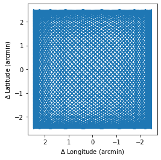
<p>The mapping pattern model produces the mapping pattern in relative
coordinates. The pattern is not related to any specific sky coordinates
frame yet.</p>
<p>To attach the mapping pattern to the target coordinate, in our case, the
M51, we’ll make use of the <code class="docutils literal notranslate"><span class="pre">astropy.coordinates.SkyOffsetFrame</span></code> from
astropy. Note that here we need to make the choose of the <code class="docutils literal notranslate"><span class="pre">ref_frame</span></code>,
which is the coordinates frame in which the mapping pattern is applied.
For LMT/TolTEC, the native choice is to use the <code class="docutils literal notranslate"><span class="pre">AltAz</span></code> frame, which
requires the observation time as input. Here according to our visibility
plot, we choose the observation time to be at 2022-05-01 6:00:00 UT.</p>
<p><span class="inputnumrole">In[7]:</span></p>
<div class="highlight-python notranslate"><div class="highlight"><pre><span></span><span class="c1"># we obtain altaz frame for the observation,</span>
<span class="c1"># using the astroplan observer instance from the lmt_info dict</span>
<span class="kn">from</span> <span class="nn">tolteca.simu.lmt</span> <span class="kn">import</span> <span class="n">lmt_info</span>
<span class="kn">from</span> <span class="nn">astropy.coordinates</span> <span class="kn">import</span> <span class="n">SkyCoord</span>

<span class="n">lmt_observer</span> <span class="o">=</span> <span class="n">lmt_info</span><span class="p">[</span><span class="s1">&#39;observer&#39;</span><span class="p">]</span>
<span class="n">t0</span> <span class="o">=</span> <span class="n">Time</span><span class="p">(</span><span class="s2">&quot;2022-05-01T06:00:00&quot;</span><span class="p">)</span>
<span class="n">m51_icrs</span> <span class="o">=</span> <span class="n">m51_coords</span><span class="o">.</span><span class="n">transform_to</span><span class="p">(</span><span class="s2">&quot;icrs&quot;</span><span class="p">)</span>  <span class="c1"># no-op</span>
<span class="n">m51_altaz</span> <span class="o">=</span> <span class="n">m51_coords</span><span class="o">.</span><span class="n">transform_to</span><span class="p">(</span><span class="n">lmt_observer</span><span class="o">.</span><span class="n">altaz</span><span class="p">(</span><span class="n">time</span><span class="o">=</span><span class="n">t0</span><span class="p">))</span>
<span class="n">m51_altaz_offset_frame</span> <span class="o">=</span> <span class="n">m51_altaz</span><span class="o">.</span><span class="n">skyoffset_frame</span><span class="p">()</span>
<span class="n">m51_mapping_traj_altaz</span> <span class="o">=</span> <span class="n">SkyCoord</span><span class="p">(</span><span class="n">dlon</span><span class="p">,</span> <span class="n">dlat</span><span class="p">,</span> <span class="n">frame</span><span class="o">=</span><span class="n">m51_altaz_offset_frame</span><span class="p">)</span><span class="o">.</span><span class="n">transform_to</span><span class="p">(</span><span class="n">m51_altaz</span><span class="p">)</span>
<span class="c1"># transform the trajectory to ICRS</span>
<span class="n">m51_mapping_traj_icrs</span> <span class="o">=</span> <span class="n">m51_mapping_traj_altaz</span><span class="o">.</span><span class="n">transform_to</span><span class="p">(</span><span class="s1">&#39;icrs&#39;</span><span class="p">)</span>

<span class="c1"># make the trajectory plot</span>
<span class="n">fig</span><span class="p">,</span> <span class="n">axes</span> <span class="o">=</span> <span class="n">plt</span><span class="o">.</span><span class="n">subplots</span><span class="p">(</span><span class="mi">1</span><span class="p">,</span> <span class="mi">2</span><span class="p">)</span>
<span class="n">fig</span><span class="o">.</span><span class="n">set_tight_layout</span><span class="p">(</span><span class="kc">True</span><span class="p">)</span>
<span class="c1"># altaz</span>
<span class="n">ax</span> <span class="o">=</span> <span class="n">axes</span><span class="p">[</span><span class="mi">0</span><span class="p">]</span>
<span class="n">ax</span><span class="o">.</span><span class="n">set_aspect</span><span class="p">(</span><span class="mi">1</span> <span class="o">/</span> <span class="n">np</span><span class="o">.</span><span class="n">cos</span><span class="p">(</span><span class="n">m51_mapping_traj_altaz</span><span class="o">.</span><span class="n">alt</span><span class="o">.</span><span class="n">mean</span><span class="p">()))</span>
<span class="n">ax</span><span class="o">.</span><span class="n">plot</span><span class="p">(</span><span class="n">m51_mapping_traj_altaz</span><span class="o">.</span><span class="n">az</span><span class="o">.</span><span class="n">degree</span><span class="p">,</span> <span class="n">m51_mapping_traj_altaz</span><span class="o">.</span><span class="n">alt</span><span class="o">.</span><span class="n">degree</span><span class="p">)</span>
<span class="n">ax</span><span class="o">.</span><span class="n">plot</span><span class="p">(</span><span class="n">m51_altaz</span><span class="o">.</span><span class="n">az</span><span class="o">.</span><span class="n">degree</span><span class="p">,</span> <span class="n">m51_altaz</span><span class="o">.</span><span class="n">alt</span><span class="o">.</span><span class="n">degree</span><span class="p">,</span> <span class="n">label</span><span class="o">=</span><span class="s1">&#39;M51&#39;</span><span class="p">,</span> <span class="n">marker</span><span class="o">=</span><span class="s1">&#39;o&#39;</span><span class="p">,</span> <span class="n">markersize</span><span class="o">=</span><span class="mi">10</span><span class="p">,</span> <span class="n">color</span><span class="o">=</span><span class="s1">&#39;red&#39;</span><span class="p">)</span>
<span class="n">ax</span><span class="o">.</span><span class="n">set_xlabel</span><span class="p">(</span><span class="s1">&#39;Az (deg)&#39;</span><span class="p">)</span>
<span class="n">ax</span><span class="o">.</span><span class="n">set_ylabel</span><span class="p">(</span><span class="s1">&#39;Alt (deg)&#39;</span><span class="p">)</span>
<span class="n">ax</span><span class="o">.</span><span class="n">invert_xaxis</span><span class="p">()</span>
<span class="c1"># icrs</span>
<span class="n">ax</span> <span class="o">=</span> <span class="n">axes</span><span class="p">[</span><span class="mi">1</span><span class="p">]</span>
<span class="n">ax</span><span class="o">.</span><span class="n">set_aspect</span><span class="p">(</span><span class="mi">1</span> <span class="o">/</span> <span class="n">np</span><span class="o">.</span><span class="n">cos</span><span class="p">(</span><span class="n">m51_mapping_traj_icrs</span><span class="o">.</span><span class="n">dec</span><span class="o">.</span><span class="n">mean</span><span class="p">()))</span>
<span class="n">ax</span><span class="o">.</span><span class="n">plot</span><span class="p">(</span><span class="n">m51_mapping_traj_icrs</span><span class="o">.</span><span class="n">ra</span><span class="o">.</span><span class="n">degree</span><span class="p">,</span> <span class="n">m51_mapping_traj_icrs</span><span class="o">.</span><span class="n">dec</span><span class="o">.</span><span class="n">degree</span><span class="p">)</span>
<span class="n">ax</span><span class="o">.</span><span class="n">plot</span><span class="p">(</span><span class="n">m51_icrs</span><span class="o">.</span><span class="n">ra</span><span class="o">.</span><span class="n">degree</span><span class="p">,</span> <span class="n">m51_icrs</span><span class="o">.</span><span class="n">dec</span><span class="o">.</span><span class="n">degree</span><span class="p">,</span> <span class="n">label</span><span class="o">=</span><span class="s1">&#39;M51&#39;</span><span class="p">,</span> <span class="n">marker</span><span class="o">=</span><span class="s1">&#39;o&#39;</span><span class="p">,</span> <span class="n">markersize</span><span class="o">=</span><span class="mi">10</span><span class="p">,</span> <span class="n">color</span><span class="o">=</span><span class="s1">&#39;red&#39;</span><span class="p">)</span>
<span class="n">ax</span><span class="o">.</span><span class="n">set_xlabel</span><span class="p">(</span><span class="s1">&#39;RA (deg)&#39;</span><span class="p">)</span>
<span class="n">ax</span><span class="o">.</span><span class="n">set_ylabel</span><span class="p">(</span><span class="s1">&#39;Dec (deg)&#39;</span><span class="p">)</span>
<span class="n">ax</span><span class="o">.</span><span class="n">invert_xaxis</span><span class="p">()</span>
</pre></div>
</div>
<p><span class="outputnumrole">Out[7]:</span></p>
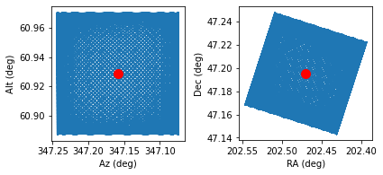
<p>Using the mapping trajectories created above, we could generate
approximated coverage map if we also know the focal plane layout, for
instruments like TolTEC, by convolving the focal plane layout image with
mapping pattern.</p>
<p>The coverage map obtained this way is approximate, because it assumes a
constant focal plane layout throughout the observation, which is not the
case due to the rotation of the FOV when the telescope is pointed at
different altitudes. For TolTEC, because the focal plane layout is
largely central symmetric, the difference is not large.</p>
<p>To create the coverage map, we use the function
<code class="docutils literal notranslate"><span class="pre">tolteca.simu.utils.make_cov_hdu_approx</span></code>:</p>
<blockquote>
<div><p>TODO: refactor <code class="docutils literal notranslate"><span class="pre">tolteca.web.templates.obs_planner</span></code> to move
<code class="docutils literal notranslate"><span class="pre">_make_cov_hdu_approx</span></code> to tolteca.simu.utils. Then update the
snippet here for creating the coverage map.</p>
</div></blockquote>
<p><span class="inputnumrole">In[8]:</span></p>
<div class="highlight-python notranslate"><div class="highlight"><pre><span></span><span class="c1"># TODO demostrate the coverage map creation here</span>
<span class="c1"># from tolteca.simu.uitls import make_cov_hdu_approx</span>
<span class="c1"># hdu_cov = make_cov_hdu_approx(...)</span>
</pre></div>
</div>
</div>
<div class="section" id="pre-render-point-source-catalogs-as-fits-images">
<h3>Pre-render point source catalogs as FITS images<a class="headerlink" href="#pre-render-point-source-catalogs-as-fits-images" title="Permalink to this headline">¶</a></h3>
<p>In the simulation config, we added two simulation sources, one is a
point source catalog, the other is the power loading model for TolTEC.
Internally, the astronomical signal probed by the simulator is a FITS
image model (<code class="docutils literal notranslate"><span class="pre">tolteca.simu.sources.models.ImageSourceModel</span></code>) instance
that is created with the point source catalog at the begining of the
simulation run.</p>
<p>When the point source catalog contains a lot of sources, this conversion
may take a long time. It is then a waste of time if one would like to
run the simulator multiple times with different mapping patterns.</p>
<p>In this case, it is helpful to pre-render the point source catalog as
FITS images and specify the renderred FITS image in the sources list in
the simulator config. Here we walk through the steps:</p>
<p><span class="inputnumrole">In[9]:</span></p>
<div class="highlight-python notranslate"><div class="highlight"><pre><span></span><span class="c1"># First we load the catalog</span>
<span class="kn">from</span> <span class="nn">astropy.table</span> <span class="kn">import</span> <span class="n">Table</span>
<span class="n">cat</span> <span class="o">=</span> <span class="n">Table</span><span class="o">.</span><span class="n">read</span><span class="p">(</span><span class="n">tmpdir</span><span class="o">.</span><span class="n">joinpath</span><span class="p">(</span><span class="s1">&#39;three_sources.txt&#39;</span><span class="p">),</span> <span class="nb">format</span><span class="o">=</span><span class="s1">&#39;ascii.commented_header&#39;</span><span class="p">)</span>
<span class="nb">print</span><span class="p">(</span><span class="n">cat</span><span class="p">)</span>

<span class="c1"># create the catalog source model</span>
<span class="c1"># here we associate the flux columns with the TolTEC</span>
<span class="c1"># array names using the data_cols list</span>
<span class="kn">from</span> <span class="nn">tolteca.simu.sources.models</span> <span class="kn">import</span> <span class="n">CatalogSourceModel</span>

<span class="n">m_cat</span> <span class="o">=</span> <span class="n">CatalogSourceModel</span><span class="p">(</span>
        <span class="n">catalog</span><span class="o">=</span><span class="n">cat</span><span class="p">,</span>
        <span class="n">data_cols</span><span class="o">=</span><span class="p">[</span>
            <span class="p">{</span>
                <span class="s1">&#39;colname&#39;</span><span class="p">:</span> <span class="s1">&#39;f_a1100&#39;</span><span class="p">,</span>
                <span class="s1">&#39;array_name&#39;</span><span class="p">:</span> <span class="s1">&#39;a1100&#39;</span>
                <span class="p">},</span>
            <span class="p">{</span>
                <span class="s1">&#39;colname&#39;</span><span class="p">:</span> <span class="s1">&#39;f_a1400&#39;</span><span class="p">,</span>
                <span class="s1">&#39;array_name&#39;</span><span class="p">:</span> <span class="s1">&#39;a1400&#39;</span>
                <span class="p">},</span>
            <span class="p">{</span>
                <span class="s1">&#39;colname&#39;</span><span class="p">:</span> <span class="s1">&#39;f_a2000&#39;</span><span class="p">,</span>
                <span class="s1">&#39;array_name&#39;</span><span class="p">:</span> <span class="s1">&#39;a2000&#39;</span>
                <span class="p">},</span>
            <span class="p">]</span>
        <span class="p">)</span>
<span class="nb">print</span><span class="p">(</span><span class="n">m_cat</span><span class="p">)</span>

<span class="c1"># now get the image_source model, for this we need the fwhms</span>
<span class="c1"># for the toltec arrays, which can be found in the toltec_info dict</span>
<span class="kn">from</span> <span class="nn">tolteca.simu.toltec.toltec_info</span> <span class="kn">import</span> <span class="n">toltec_info</span>

<span class="n">fwhms</span> <span class="o">=</span> <span class="nb">dict</span><span class="p">()</span>
<span class="k">for</span> <span class="n">array_name</span> <span class="ow">in</span> <span class="n">toltec_info</span><span class="p">[</span><span class="s1">&#39;array_names&#39;</span><span class="p">]:</span>
    <span class="n">fwhms</span><span class="p">[</span><span class="n">array_name</span><span class="p">]</span> <span class="o">=</span> <span class="n">toltec_info</span><span class="p">[</span><span class="n">array_name</span><span class="p">][</span><span class="s1">&#39;a_fwhm&#39;</span><span class="p">]</span>

<span class="c1"># now render the image with 0.2 arcsec pixel size.</span>
<span class="n">pixscale</span> <span class="o">=</span> <span class="mf">0.2</span> <span class="o">&lt;&lt;</span> <span class="n">u</span><span class="o">.</span><span class="n">arcsec</span> <span class="o">/</span> <span class="n">u</span><span class="o">.</span><span class="n">pix</span>
<span class="n">m_img</span> <span class="o">=</span> <span class="n">m_cat</span><span class="o">.</span><span class="n">make_image_model</span><span class="p">(</span>
        <span class="n">fwhms</span><span class="o">=</span><span class="n">fwhms</span><span class="p">,</span>
        <span class="n">pixscale</span><span class="o">=</span><span class="n">pixscale</span>
        <span class="p">)</span>
<span class="c1"># the rendered data are stored in ImageHDUs in the m_img.data table</span>
<span class="nb">print</span><span class="p">(</span><span class="n">m_img</span><span class="o">.</span><span class="n">data</span><span class="p">[</span><span class="s1">&#39;hdu&#39;</span><span class="p">])</span>

<span class="c1"># we can visualize the HDUs for each of the TolTEC array</span>
<span class="kn">from</span> <span class="nn">astropy.wcs</span> <span class="kn">import</span> <span class="n">WCS</span>

<span class="n">fig</span> <span class="o">=</span> <span class="n">plt</span><span class="o">.</span><span class="n">figure</span><span class="p">(</span><span class="n">figsize</span><span class="o">=</span><span class="p">(</span><span class="mi">10</span><span class="p">,</span> <span class="mi">5</span><span class="p">))</span>
<span class="n">fig</span><span class="o">.</span><span class="n">subplots_adjust</span><span class="p">(</span><span class="n">wspace</span><span class="o">=</span><span class="mf">0.9</span><span class="p">)</span>
<span class="n">n_hdus</span> <span class="o">=</span> <span class="nb">len</span><span class="p">(</span><span class="n">m_img</span><span class="o">.</span><span class="n">data</span><span class="p">)</span>

<span class="c1"># we set the vmax to be at 50 MJy/sr which is about 25mJy in a1100</span>
<span class="kn">from</span> <span class="nn">astropy.modeling.functional_models</span> <span class="kn">import</span> <span class="n">GAUSSIAN_SIGMA_TO_FWHM</span>
<span class="n">vmax</span> <span class="o">=</span> <span class="mi">50</span>
<span class="k">for</span> <span class="n">i</span><span class="p">,</span> <span class="n">entry</span> <span class="ow">in</span> <span class="nb">enumerate</span><span class="p">(</span><span class="n">m_img</span><span class="o">.</span><span class="n">data</span><span class="p">):</span>
    <span class="n">hdu</span> <span class="o">=</span> <span class="n">entry</span><span class="p">[</span><span class="s1">&#39;hdu&#39;</span><span class="p">]</span>
    <span class="n">array_name</span> <span class="o">=</span> <span class="n">entry</span><span class="p">[</span><span class="s1">&#39;array_name&#39;</span><span class="p">]</span>
    <span class="n">w</span> <span class="o">=</span> <span class="n">WCS</span><span class="p">(</span><span class="n">hdu</span><span class="o">.</span><span class="n">header</span><span class="p">)</span>
    <span class="n">ax</span> <span class="o">=</span> <span class="n">fig</span><span class="o">.</span><span class="n">add_subplot</span><span class="p">(</span><span class="mi">1</span><span class="p">,</span> <span class="n">n_hdus</span><span class="p">,</span> <span class="n">i</span> <span class="o">+</span> <span class="mi">1</span><span class="p">,</span> <span class="n">projection</span><span class="o">=</span><span class="n">w</span><span class="p">)</span>
    <span class="n">ax</span><span class="o">.</span><span class="n">set_aspect</span><span class="p">(</span><span class="s1">&#39;equal&#39;</span><span class="p">)</span>
    <span class="n">ax</span><span class="o">.</span><span class="n">set_title</span><span class="p">(</span><span class="sa">f</span><span class="s1">&#39;</span><span class="si">{</span><span class="n">array_name</span><span class="si">}</span><span class="s1">&#39;</span><span class="p">)</span>
    <span class="n">ax</span><span class="o">.</span><span class="n">imshow</span><span class="p">(</span><span class="n">hdu</span><span class="o">.</span><span class="n">data</span><span class="p">,</span> <span class="n">vmin</span><span class="o">=</span><span class="mi">0</span><span class="p">,</span> <span class="n">vmax</span><span class="o">=</span><span class="n">vmax</span><span class="p">)</span>
    <span class="c1"># label the sources</span>
    <span class="k">for</span> <span class="n">p</span><span class="p">,</span> <span class="n">n</span> <span class="ow">in</span> <span class="nb">zip</span><span class="p">(</span><span class="n">m_cat</span><span class="o">.</span><span class="n">pos</span><span class="p">,</span> <span class="n">cat</span><span class="p">[</span><span class="s1">&#39;name&#39;</span><span class="p">]):</span>
        <span class="n">ax</span><span class="o">.</span><span class="n">text</span><span class="p">(</span><span class="n">p</span><span class="o">.</span><span class="n">ra</span><span class="o">.</span><span class="n">degree</span><span class="p">,</span> <span class="n">p</span><span class="o">.</span><span class="n">dec</span><span class="o">.</span><span class="n">degree</span><span class="p">,</span> <span class="n">n</span><span class="p">,</span> <span class="n">transform</span><span class="o">=</span><span class="n">ax</span><span class="o">.</span><span class="n">get_transform</span><span class="p">(</span><span class="s1">&#39;icrs&#39;</span><span class="p">),</span> <span class="n">color</span><span class="o">=</span><span class="s1">&#39;red&#39;</span><span class="p">)</span>
    <span class="c1"># just print the coversion factor between MJy/sr and mJy/beam</span>
    <span class="c1"># for reference</span>
    <span class="n">beam_area</span> <span class="o">=</span> <span class="mi">2</span> <span class="o">*</span> <span class="n">np</span><span class="o">.</span><span class="n">pi</span> <span class="o">*</span> <span class="p">(</span><span class="n">fwhms</span><span class="p">[</span><span class="n">array_name</span><span class="p">]</span> <span class="o">/</span> <span class="n">GAUSSIAN_SIGMA_TO_FWHM</span><span class="p">)</span> <span class="o">**</span> <span class="mi">2</span>
    <span class="n">beam_area_pix2</span> <span class="o">=</span> <span class="mi">2</span> <span class="o">*</span> <span class="n">np</span><span class="o">.</span><span class="n">pi</span> <span class="o">*</span> <span class="p">(</span><span class="n">fwhms</span><span class="p">[</span><span class="n">array_name</span><span class="p">]</span><span class="o">.</span><span class="n">to</span><span class="p">(</span><span class="n">u</span><span class="o">.</span><span class="n">pix</span><span class="p">,</span> <span class="n">equivalencies</span><span class="o">=</span><span class="n">u</span><span class="o">.</span><span class="n">pixel_scale</span><span class="p">(</span><span class="n">pixscale</span><span class="p">))</span> <span class="o">/</span> <span class="n">GAUSSIAN_SIGMA_TO_FWHM</span><span class="p">)</span> <span class="o">**</span> <span class="mi">2</span>
    <span class="n">conv</span> <span class="o">=</span> <span class="p">(</span><span class="mi">1</span> <span class="o">&lt;&lt;</span> <span class="n">u</span><span class="o">.</span><span class="n">mJy</span><span class="o">/</span><span class="n">u</span><span class="o">.</span><span class="n">beam</span><span class="p">)</span><span class="o">.</span><span class="n">to_value</span><span class="p">(</span><span class="n">u</span><span class="o">.</span><span class="n">MJy</span> <span class="o">/</span> <span class="n">u</span><span class="o">.</span><span class="n">sr</span><span class="p">,</span> <span class="n">equivalencies</span><span class="o">=</span><span class="n">u</span><span class="o">.</span><span class="n">beam_angular_area</span><span class="p">(</span><span class="n">beam_area</span><span class="p">))</span>
    <span class="nb">print</span><span class="p">(</span><span class="n">pformat_yaml</span><span class="p">({</span>
        <span class="s2">&quot;Array_name&quot;</span><span class="p">:</span> <span class="n">array_name</span><span class="p">,</span>
        <span class="s2">&quot;Beam_area&quot;</span><span class="p">:</span> <span class="sa">f</span><span class="s1">&#39;</span><span class="si">{</span><span class="n">beam_area</span><span class="si">:</span><span class="s1">.3f</span><span class="si">}</span><span class="s1">&#39;</span><span class="p">,</span>
        <span class="s2">&quot;Beam_area_pix2&quot;</span><span class="p">:</span> <span class="sa">f</span><span class="s1">&#39;</span><span class="si">{</span><span class="n">beam_area_pix2</span><span class="si">:</span><span class="s1">.3f</span><span class="si">}</span><span class="s1">&#39;</span><span class="p">,</span>
        <span class="s2">&quot;MJy/sr per mJy/beam&quot;</span><span class="p">:</span> <span class="sa">f</span><span class="s1">&#39;</span><span class="si">{</span><span class="n">conv</span><span class="si">:</span><span class="s1">.2f</span><span class="si">}</span><span class="s1">&#39;</span><span class="p">,</span>
        <span class="s2">&quot;mJy/beam per MJy/sr&quot;</span><span class="p">:</span> <span class="sa">f</span><span class="s1">&#39;</span><span class="si">{</span><span class="mi">1</span> <span class="o">/</span> <span class="n">conv</span><span class="si">:</span><span class="s1">.2f</span><span class="si">}</span><span class="s1">&#39;</span><span class="p">,</span>
        <span class="p">}))</span>
</pre></div>
</div>
<p><span class="outputnumrole">Out[9]:</span></p>
<div class="highlight-default notranslate"><div class="highlight"><pre><span></span><span class="n">name</span>   <span class="n">ra</span>    <span class="n">dec</span>  <span class="n">f_a1100</span> <span class="n">f_a1400</span> <span class="n">f_a2000</span>
<span class="o">----</span> <span class="o">------</span> <span class="o">-----</span> <span class="o">-------</span> <span class="o">-------</span> <span class="o">-------</span>
<span class="n">src0</span>  <span class="mf">180.0</span>   <span class="mf">0.0</span>      <span class="mi">10</span>      <span class="mi">20</span>      <span class="mi">30</span>
<span class="n">src1</span> <span class="mf">180.01</span>   <span class="mf">0.0</span>      <span class="mi">20</span>      <span class="mi">30</span>      <span class="mi">40</span>
<span class="n">src2</span> <span class="mf">180.01</span> <span class="o">-</span><span class="mf">0.01</span>      <span class="mi">30</span>      <span class="mi">40</span>      <span class="mi">50</span>
<span class="n">Model</span><span class="p">:</span> <span class="n">CatalogSourceModel</span>
<span class="n">Inputs</span><span class="p">:</span> <span class="p">(</span><span class="s1">&#39;label&#39;</span><span class="p">,</span> <span class="s1">&#39;lon&#39;</span><span class="p">,</span> <span class="s1">&#39;lat&#39;</span><span class="p">,</span> <span class="s1">&#39;pa&#39;</span><span class="p">)</span>
<span class="n">Outputs</span><span class="p">:</span> <span class="p">(</span><span class="s1">&#39;S&#39;</span><span class="p">,)</span>
<span class="n">Model</span> <span class="nb">set</span> <span class="n">size</span><span class="p">:</span> <span class="mi">1</span>
<span class="n">Parameters</span><span class="p">:</span>
                           <span class="n">hdu</span>
<span class="o">----------------------------------------------------------</span>
<span class="o">&lt;</span><span class="n">astropy</span><span class="o">.</span><span class="n">io</span><span class="o">.</span><span class="n">fits</span><span class="o">.</span><span class="n">hdu</span><span class="o">.</span><span class="n">image</span><span class="o">.</span><span class="n">ImageHDU</span> <span class="nb">object</span> <span class="n">at</span> <span class="mh">0x13beb8940</span><span class="o">&gt;</span>
<span class="o">&lt;</span><span class="n">astropy</span><span class="o">.</span><span class="n">io</span><span class="o">.</span><span class="n">fits</span><span class="o">.</span><span class="n">hdu</span><span class="o">.</span><span class="n">image</span><span class="o">.</span><span class="n">ImageHDU</span> <span class="nb">object</span> <span class="n">at</span> <span class="mh">0x13d1faf40</span><span class="o">&gt;</span>
<span class="o">&lt;</span><span class="n">astropy</span><span class="o">.</span><span class="n">io</span><span class="o">.</span><span class="n">fits</span><span class="o">.</span><span class="n">hdu</span><span class="o">.</span><span class="n">image</span><span class="o">.</span><span class="n">ImageHDU</span> <span class="nb">object</span> <span class="n">at</span> <span class="mh">0x13beb8bb0</span><span class="o">&gt;</span>

<span class="n">Array_name</span><span class="p">:</span> <span class="n">a1100</span>
<span class="n">Beam_area</span><span class="p">:</span> <span class="mf">28.327</span> <span class="n">arcsec2</span>
<span class="n">Beam_area_pix2</span><span class="p">:</span> <span class="mf">708.181</span> <span class="n">pix2</span>
<span class="s1">&#39;MJy/sr per mJy/beam&#39;</span><span class="p">:</span> <span class="mf">1.50</span>
<span class="s1">&#39;mJy/beam per MJy/sr&#39;</span><span class="p">:</span> <span class="mf">0.67</span>


<span class="n">Array_name</span><span class="p">:</span> <span class="n">a1400</span>
<span class="n">Beam_area</span><span class="p">:</span> <span class="mf">45.885</span> <span class="n">arcsec2</span>
<span class="n">Beam_area_pix2</span><span class="p">:</span> <span class="mf">1147.137</span> <span class="n">pix2</span>
<span class="s1">&#39;MJy/sr per mJy/beam&#39;</span><span class="p">:</span> <span class="mf">0.93</span>
<span class="s1">&#39;mJy/beam per MJy/sr&#39;</span><span class="p">:</span> <span class="mf">1.08</span>


<span class="n">Array_name</span><span class="p">:</span> <span class="n">a2000</span>
<span class="n">Beam_area</span><span class="p">:</span> <span class="mf">93.644</span> <span class="n">arcsec2</span>
<span class="n">Beam_area_pix2</span><span class="p">:</span> <span class="mf">2341.095</span> <span class="n">pix2</span>
<span class="s1">&#39;MJy/sr per mJy/beam&#39;</span><span class="p">:</span> <span class="mf">0.45</span>
<span class="s1">&#39;mJy/beam per MJy/sr&#39;</span><span class="p">:</span> <span class="mf">2.20</span>
</pre></div>
</div>
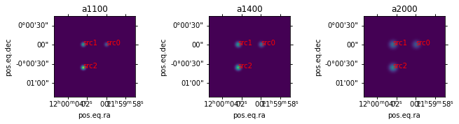
<p>Just to demonstrate the correctness of the rendering, we extrat the
source flux from the rendered HDU using photutils and compare:</p>
<p><span class="inputnumrole">In[10]:</span></p>
<div class="highlight-python notranslate"><div class="highlight"><pre><span></span><span class="kn">from</span> <span class="nn">photutils.psf</span> <span class="kn">import</span> <span class="n">DAOGroup</span>
<span class="kn">from</span> <span class="nn">photutils.psf</span> <span class="kn">import</span> <span class="p">(</span>
            <span class="n">IntegratedGaussianPRF</span><span class="p">,</span>
            <span class="n">BasicPSFPhotometry</span><span class="p">)</span>
<span class="kn">from</span> <span class="nn">photutils.background</span> <span class="kn">import</span> <span class="n">MMMBackground</span>
<span class="kn">from</span> <span class="nn">astropy.modeling.fitting</span> <span class="kn">import</span> <span class="n">LevMarLSQFitter</span>
<span class="kn">from</span> <span class="nn">astropy.stats</span> <span class="kn">import</span> <span class="n">SigmaClip</span>
<span class="kn">from</span> <span class="nn">photutils.background</span> <span class="kn">import</span> <span class="n">Background2D</span>
<span class="kn">from</span> <span class="nn">photutils</span> <span class="kn">import</span> <span class="n">CircularAperture</span>

<span class="k">for</span> <span class="n">i</span><span class="p">,</span> <span class="n">entry</span> <span class="ow">in</span> <span class="nb">enumerate</span><span class="p">(</span><span class="n">m_img</span><span class="o">.</span><span class="n">data</span><span class="p">):</span>
    <span class="n">hdu</span> <span class="o">=</span> <span class="n">entry</span><span class="p">[</span><span class="s1">&#39;hdu&#39;</span><span class="p">]</span>
    <span class="n">array_name</span> <span class="o">=</span> <span class="n">entry</span><span class="p">[</span><span class="s1">&#39;array_name&#39;</span><span class="p">]</span>
    <span class="n">wcsobj</span> <span class="o">=</span> <span class="n">WCS</span><span class="p">(</span><span class="n">hdu</span><span class="o">.</span><span class="n">header</span><span class="p">)</span>
    <span class="c1"># source catalog for extract flux</span>
    <span class="n">x_src</span><span class="p">,</span> <span class="n">y_src</span> <span class="o">=</span> <span class="n">wcsobj</span><span class="o">.</span><span class="n">all_world2pix</span><span class="p">(</span><span class="n">m_cat</span><span class="o">.</span><span class="n">pos</span><span class="o">.</span><span class="n">ra</span><span class="o">.</span><span class="n">degree</span><span class="p">,</span> <span class="n">m_cat</span><span class="o">.</span><span class="n">pos</span><span class="o">.</span><span class="n">dec</span><span class="o">.</span><span class="n">degree</span><span class="p">,</span> <span class="mi">0</span><span class="p">)</span>
    <span class="n">xy</span> <span class="o">=</span> <span class="n">Table</span><span class="p">(</span><span class="n">names</span><span class="o">=</span><span class="p">[</span><span class="s1">&#39;x_0&#39;</span><span class="p">,</span> <span class="s1">&#39;y_0&#39;</span><span class="p">],</span> <span class="n">data</span><span class="o">=</span><span class="p">[</span><span class="n">x_src</span><span class="p">,</span> <span class="n">y_src</span><span class="p">])</span>
    <span class="c1"># convert the data from MJy/sr to mJy/pix</span>
    <span class="n">fwhm_pix</span> <span class="o">=</span> <span class="n">fwhms</span><span class="p">[</span><span class="n">array_name</span><span class="p">]</span><span class="o">.</span><span class="n">to_value</span><span class="p">(</span><span class="n">u</span><span class="o">.</span><span class="n">pix</span><span class="p">,</span> <span class="n">equivalencies</span><span class="o">=</span><span class="n">u</span><span class="o">.</span><span class="n">pixel_scale</span><span class="p">(</span><span class="n">pixscale</span><span class="p">))</span>
    <span class="n">beam_area</span> <span class="o">=</span> <span class="mi">2</span> <span class="o">*</span> <span class="n">np</span><span class="o">.</span><span class="n">pi</span> <span class="o">*</span> <span class="p">(</span><span class="n">fwhms</span><span class="p">[</span><span class="n">array_name</span><span class="p">]</span> <span class="o">/</span> <span class="n">GAUSSIAN_SIGMA_TO_FWHM</span><span class="p">)</span> <span class="o">**</span> <span class="mi">2</span>
    <span class="n">beam_area_pix2</span> <span class="o">=</span> <span class="mi">2</span> <span class="o">*</span> <span class="n">np</span><span class="o">.</span><span class="n">pi</span> <span class="o">*</span> <span class="p">(</span><span class="n">fwhm_pix</span> <span class="o">/</span> <span class="n">GAUSSIAN_SIGMA_TO_FWHM</span><span class="p">)</span> <span class="o">**</span> <span class="mi">2</span>
    <span class="n">data</span> <span class="o">=</span> <span class="p">(</span><span class="n">hdu</span><span class="o">.</span><span class="n">data</span> <span class="o">&lt;&lt;</span> <span class="n">u</span><span class="o">.</span><span class="n">MJy</span><span class="o">/</span><span class="n">u</span><span class="o">.</span><span class="n">sr</span><span class="p">)</span><span class="o">.</span><span class="n">to_value</span><span class="p">(</span><span class="n">u</span><span class="o">.</span><span class="n">mJy</span> <span class="o">/</span> <span class="n">u</span><span class="o">.</span><span class="n">beam</span><span class="p">,</span> <span class="n">equivalencies</span><span class="o">=</span><span class="n">u</span><span class="o">.</span><span class="n">beam_angular_area</span><span class="p">(</span><span class="n">beam_area</span><span class="p">))</span> <span class="o">/</span> <span class="n">beam_area_pix2</span>
    <span class="n">psf_model</span> <span class="o">=</span> <span class="n">IntegratedGaussianPRF</span><span class="p">(</span><span class="n">sigma</span><span class="o">=</span><span class="n">fwhm_pix</span> <span class="o">/</span> <span class="n">GAUSSIAN_SIGMA_TO_FWHM</span><span class="p">)</span>
    <span class="n">daogroup</span> <span class="o">=</span> <span class="n">DAOGroup</span><span class="p">(</span><span class="mf">1.0</span><span class="p">)</span>  <span class="c1"># 1 pix. this will not group the sources separated larger then 1 pix</span>
    <span class="n">fit_size</span> <span class="o">=</span> <span class="nb">int</span><span class="p">(</span><span class="n">fwhm_pix</span> <span class="o">*</span> <span class="mf">3.</span><span class="p">)</span>  <span class="c1"># fit box of 3 * fwhm_pix</span>
    <span class="k">if</span> <span class="n">fit_size</span> <span class="o">%</span> <span class="mi">2</span> <span class="o">==</span> <span class="mi">0</span><span class="p">:</span>
        <span class="n">fit_size</span> <span class="o">+=</span> <span class="mi">1</span>
    <span class="n">photometry</span> <span class="o">=</span> <span class="n">BasicPSFPhotometry</span><span class="p">(</span>
                        <span class="n">group_maker</span><span class="o">=</span><span class="n">daogroup</span><span class="p">,</span> <span class="n">bkg_estimator</span><span class="o">=</span><span class="kc">None</span><span class="p">,</span>
                        <span class="n">psf_model</span><span class="o">=</span><span class="n">psf_model</span><span class="p">,</span>
                        <span class="n">fitter</span><span class="o">=</span><span class="n">LevMarLSQFitter</span><span class="p">(),</span>
                        <span class="n">fitshape</span><span class="o">=</span><span class="p">(</span><span class="n">fit_size</span><span class="p">,</span> <span class="n">fit_size</span><span class="p">))</span>
    <span class="n">catalog</span> <span class="o">=</span> <span class="n">photometry</span><span class="p">(</span>
        <span class="n">image</span><span class="o">=</span><span class="n">data</span><span class="p">,</span>
        <span class="n">init_guesses</span><span class="o">=</span><span class="n">xy</span><span class="p">)</span>
    <span class="c1"># plot residual</span>
    <span class="nb">print</span><span class="p">(</span><span class="sa">f</span><span class="s2">&quot;Measured fluxes in </span><span class="si">{</span><span class="n">array_name</span><span class="si">}</span><span class="s2">:&quot;</span><span class="p">)</span>
    <span class="nb">print</span><span class="p">(</span><span class="n">catalog</span><span class="p">[[</span><span class="s1">&#39;id&#39;</span><span class="p">,</span> <span class="s1">&#39;x_0&#39;</span><span class="p">,</span> <span class="s1">&#39;y_0&#39;</span><span class="p">,</span> <span class="s1">&#39;flux_fit&#39;</span><span class="p">,</span> <span class="s1">&#39;flux_unc&#39;</span><span class="p">]])</span>
</pre></div>
</div>
<p><span class="outputnumrole">Out[10]:</span></p>
<div class="highlight-default notranslate"><div class="highlight"><pre><span></span><span class="n">Measured</span> <span class="n">fluxes</span> <span class="ow">in</span> <span class="n">a1100</span><span class="p">:</span>
 <span class="nb">id</span>        <span class="n">x_0</span>                <span class="n">y_0</span>              <span class="n">flux_fit</span>             <span class="n">flux_unc</span>
<span class="o">---</span> <span class="o">------------------</span> <span class="o">------------------</span> <span class="o">------------------</span> <span class="o">----------------------</span>
  <span class="mi">1</span> <span class="mf">407.50000129137027</span> <span class="mf">407.50000194197537</span> <span class="mf">10.003695887993354</span>  <span class="mf">4.930980802723185e-05</span>
  <span class="mi">2</span> <span class="mf">227.50000014904077</span>   <span class="mf">407.500001942204</span>  <span class="mf">20.00739177503426</span>  <span class="mf">9.861943003421712e-05</span>
  <span class="mi">3</span> <span class="mf">227.50000151990304</span> <span class="mf">227.50000079956612</span> <span class="mf">30.011087661126002</span> <span class="mf">0.00014792886602262966</span>
<span class="n">Measured</span> <span class="n">fluxes</span> <span class="ow">in</span> <span class="n">a1400</span><span class="p">:</span>
 <span class="nb">id</span>        <span class="n">x_0</span>                <span class="n">y_0</span>              <span class="n">flux_fit</span>             <span class="n">flux_unc</span>
<span class="o">---</span> <span class="o">------------------</span> <span class="o">------------------</span> <span class="o">------------------</span> <span class="o">----------------------</span>
  <span class="mi">1</span> <span class="mf">407.50000129137027</span> <span class="mf">407.50000194197537</span>  <span class="mf">20.00456374918768</span> <span class="mf">4.8055661769248924e-05</span>
  <span class="mi">2</span> <span class="mf">227.50000014904077</span>   <span class="mf">407.500001942204</span> <span class="mf">30.006845623237506</span>  <span class="mf">7.208340868895568e-05</span>
  <span class="mi">3</span> <span class="mf">227.50000151990304</span> <span class="mf">227.50000079956612</span>  <span class="mf">40.00912749692735</span>  <span class="mf">9.611109963276317e-05</span>
<span class="n">Measured</span> <span class="n">fluxes</span> <span class="ow">in</span> <span class="n">a2000</span><span class="p">:</span>
 <span class="nb">id</span>        <span class="n">x_0</span>                <span class="n">y_0</span>              <span class="n">flux_fit</span>             <span class="n">flux_unc</span>
<span class="o">---</span> <span class="o">------------------</span> <span class="o">------------------</span> <span class="o">------------------</span> <span class="o">----------------------</span>
  <span class="mi">1</span> <span class="mf">407.50000129137027</span> <span class="mf">407.50000194197537</span> <span class="mf">30.003354616250434</span> <span class="mf">2.4489269100407914e-05</span>
  <span class="mi">2</span> <span class="mf">227.50000014904077</span>   <span class="mf">407.500001942204</span> <span class="mf">40.004472821493366</span>  <span class="mf">3.265234015614065e-05</span>
  <span class="mi">3</span> <span class="mf">227.50000151990304</span> <span class="mf">227.50000079956612</span>    <span class="mf">50.005591026651</span>   <span class="mf">4.08154018898186e-05</span>
</pre></div>
</div>
<p>As shown in the printed table, the fluxes from the measurements are
consistent with the input catalog.</p>
</div>
<div class="section" id="use-toltec-power-loading-model-to-predict-the-rms-noise">
<h3>Use TolTEC power loading model to predict the RMS noise<a class="headerlink" href="#use-toltec-power-loading-model-to-predict-the-rms-noise" title="Permalink to this headline">¶</a></h3>
<p>The sources list of the YAML config at the begining of this tutorial
contains the item with type <code class="docutils literal notranslate"><span class="pre">toltec_power_loading</span></code>, which simulates
the system efficiency of the telescope/cryostat optics and adds
non-astronomical power loading to the detectors.</p>
<p>The TolTEC power loading model could be used to estimate the mapping
speed/detector sensitivity/mapping depth of the observation.</p>
<p>The conversion between on-sky surface brightness to the detector power
loading can be done with the method
<code class="docutils literal notranslate"><span class="pre">ToltecPowerLoadingModel.sky_sb_to_pwr</span></code>. This takes into account the
TolTEC passband width and all the system efficiency terms:</p>
<p><span class="inputnumrole">In[11]:</span></p>
<div class="highlight-python notranslate"><div class="highlight"><pre><span></span><span class="kn">from</span> <span class="nn">tolteca.simu.toltec.models</span> <span class="kn">import</span> <span class="n">ToltecPowerLoadingModel</span>

<span class="n">m_tpl</span> <span class="o">=</span> <span class="n">ToltecPowerLoadingModel</span><span class="p">(</span><span class="n">atm_model_name</span><span class="o">=</span><span class="kc">None</span><span class="p">)</span>

<span class="c1"># print the power loading for each array for given surface brightness</span>
<span class="k">for</span> <span class="n">array_name</span> <span class="ow">in</span> <span class="n">toltec_info</span><span class="p">[</span><span class="s1">&#39;array_names&#39;</span><span class="p">]:</span>
    <span class="n">sb_unity</span> <span class="o">=</span> <span class="mi">1</span> <span class="o">&lt;&lt;</span> <span class="n">u</span><span class="o">.</span><span class="n">MJy</span><span class="o">/</span><span class="n">u</span><span class="o">.</span><span class="n">sr</span>
    <span class="n">pwr_per_sb_unity</span> <span class="o">=</span> <span class="n">m_tpl</span><span class="o">.</span><span class="n">sky_sb_to_pwr</span><span class="p">(</span><span class="n">det_array_name</span><span class="o">=</span><span class="n">array_name</span><span class="p">,</span> <span class="n">det_s</span><span class="o">=</span><span class="n">sb_unity</span><span class="p">)</span>
    <span class="n">f_band</span> <span class="o">=</span> <span class="n">toltec_info</span><span class="p">[</span><span class="n">array_name</span><span class="p">][</span><span class="s1">&#39;wl_center&#39;</span><span class="p">]</span><span class="o">.</span><span class="n">to</span><span class="p">(</span><span class="n">u</span><span class="o">.</span><span class="n">GHz</span><span class="p">,</span> <span class="n">equivalencies</span><span class="o">=</span><span class="n">u</span><span class="o">.</span><span class="n">spectral</span><span class="p">())</span>
    <span class="nb">print</span><span class="p">(</span><span class="sa">f</span><span class="s2">&quot;--------------- array_name=</span><span class="si">{</span><span class="n">array_name</span><span class="si">}</span><span class="s2"> freq=</span><span class="si">{</span><span class="n">f_band</span><span class="si">:</span><span class="s2">.0f</span><span class="si">}</span><span class="s2"> ----------------&quot;</span><span class="p">)</span>
    <span class="nb">print</span><span class="p">(</span><span class="sa">f</span><span class="s2">&quot;Power loading for 1 MJy/sr: </span><span class="si">{</span><span class="n">pwr_per_sb_unity</span><span class="si">:</span><span class="s2">.5g</span><span class="si">}</span><span class="s2">&quot;</span><span class="p">)</span>
    <span class="n">tb_unity</span> <span class="o">=</span> <span class="mi">1</span> <span class="o">&lt;&lt;</span> <span class="n">u</span><span class="o">.</span><span class="n">K</span>
    <span class="n">sb_per_tb_unity</span> <span class="o">=</span> <span class="n">tb_unity</span><span class="o">.</span><span class="n">to</span><span class="p">(</span>
        <span class="n">u</span><span class="o">.</span><span class="n">MJy</span><span class="o">/</span><span class="n">u</span><span class="o">.</span><span class="n">sr</span><span class="p">,</span>
        <span class="n">equivalencies</span><span class="o">=</span><span class="n">u</span><span class="o">.</span><span class="n">brightness_temperature</span><span class="p">(</span><span class="n">frequency</span><span class="o">=</span><span class="n">f_band</span><span class="p">)</span>
        <span class="p">)</span>
    <span class="nb">print</span><span class="p">(</span><span class="sa">f</span><span class="s2">&quot;Surface brightness for 1 K: </span><span class="si">{</span><span class="n">sb_per_tb_unity</span><span class="si">:</span><span class="s2">.5g</span><span class="si">}</span><span class="s2">&quot;</span><span class="p">)</span>
    <span class="n">pwr_per_tb_unity</span> <span class="o">=</span> <span class="n">m_tpl</span><span class="o">.</span><span class="n">sky_sb_to_pwr</span><span class="p">(</span><span class="n">det_array_name</span><span class="o">=</span><span class="s1">&#39;a1100&#39;</span><span class="p">,</span> <span class="n">det_s</span><span class="o">=</span><span class="n">sb_per_tb_unity</span><span class="p">)</span>
    <span class="nb">print</span><span class="p">(</span><span class="sa">f</span><span class="s2">&quot;Power loading for 1 K: </span><span class="si">{</span><span class="n">pwr_per_tb_unity</span><span class="si">:</span><span class="s2">.5g</span><span class="si">}</span><span class="s2">&quot;</span><span class="p">)</span>
</pre></div>
</div>
<p><span class="outputnumrole">Out[11]:</span></p>
<div class="highlight-default notranslate"><div class="highlight"><pre><span></span><span class="o">---------------</span> <span class="n">array_name</span><span class="o">=</span><span class="n">a1100</span> <span class="n">freq</span><span class="o">=</span><span class="mi">273</span> <span class="n">GHz</span> <span class="o">----------------</span>
<span class="n">Power</span> <span class="n">loading</span> <span class="k">for</span> <span class="mi">1</span> <span class="n">MJy</span><span class="o">/</span><span class="n">sr</span><span class="p">:</span> <span class="mf">3.3854e-05</span> <span class="n">pW</span>
<span class="n">Surface</span> <span class="n">brightness</span> <span class="k">for</span> <span class="mi">1</span> <span class="n">K</span><span class="p">:</span> <span class="mf">2282.1</span> <span class="n">MJy</span> <span class="o">/</span> <span class="n">sr</span>
<span class="n">Power</span> <span class="n">loading</span> <span class="k">for</span> <span class="mi">1</span> <span class="n">K</span><span class="p">:</span> <span class="mf">0.077256</span> <span class="n">pW</span>
<span class="o">---------------</span> <span class="n">array_name</span><span class="o">=</span><span class="n">a1400</span> <span class="n">freq</span><span class="o">=</span><span class="mi">214</span> <span class="n">GHz</span> <span class="o">----------------</span>
<span class="n">Power</span> <span class="n">loading</span> <span class="k">for</span> <span class="mi">1</span> <span class="n">MJy</span><span class="o">/</span><span class="n">sr</span><span class="p">:</span> <span class="mf">6.4063e-05</span> <span class="n">pW</span>
<span class="n">Surface</span> <span class="n">brightness</span> <span class="k">for</span> <span class="mi">1</span> <span class="n">K</span><span class="p">:</span> <span class="mf">1408.8</span> <span class="n">MJy</span> <span class="o">/</span> <span class="n">sr</span>
<span class="n">Power</span> <span class="n">loading</span> <span class="k">for</span> <span class="mi">1</span> <span class="n">K</span><span class="p">:</span> <span class="mf">0.047694</span> <span class="n">pW</span>
<span class="o">---------------</span> <span class="n">array_name</span><span class="o">=</span><span class="n">a2000</span> <span class="n">freq</span><span class="o">=</span><span class="mi">150</span> <span class="n">GHz</span> <span class="o">----------------</span>
<span class="n">Power</span> <span class="n">loading</span> <span class="k">for</span> <span class="mi">1</span> <span class="n">MJy</span><span class="o">/</span><span class="n">sr</span><span class="p">:</span> <span class="mf">0.0001483</span> <span class="n">pW</span>
<span class="n">Surface</span> <span class="n">brightness</span> <span class="k">for</span> <span class="mi">1</span> <span class="n">K</span><span class="p">:</span> <span class="mf">690.32</span> <span class="n">MJy</span> <span class="o">/</span> <span class="n">sr</span>
<span class="n">Power</span> <span class="n">loading</span> <span class="k">for</span> <span class="mi">1</span> <span class="n">K</span><span class="p">:</span> <span class="mf">0.02337</span> <span class="n">pW</span>
</pre></div>
</div>
<p>To get the fixture power loading and the atmosphere power loading on the
detectors, we use the <code class="docutils literal notranslate"><span class="pre">ToltecPowerLoadingModel.get_P</span></code> method.</p>
<p>When the <code class="docutils literal notranslate"><span class="pre">atm_model_name</span></code> is set to None, the atmosphere power loading
is disabled and only the fixture power loading is returned. The
<code class="docutils literal notranslate"><span class="pre">am_q{25,50,75}</span></code> models are based on atmosphere conditions for the LMT
at the 25%, 50%, and 75% quantile.</p>
<p><span class="inputnumrole">In[12]:</span></p>
<div class="highlight-python notranslate"><div class="highlight"><pre><span></span><span class="n">m_tpl_no_atm</span> <span class="o">=</span> <span class="n">ToltecPowerLoadingModel</span><span class="p">(</span><span class="n">atm_model_name</span><span class="o">=</span><span class="kc">None</span><span class="p">)</span>
<span class="n">m_tpl_am_q50</span> <span class="o">=</span> <span class="n">ToltecPowerLoadingModel</span><span class="p">(</span><span class="n">atm_model_name</span><span class="o">=</span><span class="s1">&#39;am_q50&#39;</span><span class="p">)</span>

<span class="c1"># print the power loading for each array for given surface brightness</span>
<span class="n">alt</span> <span class="o">=</span> <span class="mi">50</span> <span class="o">&lt;&lt;</span> <span class="n">u</span><span class="o">.</span><span class="n">deg</span>
<span class="c1"># the get_P expects arrays as input for batch eval so we create them</span>
<span class="n">det_array_name</span> <span class="o">=</span> <span class="n">np</span><span class="o">.</span><span class="n">array</span><span class="p">(</span><span class="n">toltec_info</span><span class="p">[</span><span class="s1">&#39;array_names&#39;</span><span class="p">])</span>
<span class="n">det_alt</span> <span class="o">=</span> <span class="n">np</span><span class="o">.</span><span class="n">full</span><span class="p">(</span><span class="n">det_array_name</span><span class="o">.</span><span class="n">shape</span> <span class="o">+</span> <span class="p">(</span><span class="mi">1</span><span class="p">,</span> <span class="p">),</span> <span class="n">alt</span><span class="o">.</span><span class="n">to_value</span><span class="p">(</span><span class="n">u</span><span class="o">.</span><span class="n">deg</span><span class="p">))</span> <span class="o">&lt;&lt;</span> <span class="n">u</span><span class="o">.</span><span class="n">deg</span>
<span class="n">pwr_fixture</span> <span class="o">=</span> <span class="n">m_tpl_no_atm</span><span class="o">.</span><span class="n">get_P</span><span class="p">(</span><span class="n">det_array_name</span><span class="o">=</span><span class="n">det_array_name</span><span class="p">,</span> <span class="n">det_az</span><span class="o">=</span><span class="kc">None</span><span class="p">,</span> <span class="n">det_alt</span><span class="o">=</span><span class="n">det_alt</span><span class="p">)</span>
<span class="n">pwr_fixture_and_atm_q50</span> <span class="o">=</span> <span class="n">m_tpl_am_q50</span><span class="o">.</span><span class="n">get_P</span><span class="p">(</span><span class="n">det_array_name</span><span class="o">=</span><span class="n">det_array_name</span><span class="p">,</span> <span class="n">det_az</span><span class="o">=</span><span class="kc">None</span><span class="p">,</span> <span class="n">det_alt</span><span class="o">=</span><span class="n">det_alt</span><span class="p">)</span>

<span class="k">for</span> <span class="n">i</span><span class="p">,</span> <span class="n">array_name</span> <span class="ow">in</span> <span class="nb">enumerate</span><span class="p">(</span><span class="n">det_array_name</span><span class="p">):</span>
    <span class="nb">print</span><span class="p">(</span><span class="sa">f</span><span class="s2">&quot;--------------- array_name=</span><span class="si">{</span><span class="n">array_name</span><span class="si">}</span><span class="s2"> ----------------&quot;</span><span class="p">)</span>
    <span class="nb">print</span><span class="p">(</span><span class="sa">f</span><span class="s2">&quot;Fixure power loading at alt=50. deg: </span><span class="si">{</span><span class="n">pwr_fixture</span><span class="p">[</span><span class="n">i</span><span class="p">][</span><span class="mi">0</span><span class="p">]</span><span class="si">:</span><span class="s2">.5g</span><span class="si">}</span><span class="s2">&quot;</span><span class="p">)</span>
    <span class="nb">print</span><span class="p">(</span><span class="sa">f</span><span class="s2">&quot;Fixure + Atm. (50%) power loading at alt=50. deg: </span><span class="si">{</span><span class="n">pwr_fixture_and_atm_q50</span><span class="p">[</span><span class="n">i</span><span class="p">][</span><span class="mi">0</span><span class="p">]</span><span class="si">:</span><span class="s2">.5g</span><span class="si">}</span><span class="s2">&quot;</span><span class="p">)</span>
</pre></div>
</div>
<p><span class="outputnumrole">Out[12]:</span></p>
<div class="highlight-default notranslate"><div class="highlight"><pre><span></span><span class="o">---------------</span> <span class="n">array_name</span><span class="o">=</span><span class="n">a1100</span> <span class="o">----------------</span>
<span class="n">Fixure</span> <span class="n">power</span> <span class="n">loading</span> <span class="n">at</span> <span class="n">alt</span><span class="o">=</span><span class="mf">50.</span> <span class="n">deg</span><span class="p">:</span> <span class="mf">6.8442</span> <span class="n">pW</span>
<span class="n">Fixure</span> <span class="o">+</span> <span class="n">Atm</span><span class="o">.</span> <span class="p">(</span><span class="mi">50</span><span class="o">%</span><span class="p">)</span> <span class="n">power</span> <span class="n">loading</span> <span class="n">at</span> <span class="n">alt</span><span class="o">=</span><span class="mf">50.</span> <span class="n">deg</span><span class="p">:</span> <span class="mf">15.03</span> <span class="n">pW</span>
<span class="o">---------------</span> <span class="n">array_name</span><span class="o">=</span><span class="n">a1400</span> <span class="o">----------------</span>
<span class="n">Fixure</span> <span class="n">power</span> <span class="n">loading</span> <span class="n">at</span> <span class="n">alt</span><span class="o">=</span><span class="mf">50.</span> <span class="n">deg</span><span class="p">:</span> <span class="mf">5.6804</span> <span class="n">pW</span>
<span class="n">Fixure</span> <span class="o">+</span> <span class="n">Atm</span><span class="o">.</span> <span class="p">(</span><span class="mi">50</span><span class="o">%</span><span class="p">)</span> <span class="n">power</span> <span class="n">loading</span> <span class="n">at</span> <span class="n">alt</span><span class="o">=</span><span class="mf">50.</span> <span class="n">deg</span><span class="p">:</span> <span class="mf">10.428</span> <span class="n">pW</span>
<span class="o">---------------</span> <span class="n">array_name</span><span class="o">=</span><span class="n">a2000</span> <span class="o">----------------</span>
<span class="n">Fixure</span> <span class="n">power</span> <span class="n">loading</span> <span class="n">at</span> <span class="n">alt</span><span class="o">=</span><span class="mf">50.</span> <span class="n">deg</span><span class="p">:</span> <span class="mf">4.8902</span> <span class="n">pW</span>
<span class="n">Fixure</span> <span class="o">+</span> <span class="n">Atm</span><span class="o">.</span> <span class="p">(</span><span class="mi">50</span><span class="o">%</span><span class="p">)</span> <span class="n">power</span> <span class="n">loading</span> <span class="n">at</span> <span class="n">alt</span><span class="o">=</span><span class="mf">50.</span> <span class="n">deg</span><span class="p">:</span> <span class="mf">7.1877</span> <span class="n">pW</span>
</pre></div>
</div>
<p>The total loading on the detectors are the sum of the loading from
astronomical sources, the fixture, and the atmosphere.</p>
<p>We can also calculate the expected detector sensitivity and mapping
speed, with the help of <code class="docutils literal notranslate"><span class="pre">ToltecArrayPowerLoadingModel</span></code>:</p>
<p><span class="inputnumrole">In[13]:</span></p>
<div class="highlight-python notranslate"><div class="highlight"><pre><span></span><span class="c1">#import importlib</span>
<span class="c1">#from tolteca.simu.toltec import models as t_models</span>
<span class="c1">#importlib.reload(t_models)</span>
<span class="kn">from</span> <span class="nn">tolteca.simu.toltec.models</span> <span class="kn">import</span> <span class="n">ToltecArrayPowerLoadingModel</span>

<span class="k">for</span> <span class="n">array_name</span> <span class="ow">in</span> <span class="n">toltec_info</span><span class="p">[</span><span class="s1">&#39;array_names&#39;</span><span class="p">]:</span>
    <span class="n">m_tapl</span> <span class="o">=</span> <span class="n">ToltecArrayPowerLoadingModel</span><span class="p">(</span><span class="n">array_name</span><span class="o">=</span><span class="n">array_name</span><span class="p">,</span> <span class="n">atm_model_name</span><span class="o">=</span><span class="s1">&#39;am_q50&#39;</span><span class="p">)</span>
    <span class="n">sens_tbl</span> <span class="o">=</span> <span class="n">m_tapl</span><span class="o">.</span><span class="n">make_summary_table</span><span class="p">()</span>
    <span class="nb">print</span><span class="p">(</span><span class="sa">f</span><span class="s2">&quot;--------------- array_name=</span><span class="si">{</span><span class="n">array_name</span><span class="si">}</span><span class="s2"> ----------------&quot;</span><span class="p">)</span>
    <span class="nb">print</span><span class="p">(</span><span class="n">sens_tbl</span><span class="p">)</span>
    <span class="c1"># we could also calculate the RMS depth for given mapping area and time</span>
    <span class="n">map_area</span> <span class="o">=</span> <span class="mi">100</span> <span class="o">&lt;&lt;</span> <span class="n">u</span><span class="o">.</span><span class="n">arcmin</span> <span class="o">**</span> <span class="mi">2</span>
    <span class="n">t_exp</span> <span class="o">=</span> <span class="mi">10</span> <span class="o">&lt;&lt;</span> <span class="n">u</span><span class="o">.</span><span class="n">min</span>
    <span class="n">n_dets</span> <span class="o">=</span> <span class="n">toltec_info</span><span class="p">[</span><span class="n">array_name</span><span class="p">][</span><span class="s1">&#39;n_dets&#39;</span><span class="p">]</span>
    <span class="n">mapping_speed</span> <span class="o">=</span> <span class="n">m_tapl</span><span class="o">.</span><span class="n">get_mapping_speed</span><span class="p">(</span><span class="n">alt</span><span class="o">=</span><span class="n">alt</span><span class="p">,</span> <span class="n">n_dets</span><span class="o">=</span><span class="n">n_dets</span><span class="p">)</span>
    <span class="n">rms_depth</span> <span class="o">=</span> <span class="n">m_tapl</span><span class="o">.</span><span class="n">get_map_rms_depth</span><span class="p">(</span><span class="n">alt</span><span class="o">=</span><span class="n">alt</span><span class="p">,</span> <span class="n">n_dets</span><span class="o">=</span><span class="n">n_dets</span><span class="p">,</span> <span class="n">map_area</span><span class="o">=</span><span class="n">map_area</span><span class="p">,</span> <span class="n">t_exp</span><span class="o">=</span><span class="n">t_exp</span><span class="p">)</span>
    <span class="nb">print</span><span class="p">(</span><span class="sa">f</span><span class="s2">&quot;Mapping speed at alt=</span><span class="si">{</span><span class="n">alt</span><span class="si">}</span><span class="s2">: </span><span class="si">{</span><span class="n">mapping_speed</span><span class="si">:</span><span class="s2">.3g</span><span class="si">}</span><span class="s2">&quot;</span><span class="p">)</span>
    <span class="nb">print</span><span class="p">(</span><span class="sa">f</span><span class="s1">&#39;RMS depth for map size=</span><span class="si">{</span><span class="n">map_area</span><span class="si">}</span><span class="s1"> alt=</span><span class="si">{</span><span class="n">alt</span><span class="si">}</span><span class="s1"> t_exp=</span><span class="si">{</span><span class="n">t_exp</span><span class="si">}</span><span class="s1">: </span><span class="si">{</span><span class="n">rms_depth</span><span class="si">:</span><span class="s1">.3g</span><span class="si">}</span><span class="s1">&#39;</span><span class="p">)</span>
</pre></div>
</div>
<p><span class="outputnumrole">Out[13]:</span></p>
<div class="highlight-default notranslate"><div class="highlight"><pre><span></span><span class="o">---------------</span> <span class="n">array_name</span><span class="o">=</span><span class="n">a1100</span> <span class="o">----------------</span>
<span class="n">alt</span>          <span class="n">P</span>               <span class="n">net_cmb</span>             <span class="n">nefd</span>               <span class="n">nep</span>
<span class="n">deg</span>          <span class="n">pW</span>            <span class="n">mK</span> <span class="o">/</span> <span class="n">Hz</span><span class="p">(</span><span class="mi">1</span><span class="o">/</span><span class="mi">2</span><span class="p">)</span>     <span class="n">mJy</span> <span class="o">/</span> <span class="n">Hz</span><span class="p">(</span><span class="mi">1</span><span class="o">/</span><span class="mi">2</span><span class="p">)</span>       <span class="n">aW</span> <span class="o">/</span> <span class="n">Hz</span><span class="p">(</span><span class="mi">1</span><span class="o">/</span><span class="mi">2</span><span class="p">)</span>
<span class="o">----</span> <span class="o">------------------</span> <span class="o">-----------------</span> <span class="o">------------------</span> <span class="o">------------------</span>
<span class="mf">50.0</span> <span class="mf">15.030303539588717</span> <span class="mf">5.166435387995607</span> <span class="mf">1.6876823289856135</span>  <span class="mf">124.0503542669002</span>
<span class="mf">60.0</span> <span class="mf">14.168218954920883</span> <span class="mf">4.875411031143031</span> <span class="mf">1.5879159205755502</span> <span class="mf">118.61459233695335</span>
<span class="mf">70.0</span> <span class="mf">13.641113735350308</span> <span class="mf">4.702129004659643</span> <span class="mf">1.5285842281881266</span> <span class="mf">115.27935240642474</span>
<span class="n">Mapping</span> <span class="n">speed</span> <span class="n">at</span> <span class="n">alt</span><span class="o">=</span><span class="mf">50.0</span> <span class="n">deg</span><span class="p">:</span> <span class="mf">11.1</span> <span class="n">deg2</span> <span class="o">/</span> <span class="p">(</span><span class="n">h</span> <span class="n">mJy2</span><span class="p">)</span>
<span class="n">RMS</span> <span class="n">depth</span> <span class="k">for</span> <span class="nb">map</span> <span class="n">size</span><span class="o">=</span><span class="mf">100.0</span> <span class="n">arcmin2</span> <span class="n">alt</span><span class="o">=</span><span class="mf">50.0</span> <span class="n">deg</span> <span class="n">t_exp</span><span class="o">=</span><span class="mf">10.0</span> <span class="nb">min</span><span class="p">:</span> <span class="mf">0.123</span> <span class="n">mJy</span>
<span class="o">---------------</span> <span class="n">array_name</span><span class="o">=</span><span class="n">a1400</span> <span class="o">----------------</span>
<span class="n">alt</span>          <span class="n">P</span>               <span class="n">net_cmb</span>              <span class="n">nefd</span>               <span class="n">nep</span>
<span class="n">deg</span>          <span class="n">pW</span>            <span class="n">mK</span> <span class="o">/</span> <span class="n">Hz</span><span class="p">(</span><span class="mi">1</span><span class="o">/</span><span class="mi">2</span><span class="p">)</span>      <span class="n">mJy</span> <span class="o">/</span> <span class="n">Hz</span><span class="p">(</span><span class="mi">1</span><span class="o">/</span><span class="mi">2</span><span class="p">)</span>       <span class="n">aW</span> <span class="o">/</span> <span class="n">Hz</span><span class="p">(</span><span class="mi">1</span><span class="o">/</span><span class="mi">2</span><span class="p">)</span>
<span class="o">----</span> <span class="o">------------------</span> <span class="o">------------------</span> <span class="o">------------------</span> <span class="o">-----------------</span>
<span class="mf">50.0</span> <span class="mf">10.428016864179254</span> <span class="mf">2.3639928504540784</span> <span class="mf">1.2043628339244579</span> <span class="mf">96.49331519019105</span>
<span class="mf">60.0</span>  <span class="mf">9.913182106510176</span>  <span class="mf">2.240510999379716</span> <span class="mf">1.1421156050157832</span>  <span class="mf">92.7737977711134</span>
<span class="mf">70.0</span>  <span class="mf">9.600407715510027</span>  <span class="mf">2.166986617695962</span> <span class="mf">1.1050459111523026</span> <span class="mf">90.50846531306905</span>
<span class="n">Mapping</span> <span class="n">speed</span> <span class="n">at</span> <span class="n">alt</span><span class="o">=</span><span class="mf">50.0</span> <span class="n">deg</span><span class="p">:</span> <span class="mf">22.3</span> <span class="n">deg2</span> <span class="o">/</span> <span class="p">(</span><span class="n">h</span> <span class="n">mJy2</span><span class="p">)</span>
<span class="n">RMS</span> <span class="n">depth</span> <span class="k">for</span> <span class="nb">map</span> <span class="n">size</span><span class="o">=</span><span class="mf">100.0</span> <span class="n">arcmin2</span> <span class="n">alt</span><span class="o">=</span><span class="mf">50.0</span> <span class="n">deg</span> <span class="n">t_exp</span><span class="o">=</span><span class="mf">10.0</span> <span class="nb">min</span><span class="p">:</span> <span class="mf">0.0865</span> <span class="n">mJy</span>
<span class="o">---------------</span> <span class="n">array_name</span><span class="o">=</span><span class="n">a2000</span> <span class="o">----------------</span>
<span class="n">alt</span>          <span class="n">P</span>               <span class="n">net_cmb</span>              <span class="n">nefd</span>               <span class="n">nep</span>
<span class="n">deg</span>          <span class="n">pW</span>            <span class="n">mK</span> <span class="o">/</span> <span class="n">Hz</span><span class="p">(</span><span class="mi">1</span><span class="o">/</span><span class="mi">2</span><span class="p">)</span>      <span class="n">mJy</span> <span class="o">/</span> <span class="n">Hz</span><span class="p">(</span><span class="mi">1</span><span class="o">/</span><span class="mi">2</span><span class="p">)</span>       <span class="n">aW</span> <span class="o">/</span> <span class="n">Hz</span><span class="p">(</span><span class="mi">1</span><span class="o">/</span><span class="mi">2</span><span class="p">)</span>
<span class="o">----</span> <span class="o">------------------</span> <span class="o">------------------</span> <span class="o">------------------</span> <span class="o">-----------------</span>
<span class="mf">50.0</span> <span class="mf">7.1876573901626095</span> <span class="mf">0.7966042908451103</span> <span class="mf">0.7223087469147262</span> <span class="mf">69.43876146082445</span>
<span class="mf">60.0</span>  <span class="mf">6.943151293724347</span> <span class="mf">0.7706416717017525</span> <span class="mf">0.6983736262007466</span> <span class="mf">67.57633453638448</span>
<span class="mf">70.0</span>  <span class="mf">6.795119313633219</span>  <span class="mf">0.755088828480763</span> <span class="mf">0.6840324517056411</span> <span class="mf">66.44887685654257</span>
<span class="n">Mapping</span> <span class="n">speed</span> <span class="n">at</span> <span class="n">alt</span><span class="o">=</span><span class="mf">50.0</span> <span class="n">deg</span><span class="p">:</span> <span class="mf">58.4</span> <span class="n">deg2</span> <span class="o">/</span> <span class="p">(</span><span class="n">h</span> <span class="n">mJy2</span><span class="p">)</span>
<span class="n">RMS</span> <span class="n">depth</span> <span class="k">for</span> <span class="nb">map</span> <span class="n">size</span><span class="o">=</span><span class="mf">100.0</span> <span class="n">arcmin2</span> <span class="n">alt</span><span class="o">=</span><span class="mf">50.0</span> <span class="n">deg</span> <span class="n">t_exp</span><span class="o">=</span><span class="mf">10.0</span> <span class="nb">min</span><span class="p">:</span> <span class="mf">0.0534</span> <span class="n">mJy</span>
</pre></div>
</div>
<p>We could verify that the mapping speed and RMS depth values reported
here is consistent with the output of the sensitivity calculator:
<a class="reference external" href="http://toltecdr.astro.umass.edu/sensitivity_calculator">http://toltecdr.astro.umass.edu/sensitivity_calculator</a>.</p>
</div>
<div class="section" id="explore-the-internals-of-the-simulator-workflow">
<h3>Explore the internals of the simulator workflow<a class="headerlink" href="#explore-the-internals-of-the-simulator-workflow" title="Permalink to this headline">¶</a></h3>
<p>The workflow defined in <code class="docutils literal notranslate"><span class="pre">SimulatorRuntime.run</span></code> is more complicated,
but in the highest level, the steps can be summarized as follows:</p>
<ol class="arabic simple">
<li><p>Create instances using the config for the mapping model, the source
models, and the instrument simulator.</p></li>
<li><p>Setup output and create the output files</p></li>
<li><p>Run the instrument simulator:</p>
<ol class="arabic simple">
<li><p>Invoke the mapping model with a granular time grid to get
simulator extent.</p></li>
<li><p>Pre-render source models and set up power loading model</p></li>
<li><p>Invoke the mapping model with the observation time grid:</p>
<ol class="arabic simple">
<li><p>Get the astronomical signal from source models</p></li>
<li><p>Use power loading model to convert from surfacebrightness on
the sky to detector power loading</p></li>
<li><p>Use KIDs model to convert detector power loading to raw readout
data</p></li>
<li><p>write readout data to output file.</p></li>
</ol>
</li>
</ol>
</li>
</ol>
<p>We’ll explore the details of the simulator workflow in this section.</p>
<div class="section" id="array-property-table-and-kids-resonance-models">
<h4>Array property table and KIDs resonance models<a class="headerlink" href="#array-property-table-and-kids-resonance-models" title="Permalink to this headline">¶</a></h4>
<p>The power loading signals created by the simulator is consumed by the
KIDs simulator instance to create the raw data streams (S21 readout)
that get written to the output netCDF files. The conversion from the
detector optical loading to the S21 readout is done with the underlying
<code class="docutils literal notranslate"><span class="pre">kidsproc.kidsmodel.KidsSimulator</span></code> class, which manages a set of
resonance models for all the detectors. The model parameters are
generated according to the input array property table of the TolTEC
observation simulator.</p>
<p>Typically, the array property table is produced from beammap
observations and the KIDs TUNE procedure. In the simulator, however, we
include a built-in set of KIDs model parameters that get generated along
with the <code class="docutils literal notranslate"><span class="pre">ToltecObsSimulator</span></code>:</p>
<p><span class="inputnumrole">In[14]:</span></p>
<div class="highlight-python notranslate"><div class="highlight"><pre><span></span><span class="kn">from</span> <span class="nn">tolteca.simu.toltec.simulator</span> <span class="kn">import</span> <span class="n">ToltecObsSimulator</span>
<span class="kn">from</span> <span class="nn">tolteca.utils</span> <span class="kn">import</span> <span class="n">get_pkg_data_path</span>
<span class="kn">from</span> <span class="nn">tolteca.cal</span> <span class="kn">import</span> <span class="n">ToltecCalib</span>
<span class="n">default_cal_indexfile</span> <span class="o">=</span> <span class="n">get_pkg_data_path</span><span class="p">()</span><span class="o">.</span><span class="n">joinpath</span><span class="p">(</span><span class="s1">&#39;cal/toltec_default/index.yaml&#39;</span><span class="p">)</span>
<span class="n">calobj</span> <span class="o">=</span> <span class="n">ToltecCalib</span><span class="o">.</span><span class="n">from_indexfile</span><span class="p">(</span><span class="n">default_cal_indexfile</span><span class="p">)</span>
<span class="n">array_prop_table</span> <span class="o">=</span> <span class="n">calobj</span><span class="o">.</span><span class="n">get_array_prop_table</span><span class="p">()</span>
<span class="n">sim</span> <span class="o">=</span> <span class="n">ToltecObsSimulator</span><span class="p">(</span><span class="n">array_prop_table</span><span class="o">=</span><span class="n">array_prop_table</span><span class="p">)</span>
<span class="n">apt</span> <span class="o">=</span> <span class="n">sim</span><span class="o">.</span><span class="n">array_prop_table</span>
<span class="nb">print</span><span class="p">(</span><span class="n">apt</span><span class="p">)</span>
<span class="c1"># we can access the underlying kids simulator:</span>
<span class="n">kids_sim</span> <span class="o">=</span> <span class="n">sim</span><span class="o">.</span><span class="n">kids_simulator</span>
<span class="n">kids_readout</span> <span class="o">=</span> <span class="n">sim</span><span class="o">.</span><span class="n">kids_readout_model</span>
<span class="nb">print</span><span class="p">(</span><span class="n">kids_sim</span><span class="p">)</span>
<span class="nb">print</span><span class="p">(</span><span class="sa">f</span><span class="s2">&quot;Readout model: </span><span class="si">{</span><span class="n">kids_readout</span><span class="si">}</span><span class="s2">&quot;</span><span class="p">)</span>
</pre></div>
</div>
<p><span class="outputnumrole">Out[14]:</span></p>
<div class="highlight-default notranslate"><div class="highlight"><pre><span></span>   <span class="n">uid</span>      <span class="n">nw</span>  <span class="n">pg</span> <span class="n">loc</span> <span class="n">ori</span> <span class="o">...</span> <span class="n">sigma_readout</span>         <span class="n">x_t</span>                   <span class="n">y_t</span>            <span class="n">pa_t</span>
                           <span class="o">...</span>                       <span class="n">deg</span>                   <span class="n">deg</span>            <span class="n">deg</span>
<span class="o">----------</span> <span class="o">---</span> <span class="o">---</span> <span class="o">---</span> <span class="o">---</span> <span class="o">...</span> <span class="o">-------------</span> <span class="o">--------------------</span> <span class="o">----------------------</span> <span class="o">-----</span>
<span class="mi">00_0_169_0</span>   <span class="mi">0</span>   <span class="mi">0</span> <span class="mi">169</span>   <span class="mi">0</span> <span class="o">...</span>          <span class="mf">10.0</span> <span class="o">-</span><span class="mf">0.03249180330681758</span>  <span class="o">-</span><span class="mf">0.011544093229488232</span>  <span class="mf">90.0</span>
<span class="mi">00_0_169_1</span>   <span class="mi">0</span>   <span class="mi">0</span> <span class="mi">169</span>   <span class="mi">1</span> <span class="o">...</span>          <span class="mf">10.0</span> <span class="o">-</span><span class="mf">0.03249180330681758</span>  <span class="o">-</span><span class="mf">0.011544093229488232</span> <span class="mf">180.0</span>
<span class="mi">00_1_170_0</span>   <span class="mi">0</span>   <span class="mi">1</span> <span class="mi">170</span>   <span class="mi">0</span> <span class="o">...</span>          <span class="mf">10.0</span> <span class="o">-</span><span class="mf">0.03249180330681758</span>  <span class="o">-</span><span class="mf">0.010101081575802202</span> <span class="mf">135.0</span>
<span class="mi">00_1_170_1</span>   <span class="mi">0</span>   <span class="mi">1</span> <span class="mi">170</span>   <span class="mi">1</span> <span class="o">...</span>          <span class="mf">10.0</span> <span class="o">-</span><span class="mf">0.03249180330681758</span>  <span class="o">-</span><span class="mf">0.010101081575802202</span> <span class="mf">225.0</span>
<span class="mi">00_0_163_0</span>   <span class="mi">0</span>   <span class="mi">0</span> <span class="mi">163</span>   <span class="mi">0</span> <span class="o">...</span>          <span class="mf">10.0</span> <span class="o">-</span><span class="mf">0.03249180330681758</span>  <span class="o">-</span><span class="mf">0.008658069922116174</span>  <span class="mf">90.0</span>
<span class="mi">00_0_163_1</span>   <span class="mi">0</span>   <span class="mi">0</span> <span class="mi">163</span>   <span class="mi">1</span> <span class="o">...</span>          <span class="mf">10.0</span> <span class="o">-</span><span class="mf">0.03249180330681758</span>  <span class="o">-</span><span class="mf">0.008658069922116174</span> <span class="mf">180.0</span>
<span class="mi">00_1_159_0</span>   <span class="mi">0</span>   <span class="mi">1</span> <span class="mi">159</span>   <span class="mi">0</span> <span class="o">...</span>          <span class="mf">10.0</span> <span class="o">-</span><span class="mf">0.03249180330681758</span>  <span class="o">-</span><span class="mf">0.007215058268430145</span> <span class="mf">135.0</span>
<span class="mi">00_1_159_1</span>   <span class="mi">0</span>   <span class="mi">1</span> <span class="mi">159</span>   <span class="mi">1</span> <span class="o">...</span>          <span class="mf">10.0</span> <span class="o">-</span><span class="mf">0.03249180330681758</span>  <span class="o">-</span><span class="mf">0.007215058268430145</span> <span class="mf">225.0</span>
<span class="mi">00_0_155_0</span>   <span class="mi">0</span>   <span class="mi">0</span> <span class="mi">155</span>   <span class="mi">0</span> <span class="o">...</span>          <span class="mf">10.0</span> <span class="o">-</span><span class="mf">0.03249180330681758</span>  <span class="o">-</span><span class="mf">0.005772046614744115</span>  <span class="mf">90.0</span>
<span class="mi">00_0_155_1</span>   <span class="mi">0</span>   <span class="mi">0</span> <span class="mi">155</span>   <span class="mi">1</span> <span class="o">...</span>          <span class="mf">10.0</span> <span class="o">-</span><span class="mf">0.03249180330681758</span>  <span class="o">-</span><span class="mf">0.005772046614744115</span> <span class="mf">180.0</span>
<span class="mi">00_1_155_0</span>   <span class="mi">0</span>   <span class="mi">1</span> <span class="mi">155</span>   <span class="mi">0</span> <span class="o">...</span>          <span class="mf">10.0</span> <span class="o">-</span><span class="mf">0.03249180330681758</span>  <span class="o">-</span><span class="mf">0.004329034961058086</span> <span class="mf">135.0</span>
<span class="mi">00_1_155_1</span>   <span class="mi">0</span>   <span class="mi">1</span> <span class="mi">155</span>   <span class="mi">1</span> <span class="o">...</span>          <span class="mf">10.0</span> <span class="o">-</span><span class="mf">0.03249180330681758</span>  <span class="o">-</span><span class="mf">0.004329034961058086</span> <span class="mf">225.0</span>
<span class="mi">00_0_148_0</span>   <span class="mi">0</span>   <span class="mi">0</span> <span class="mi">148</span>   <span class="mi">0</span> <span class="o">...</span>          <span class="mf">10.0</span> <span class="o">-</span><span class="mf">0.03249180330681758</span> <span class="o">-</span><span class="mf">0.0028860233073720563</span>  <span class="mf">90.0</span>
       <span class="o">...</span> <span class="o">...</span> <span class="o">...</span> <span class="o">...</span> <span class="o">...</span> <span class="o">...</span>           <span class="o">...</span>                  <span class="o">...</span>                    <span class="o">...</span>   <span class="o">...</span>
<span class="mi">12_0_157_0</span>  <span class="mi">12</span>   <span class="mi">0</span> <span class="mi">157</span>   <span class="mi">0</span> <span class="o">...</span>          <span class="mf">10.0</span> <span class="o">-</span><span class="mf">0.03222341730698276</span>  <span class="o">-</span><span class="mf">0.012855922005566444</span> <span class="o">-</span><span class="mf">90.0</span>
<span class="mi">12_0_157_1</span>  <span class="mi">12</span>   <span class="mi">0</span> <span class="mi">157</span>   <span class="mi">1</span> <span class="o">...</span>          <span class="mf">10.0</span> <span class="o">-</span><span class="mf">0.03222341730698276</span>  <span class="o">-</span><span class="mf">0.012855922005566444</span>   <span class="mf">0.0</span>
<span class="mi">12_1_156_0</span>  <span class="mi">12</span>   <span class="mi">1</span> <span class="mi">156</span>   <span class="mi">0</span> <span class="o">...</span>          <span class="mf">10.0</span> <span class="o">-</span><span class="mf">0.03445012806505417</span>   <span class="mf">0.006427961002783219</span> <span class="o">-</span><span class="mf">45.0</span>
<span class="mi">12_1_156_1</span>  <span class="mi">12</span>   <span class="mi">1</span> <span class="mi">156</span>   <span class="mi">1</span> <span class="o">...</span>          <span class="mf">10.0</span> <span class="o">-</span><span class="mf">0.03445012806505417</span>   <span class="mf">0.006427961002783219</span>  <span class="mf">45.0</span>
<span class="mi">12_0_156_0</span>  <span class="mi">12</span>   <span class="mi">0</span> <span class="mi">156</span>   <span class="mi">0</span> <span class="o">...</span>          <span class="mf">10.0</span> <span class="o">-</span><span class="mf">0.03445012806505417</span>  <span class="mf">0.0038567766016699306</span> <span class="o">-</span><span class="mf">90.0</span>
<span class="mi">12_0_156_1</span>  <span class="mi">12</span>   <span class="mi">0</span> <span class="mi">156</span>   <span class="mi">1</span> <span class="o">...</span>          <span class="mf">10.0</span> <span class="o">-</span><span class="mf">0.03445012806505417</span>  <span class="mf">0.0038567766016699306</span>   <span class="mf">0.0</span>
<span class="mi">12_1_154_0</span>  <span class="mi">12</span>   <span class="mi">1</span> <span class="mi">154</span>   <span class="mi">0</span> <span class="o">...</span>          <span class="mf">10.0</span> <span class="o">-</span><span class="mf">0.03445012806505417</span>  <span class="mf">0.0012855922005566424</span> <span class="o">-</span><span class="mf">45.0</span>
<span class="mi">12_1_154_1</span>  <span class="mi">12</span>   <span class="mi">1</span> <span class="mi">154</span>   <span class="mi">1</span> <span class="o">...</span>          <span class="mf">10.0</span> <span class="o">-</span><span class="mf">0.03445012806505417</span>  <span class="mf">0.0012855922005566424</span>  <span class="mf">45.0</span>
<span class="mi">12_0_155_0</span>  <span class="mi">12</span>   <span class="mi">0</span> <span class="mi">155</span>   <span class="mi">0</span> <span class="o">...</span>          <span class="mf">10.0</span> <span class="o">-</span><span class="mf">0.03445012806505417</span> <span class="o">-</span><span class="mf">0.0012855922005566465</span> <span class="o">-</span><span class="mf">90.0</span>
<span class="mi">12_0_155_1</span>  <span class="mi">12</span>   <span class="mi">0</span> <span class="mi">155</span>   <span class="mi">1</span> <span class="o">...</span>          <span class="mf">10.0</span> <span class="o">-</span><span class="mf">0.03445012806505417</span> <span class="o">-</span><span class="mf">0.0012855922005566465</span>   <span class="mf">0.0</span>
<span class="mi">12_1_155_0</span>  <span class="mi">12</span>   <span class="mi">1</span> <span class="mi">155</span>   <span class="mi">0</span> <span class="o">...</span>          <span class="mf">10.0</span> <span class="o">-</span><span class="mf">0.03445012806505417</span> <span class="o">-</span><span class="mf">0.0038567766016699354</span> <span class="o">-</span><span class="mf">45.0</span>
<span class="mi">12_1_155_1</span>  <span class="mi">12</span>   <span class="mi">1</span> <span class="mi">155</span>   <span class="mi">1</span> <span class="o">...</span>          <span class="mf">10.0</span> <span class="o">-</span><span class="mf">0.03445012806505417</span> <span class="o">-</span><span class="mf">0.0038567766016699354</span>  <span class="mf">45.0</span>
<span class="mi">12_0_158_0</span>  <span class="mi">12</span>   <span class="mi">0</span> <span class="mi">158</span>   <span class="mi">0</span> <span class="o">...</span>          <span class="mf">10.0</span> <span class="o">-</span><span class="mf">0.03445012806505417</span>  <span class="o">-</span><span class="mf">0.006427961002783224</span> <span class="o">-</span><span class="mf">90.0</span>
<span class="mi">12_0_158_1</span>  <span class="mi">12</span>   <span class="mi">0</span> <span class="mi">158</span>   <span class="mi">1</span> <span class="o">...</span>          <span class="mf">10.0</span> <span class="o">-</span><span class="mf">0.03445012806505417</span>  <span class="o">-</span><span class="mf">0.006427961002783224</span>   <span class="mf">0.0</span>
<span class="n">Length</span> <span class="o">=</span> <span class="mi">7718</span> <span class="n">rows</span>
<span class="o">&lt;</span><span class="n">kidsproc</span><span class="o">.</span><span class="n">kidsmodel</span><span class="o">.</span><span class="n">simulator</span><span class="o">.</span><span class="n">KidsSimulator</span> <span class="nb">object</span> <span class="n">at</span> <span class="mh">0x13bf4aa00</span><span class="o">&gt;</span>
<span class="n">Readout</span> <span class="n">model</span><span class="p">:</span> <span class="n">Model</span><span class="p">:</span> <span class="n">ReadoutGainWithLinTrend</span>
<span class="n">Inputs</span><span class="p">:</span> <span class="p">(</span><span class="s1">&#39;S&#39;</span><span class="p">,</span> <span class="s1">&#39;f&#39;</span><span class="p">)</span>
<span class="n">Outputs</span><span class="p">:</span> <span class="p">(</span><span class="s1">&#39;S&#39;</span><span class="p">,)</span>
<span class="n">Model</span> <span class="nb">set</span> <span class="n">size</span><span class="p">:</span> <span class="mi">7718</span>
<span class="n">Parameters</span><span class="p">:</span>
      <span class="n">g0</span>   <span class="n">g1</span>   <span class="n">g</span>   <span class="n">phi_g</span>    <span class="n">f0</span>      <span class="n">k0</span>     <span class="n">k1</span>    <span class="n">m0</span>  <span class="n">m1</span>
                            <span class="n">GHz</span>    <span class="mi">1</span> <span class="o">/</span> <span class="n">Hz</span> <span class="mi">1</span> <span class="o">/</span> <span class="n">Hz</span>
    <span class="o">-----</span> <span class="o">---</span> <span class="o">-----</span> <span class="o">-----</span> <span class="o">--------</span> <span class="o">------</span> <span class="o">------</span> <span class="o">---</span> <span class="o">---</span>
    <span class="mf">200.0</span> <span class="mf">0.0</span> <span class="mf">200.0</span>   <span class="mf">0.0</span>  <span class="mf">0.51677</span>    <span class="mf">0.0</span>    <span class="mf">0.0</span> <span class="mf">0.0</span> <span class="mf">0.0</span>
    <span class="mf">200.0</span> <span class="mf">0.0</span> <span class="mf">200.0</span>   <span class="mf">0.0</span> <span class="mf">0.736856</span>    <span class="mf">0.0</span>    <span class="mf">0.0</span> <span class="mf">0.0</span> <span class="mf">0.0</span>
    <span class="mf">200.0</span> <span class="mf">0.0</span> <span class="mf">200.0</span>   <span class="mf">0.0</span> <span class="mf">0.608774</span>    <span class="mf">0.0</span>    <span class="mf">0.0</span> <span class="mf">0.0</span> <span class="mf">0.0</span>
    <span class="mf">200.0</span> <span class="mf">0.0</span> <span class="mf">200.0</span>   <span class="mf">0.0</span> <span class="mf">0.864924</span>    <span class="mf">0.0</span>    <span class="mf">0.0</span> <span class="mf">0.0</span> <span class="mf">0.0</span>
    <span class="mf">200.0</span> <span class="mf">0.0</span> <span class="mf">200.0</span>   <span class="mf">0.0</span> <span class="mf">0.519749</span>    <span class="mf">0.0</span>    <span class="mf">0.0</span> <span class="mf">0.0</span> <span class="mf">0.0</span>
    <span class="mf">200.0</span> <span class="mf">0.0</span> <span class="mf">200.0</span>   <span class="mf">0.0</span> <span class="mf">0.741011</span>    <span class="mf">0.0</span>    <span class="mf">0.0</span> <span class="mf">0.0</span> <span class="mf">0.0</span>
    <span class="mf">200.0</span> <span class="mf">0.0</span> <span class="mf">200.0</span>   <span class="mf">0.0</span> <span class="mf">0.615225</span>    <span class="mf">0.0</span>    <span class="mf">0.0</span> <span class="mf">0.0</span> <span class="mf">0.0</span>
    <span class="mf">200.0</span> <span class="mf">0.0</span> <span class="mf">200.0</span>   <span class="mf">0.0</span> <span class="mf">0.873886</span>    <span class="mf">0.0</span>    <span class="mf">0.0</span> <span class="mf">0.0</span> <span class="mf">0.0</span>
    <span class="mf">200.0</span> <span class="mf">0.0</span> <span class="mf">200.0</span>   <span class="mf">0.0</span> <span class="mf">0.523749</span>    <span class="mf">0.0</span>    <span class="mf">0.0</span> <span class="mf">0.0</span> <span class="mf">0.0</span>
    <span class="mf">200.0</span> <span class="mf">0.0</span> <span class="mf">200.0</span>   <span class="mf">0.0</span> <span class="mf">0.746587</span>    <span class="mf">0.0</span>    <span class="mf">0.0</span> <span class="mf">0.0</span> <span class="mf">0.0</span>
    <span class="mf">200.0</span> <span class="mf">0.0</span> <span class="mf">200.0</span>   <span class="mf">0.0</span> <span class="mf">0.617587</span>    <span class="mf">0.0</span>    <span class="mf">0.0</span> <span class="mf">0.0</span> <span class="mf">0.0</span>
    <span class="mf">200.0</span> <span class="mf">0.0</span> <span class="mf">200.0</span>   <span class="mf">0.0</span> <span class="mf">0.877168</span>    <span class="mf">0.0</span>    <span class="mf">0.0</span> <span class="mf">0.0</span> <span class="mf">0.0</span>
    <span class="mf">200.0</span> <span class="mf">0.0</span> <span class="mf">200.0</span>   <span class="mf">0.0</span> <span class="mf">0.527274</span>    <span class="mf">0.0</span>    <span class="mf">0.0</span> <span class="mf">0.0</span> <span class="mf">0.0</span>
      <span class="o">...</span> <span class="o">...</span>   <span class="o">...</span>   <span class="o">...</span>      <span class="o">...</span>    <span class="o">...</span>    <span class="o">...</span> <span class="o">...</span> <span class="o">...</span>
    <span class="mf">200.0</span> <span class="mf">0.0</span> <span class="mf">200.0</span>   <span class="mf">0.0</span> <span class="mf">0.518414</span>    <span class="mf">0.0</span>    <span class="mf">0.0</span> <span class="mf">0.0</span> <span class="mf">0.0</span>
    <span class="mf">200.0</span> <span class="mf">0.0</span> <span class="mf">200.0</span>   <span class="mf">0.0</span> <span class="mf">0.741891</span>    <span class="mf">0.0</span>    <span class="mf">0.0</span> <span class="mf">0.0</span> <span class="mf">0.0</span>
    <span class="mf">200.0</span> <span class="mf">0.0</span> <span class="mf">200.0</span>   <span class="mf">0.0</span>  <span class="mf">0.61221</span>    <span class="mf">0.0</span>    <span class="mf">0.0</span> <span class="mf">0.0</span> <span class="mf">0.0</span>
    <span class="mf">200.0</span> <span class="mf">0.0</span> <span class="mf">200.0</span>   <span class="mf">0.0</span> <span class="mf">0.872099</span>    <span class="mf">0.0</span>    <span class="mf">0.0</span> <span class="mf">0.0</span> <span class="mf">0.0</span>
    <span class="mf">200.0</span> <span class="mf">0.0</span> <span class="mf">200.0</span>   <span class="mf">0.0</span>  <span class="mf">0.51893</span>    <span class="mf">0.0</span>    <span class="mf">0.0</span> <span class="mf">0.0</span> <span class="mf">0.0</span>
    <span class="mf">200.0</span> <span class="mf">0.0</span> <span class="mf">200.0</span>   <span class="mf">0.0</span> <span class="mf">0.742609</span>    <span class="mf">0.0</span>    <span class="mf">0.0</span> <span class="mf">0.0</span> <span class="mf">0.0</span>
    <span class="mf">200.0</span> <span class="mf">0.0</span> <span class="mf">200.0</span>   <span class="mf">0.0</span>  <span class="mf">0.61343</span>    <span class="mf">0.0</span>    <span class="mf">0.0</span> <span class="mf">0.0</span> <span class="mf">0.0</span>
    <span class="mf">200.0</span> <span class="mf">0.0</span> <span class="mf">200.0</span>   <span class="mf">0.0</span>  <span class="mf">0.87379</span>    <span class="mf">0.0</span>    <span class="mf">0.0</span> <span class="mf">0.0</span> <span class="mf">0.0</span>
    <span class="mf">200.0</span> <span class="mf">0.0</span> <span class="mf">200.0</span>   <span class="mf">0.0</span> <span class="mf">0.519447</span>    <span class="mf">0.0</span>    <span class="mf">0.0</span> <span class="mf">0.0</span> <span class="mf">0.0</span>
    <span class="mf">200.0</span> <span class="mf">0.0</span> <span class="mf">200.0</span>   <span class="mf">0.0</span> <span class="mf">0.743329</span>    <span class="mf">0.0</span>    <span class="mf">0.0</span> <span class="mf">0.0</span> <span class="mf">0.0</span>
    <span class="mf">200.0</span> <span class="mf">0.0</span> <span class="mf">200.0</span>   <span class="mf">0.0</span>  <span class="mf">0.61282</span>    <span class="mf">0.0</span>    <span class="mf">0.0</span> <span class="mf">0.0</span> <span class="mf">0.0</span>
    <span class="mf">200.0</span> <span class="mf">0.0</span> <span class="mf">200.0</span>   <span class="mf">0.0</span> <span class="mf">0.872944</span>    <span class="mf">0.0</span>    <span class="mf">0.0</span> <span class="mf">0.0</span> <span class="mf">0.0</span>
    <span class="mf">200.0</span> <span class="mf">0.0</span> <span class="mf">200.0</span>   <span class="mf">0.0</span> <span class="mf">0.517898</span>    <span class="mf">0.0</span>    <span class="mf">0.0</span> <span class="mf">0.0</span> <span class="mf">0.0</span>
    <span class="mf">200.0</span> <span class="mf">0.0</span> <span class="mf">200.0</span>   <span class="mf">0.0</span> <span class="mf">0.741173</span>    <span class="mf">0.0</span>    <span class="mf">0.0</span> <span class="mf">0.0</span> <span class="mf">0.0</span>
    <span class="n">Length</span> <span class="o">=</span> <span class="mi">7718</span> <span class="n">rows</span>
</pre></div>
</div>
<p>Now we use the <code class="docutils literal notranslate"><span class="pre">kids_sim</span></code> object to explore the properties of the raw
KIDs data.</p>
<p>The KIDs detectors have to be tuned before taking data. The tuning
process is done by “sweeping” the frequency response circle (S21) and
determining the resonance frequencies. To take timestream, we set the
probing frequency at the resonance frequcies, and measured S21 signal as
a function of time. The S21 timestream can be “solved” according to the
resonance model to obtain the fraction difference between the realtime
resonance frequencies and the resonance frequencies at tune time as a
function time, which is refered to as “detune”, or <code class="docutils literal notranslate"><span class="pre">x</span></code>. The x values
are then converted to the optical power loading perceived by the
detectors, which, after calibration, is converted to be the signal in
unit of surfacebrightness.</p>
</div>
<div class="section" id="converting-between-on-sky-signal-and-raw-kids-s21-stream">
<h4>Converting between on-sky signal and raw KIDs S21 stream<a class="headerlink" href="#converting-between-on-sky-signal-and-raw-kids-s21-stream" title="Permalink to this headline">¶</a></h4>
<p>This section is to demonstrate the most important steps in the workflow
of the TolTEC observation simulator.</p>
<p>We’ll focus on the coversion from on-sky signal to raw KIDs S21 stream
written to the data files, by using a very simplified single detector,
single scan mapping pattern for the 1.1mm array.</p>
<p>To begin, we take the image model in 1.1mm we created before and drive
the telescope so it goes across the sources on the center in RA
direction:</p>
<p><span class="inputnumrole">In[15]:</span></p>
<div class="highlight-python notranslate"><div class="highlight"><pre><span></span><span class="n">array_name</span> <span class="o">=</span> <span class="s1">&#39;a1100&#39;</span>
<span class="n">hdu</span> <span class="o">=</span> <span class="n">m_img</span><span class="o">.</span><span class="n">data</span><span class="p">[</span><span class="s1">&#39;hdu&#39;</span><span class="p">][</span><span class="mi">0</span><span class="p">]</span>
<span class="n">wcsobj</span> <span class="o">=</span> <span class="n">WCS</span><span class="p">(</span><span class="n">hdu</span><span class="o">.</span><span class="n">header</span><span class="p">)</span>
<span class="c1"># this is to simulate a constant speed scan of length 1.5 arcmin</span>
<span class="n">scan_speed</span> <span class="o">=</span> <span class="mi">2</span> <span class="o">&lt;&lt;</span> <span class="n">u</span><span class="o">.</span><span class="n">arcmin</span> <span class="o">/</span> <span class="n">u</span><span class="o">.</span><span class="n">s</span>
<span class="n">f_smp</span> <span class="o">=</span> <span class="mi">122</span> <span class="o">&lt;&lt;</span> <span class="n">u</span><span class="o">.</span><span class="n">Hz</span>
<span class="n">dra_deg</span> <span class="o">=</span> <span class="p">(</span><span class="n">scan_speed</span> <span class="o">/</span> <span class="n">f_smp</span><span class="p">)</span><span class="o">.</span><span class="n">to_value</span><span class="p">(</span><span class="n">u</span><span class="o">.</span><span class="n">deg</span><span class="p">)</span>
<span class="n">tel_ra</span> <span class="o">=</span> <span class="n">np</span><span class="o">.</span><span class="n">arange</span><span class="p">(</span><span class="mi">180</span> <span class="o">-</span> <span class="mf">0.5</span> <span class="o">/</span> <span class="mf">60.</span><span class="p">,</span> <span class="mi">180</span> <span class="o">+</span> <span class="mi">1</span> <span class="o">/</span> <span class="mi">60</span><span class="p">,</span> <span class="n">dra_deg</span><span class="p">)</span> <span class="o">&lt;&lt;</span> <span class="n">u</span><span class="o">.</span><span class="n">deg</span>
<span class="n">tel_dec</span> <span class="o">=</span> <span class="n">np</span><span class="o">.</span><span class="n">full</span><span class="p">(</span><span class="n">tel_ra</span><span class="o">.</span><span class="n">shape</span><span class="p">,</span> <span class="mf">0.</span><span class="p">)</span> <span class="o">&lt;&lt;</span> <span class="n">u</span><span class="o">.</span><span class="n">deg</span>
<span class="n">tel_traj_icrs</span> <span class="o">=</span> <span class="n">SkyCoord</span><span class="p">(</span><span class="n">ra</span><span class="o">=</span><span class="n">tel_ra</span><span class="p">,</span> <span class="n">dec</span><span class="o">=</span><span class="n">tel_dec</span><span class="p">,</span> <span class="n">frame</span><span class="o">=</span><span class="s1">&#39;icrs&#39;</span><span class="p">)</span>
<span class="n">t_grid</span> <span class="o">=</span> <span class="n">np</span><span class="o">.</span><span class="n">arange</span><span class="p">(</span><span class="nb">len</span><span class="p">(</span><span class="n">tel_ra</span><span class="p">))</span> <span class="o">/</span> <span class="n">f_smp</span>
<span class="n">tel_xx</span><span class="p">,</span> <span class="n">tel_yy</span> <span class="o">=</span> <span class="n">wcsobj</span><span class="o">.</span><span class="n">world_to_pixel_values</span><span class="p">(</span><span class="n">tel_ra</span><span class="p">,</span> <span class="n">tel_dec</span><span class="p">)</span>
<span class="n">source_sb</span> <span class="o">=</span> <span class="n">hdu</span><span class="o">.</span><span class="n">data</span><span class="p">[</span><span class="n">tel_yy</span><span class="o">.</span><span class="n">astype</span><span class="p">(</span><span class="nb">int</span><span class="p">),</span> <span class="n">tel_xx</span><span class="o">.</span><span class="n">astype</span><span class="p">(</span><span class="nb">int</span><span class="p">)]</span> <span class="o">&lt;&lt;</span> <span class="n">u</span><span class="o">.</span><span class="n">MJy</span> <span class="o">/</span> <span class="n">u</span><span class="o">.</span><span class="n">sr</span>
<span class="n">source_pwr</span> <span class="o">=</span> <span class="n">m_tpl</span><span class="o">.</span><span class="n">sky_sb_to_pwr</span><span class="p">(</span><span class="n">det_array_name</span><span class="o">=</span><span class="n">array_name</span><span class="p">,</span> <span class="n">det_s</span><span class="o">=</span><span class="n">source_sb</span><span class="p">)</span>

<span class="n">fig</span><span class="p">,</span> <span class="n">axes</span> <span class="o">=</span> <span class="n">plt</span><span class="o">.</span><span class="n">subplots</span><span class="p">(</span><span class="mi">1</span><span class="p">,</span> <span class="mi">3</span><span class="p">,</span> <span class="n">figsize</span><span class="o">=</span><span class="p">(</span><span class="mi">12</span><span class="p">,</span> <span class="mi">4</span><span class="p">))</span>
<span class="n">fig</span><span class="o">.</span><span class="n">set_tight_layout</span><span class="p">(</span><span class="kc">True</span><span class="p">)</span>
<span class="n">ax</span> <span class="o">=</span> <span class="n">axes</span><span class="p">[</span><span class="mi">0</span><span class="p">]</span>
<span class="n">ax</span><span class="o">.</span><span class="n">imshow</span><span class="p">(</span><span class="n">hdu</span><span class="o">.</span><span class="n">data</span><span class="p">,</span> <span class="n">origin</span><span class="o">=</span><span class="s1">&#39;lower&#39;</span><span class="p">)</span>
<span class="n">ax</span><span class="o">.</span><span class="n">plot</span><span class="p">(</span><span class="n">tel_xx</span><span class="p">,</span> <span class="n">tel_yy</span><span class="p">,</span> <span class="n">marker</span><span class="o">=</span><span class="s1">&#39;.&#39;</span><span class="p">)</span>
<span class="n">ax</span><span class="o">.</span><span class="n">set_xlabel</span><span class="p">(</span><span class="s2">&quot;x (pix)&quot;</span><span class="p">)</span>
<span class="n">ax</span><span class="o">.</span><span class="n">set_ylabel</span><span class="p">(</span><span class="s2">&quot;y (pix)&quot;</span><span class="p">)</span>
<span class="n">ax</span> <span class="o">=</span> <span class="n">axes</span><span class="p">[</span><span class="mi">1</span><span class="p">]</span>
<span class="n">ax</span><span class="o">.</span><span class="n">plot</span><span class="p">(</span><span class="n">t_grid</span><span class="p">,</span> <span class="n">source_sb</span><span class="o">.</span><span class="n">to_value</span><span class="p">(</span><span class="n">u</span><span class="o">.</span><span class="n">MJy</span><span class="o">/</span><span class="n">u</span><span class="o">.</span><span class="n">sr</span><span class="p">),</span> <span class="n">marker</span><span class="o">=</span><span class="s1">&#39;.&#39;</span><span class="p">)</span>
<span class="n">ax</span><span class="o">.</span><span class="n">set_xlabel</span><span class="p">(</span><span class="s2">&quot;time (s)&quot;</span><span class="p">)</span>
<span class="n">ax</span><span class="o">.</span><span class="n">set_ylabel</span><span class="p">(</span><span class="s2">&quot;Source Surface Brightness (MJy/sr)&quot;</span><span class="p">)</span>
<span class="n">ax</span> <span class="o">=</span> <span class="n">axes</span><span class="p">[</span><span class="mi">2</span><span class="p">]</span>
<span class="n">ax</span><span class="o">.</span><span class="n">plot</span><span class="p">(</span><span class="n">t_grid</span><span class="p">,</span> <span class="n">source_pwr</span><span class="o">.</span><span class="n">to_value</span><span class="p">(</span><span class="n">u</span><span class="o">.</span><span class="n">pW</span><span class="p">),</span> <span class="n">marker</span><span class="o">=</span><span class="s1">&#39;.&#39;</span><span class="p">)</span>
<span class="n">ax</span><span class="o">.</span><span class="n">set_xlabel</span><span class="p">(</span><span class="s2">&quot;time (s)&quot;</span><span class="p">)</span>
<span class="n">ax</span><span class="o">.</span><span class="n">set_ylabel</span><span class="p">(</span><span class="s2">&quot;Source Detector Power Loading (pW)&quot;</span><span class="p">)</span>
</pre></div>
</div>
<p><span class="outputnumrole">Out[15]:</span></p>
<div class="highlight-default notranslate"><div class="highlight"><pre><span></span><span class="n">Text</span><span class="p">(</span><span class="mi">0</span><span class="p">,</span> <span class="mf">0.5</span><span class="p">,</span> <span class="s1">&#39;Source Detector Power Loading (pW)&#39;</span><span class="p">)</span>
</pre></div>
</div>
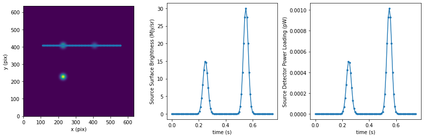
<p>This is only for the astronomical signal. The total detector
powerloading includes both the astronomical signal and the fixure and
atmosphere loading, which we can obtain from the TolTEC power loading
model. To do so, we first need the telescope trajectory in altaz frame:</p>
<p><span class="inputnumrole">In[16]:</span></p>
<div class="highlight-python notranslate"><div class="highlight"><pre><span></span><span class="c1"># t0 is the observation start time.</span>
<span class="n">tel_traj_altaz</span> <span class="o">=</span> <span class="n">tel_traj_icrs</span><span class="o">.</span><span class="n">transform_to</span><span class="p">(</span><span class="n">lmt_observer</span><span class="o">.</span><span class="n">altaz</span><span class="p">(</span><span class="n">time</span><span class="o">=</span><span class="n">t_grid</span> <span class="o">+</span> <span class="n">t0</span><span class="p">))</span>

<span class="c1"># we can get the power for the am_q50 atm loading</span>
<span class="c1"># here we speed up the evaluation with a pre-built interp grid of step 0.3 arcmin</span>
<span class="k">with</span> <span class="n">m_tpl_am_q50</span><span class="o">.</span><span class="n">aplm_eval_interp_context</span><span class="p">(</span>
    <span class="n">t0</span><span class="p">,</span> <span class="n">t_grid</span><span class="p">,</span>
    <span class="n">sky_bbox_altaz</span><span class="o">=</span><span class="kc">None</span><span class="p">,</span>
    <span class="n">alt_grid</span><span class="o">=</span><span class="n">np</span><span class="o">.</span><span class="n">arange</span><span class="p">(</span>
        <span class="n">tel_traj_altaz</span><span class="o">.</span><span class="n">alt</span><span class="o">.</span><span class="n">degree</span><span class="o">.</span><span class="n">min</span><span class="p">(),</span>
        <span class="n">tel_traj_altaz</span><span class="o">.</span><span class="n">alt</span><span class="o">.</span><span class="n">degree</span><span class="o">.</span><span class="n">max</span><span class="p">()</span> <span class="o">+</span> <span class="mf">0.3</span> <span class="o">/</span> <span class="mi">60</span><span class="p">,</span>
        <span class="mf">0.3</span> <span class="o">/</span> <span class="mi">60</span>
        <span class="p">)</span> <span class="o">&lt;&lt;</span> <span class="n">u</span><span class="o">.</span><span class="n">deg</span><span class="p">):</span>
    <span class="n">instru_pwr</span> <span class="o">=</span> <span class="n">m_tpl_am_q50</span><span class="o">.</span><span class="n">get_P</span><span class="p">(</span>
        <span class="n">det_array_name</span><span class="o">=</span><span class="n">np</span><span class="o">.</span><span class="n">array</span><span class="p">([</span><span class="n">array_name</span><span class="p">]),</span>  <span class="c1"># just 1 detector</span>
        <span class="n">det_az</span><span class="o">=</span><span class="kc">None</span><span class="p">,</span>
        <span class="n">det_alt</span><span class="o">=</span><span class="n">tel_traj_altaz</span><span class="o">.</span><span class="n">alt</span><span class="o">.</span><span class="n">reshape</span><span class="p">((</span><span class="mi">1</span><span class="p">,</span> <span class="nb">len</span><span class="p">(</span><span class="n">tel_traj_altaz</span><span class="p">)))</span>
        <span class="p">)[</span><span class="mi">0</span><span class="p">]</span>
<span class="n">det_pwr</span> <span class="o">=</span> <span class="n">instru_pwr</span> <span class="o">+</span> <span class="n">source_pwr</span>

<span class="n">fig</span><span class="p">,</span> <span class="n">axes</span> <span class="o">=</span> <span class="n">plt</span><span class="o">.</span><span class="n">subplots</span><span class="p">(</span><span class="mi">1</span><span class="p">,</span> <span class="mi">3</span><span class="p">,</span> <span class="n">figsize</span><span class="o">=</span><span class="p">(</span><span class="mi">12</span><span class="p">,</span> <span class="mi">4</span><span class="p">))</span>
<span class="n">fig</span><span class="o">.</span><span class="n">set_tight_layout</span><span class="p">(</span><span class="kc">True</span><span class="p">)</span>
<span class="n">ax</span> <span class="o">=</span> <span class="n">axes</span><span class="p">[</span><span class="mi">0</span><span class="p">]</span>
<span class="n">ax</span><span class="o">.</span><span class="n">set_aspect</span><span class="p">(</span><span class="mi">1</span> <span class="o">/</span> <span class="n">np</span><span class="o">.</span><span class="n">cos</span><span class="p">(</span><span class="n">tel_traj_altaz</span><span class="o">.</span><span class="n">alt</span><span class="o">.</span><span class="n">mean</span><span class="p">()))</span>
<span class="n">ax</span><span class="o">.</span><span class="n">plot</span><span class="p">(</span><span class="n">tel_traj_altaz</span><span class="o">.</span><span class="n">az</span><span class="o">.</span><span class="n">degree</span><span class="p">,</span> <span class="n">tel_traj_altaz</span><span class="o">.</span><span class="n">alt</span><span class="o">.</span><span class="n">degree</span><span class="p">,</span> <span class="n">marker</span><span class="o">=</span><span class="s1">&#39;.&#39;</span><span class="p">)</span>
<span class="n">ax</span><span class="o">.</span><span class="n">set_xlabel</span><span class="p">(</span><span class="s1">&#39;Az (deg)&#39;</span><span class="p">)</span>
<span class="n">ax</span><span class="o">.</span><span class="n">set_ylabel</span><span class="p">(</span><span class="s1">&#39;Alt (deg)&#39;</span><span class="p">)</span>
<span class="n">ax</span><span class="o">.</span><span class="n">invert_xaxis</span><span class="p">()</span>
<span class="n">ax</span> <span class="o">=</span> <span class="n">axes</span><span class="p">[</span><span class="mi">1</span><span class="p">]</span>
<span class="n">ax</span><span class="o">.</span><span class="n">plot</span><span class="p">(</span><span class="n">t_grid</span><span class="p">,</span> <span class="n">instru_pwr</span><span class="p">)</span>
<span class="n">ax</span><span class="o">.</span><span class="n">set_xlabel</span><span class="p">(</span><span class="s2">&quot;time (s)&quot;</span><span class="p">)</span>
<span class="n">ax</span><span class="o">.</span><span class="n">set_ylabel</span><span class="p">(</span><span class="s2">&quot;Detector Power Loading Fixture + Atm. (pW)&quot;</span><span class="p">)</span>
<span class="n">ax</span> <span class="o">=</span> <span class="n">axes</span><span class="p">[</span><span class="mi">2</span><span class="p">]</span>
<span class="n">ax</span><span class="o">.</span><span class="n">plot</span><span class="p">(</span><span class="n">t_grid</span><span class="p">,</span> <span class="n">det_pwr</span><span class="p">)</span>
<span class="n">ax</span><span class="o">.</span><span class="n">set_xlabel</span><span class="p">(</span><span class="s2">&quot;time (s)&quot;</span><span class="p">)</span>
<span class="n">ax</span><span class="o">.</span><span class="n">set_ylabel</span><span class="p">(</span><span class="s2">&quot;Total Detector Power Loading (pW)&quot;</span><span class="p">)</span>
</pre></div>
</div>
<p><span class="outputnumrole">Out[16]:</span></p>
<div class="highlight-default notranslate"><div class="highlight"><pre><span></span><span class="n">Text</span><span class="p">(</span><span class="mi">0</span><span class="p">,</span> <span class="mf">0.5</span><span class="p">,</span> <span class="s1">&#39;Total Detector Power Loading (pW)&#39;</span><span class="p">)</span>
</pre></div>
</div>
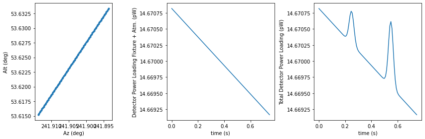
<p>Now we have the detector power loading timestream, we can setup the KIDs
resonance models.</p>
<p>We assume the KIDs TUNE is done when targeted at the mean altitude of
the scan, without the presence of the astronomical signal. We can get
the tune power by query the power loading model:</p>
<p><span class="inputnumrole">In[17]:</span></p>
<div class="highlight-python notranslate"><div class="highlight"><pre><span></span><span class="n">tune_alt</span> <span class="o">=</span> <span class="n">tel_traj_altaz</span><span class="o">.</span><span class="n">alt</span><span class="o">.</span><span class="n">mean</span><span class="p">()</span>
<span class="n">tune_pwr</span> <span class="o">=</span> <span class="n">m_tpl_am_q50</span><span class="o">.</span><span class="n">get_P</span><span class="p">(</span>
        <span class="n">det_array_name</span><span class="o">=</span><span class="n">np</span><span class="o">.</span><span class="n">array</span><span class="p">([</span><span class="n">array_name</span><span class="p">]),</span>  <span class="c1"># just 1 detector</span>
        <span class="n">det_az</span><span class="o">=</span><span class="kc">None</span><span class="p">,</span>
        <span class="n">det_alt</span><span class="o">=</span><span class="n">np</span><span class="o">.</span><span class="n">array</span><span class="p">([[</span><span class="n">tune_alt</span><span class="o">.</span><span class="n">degree</span><span class="p">]])</span> <span class="o">&lt;&lt;</span> <span class="n">u</span><span class="o">.</span><span class="n">deg</span>
        <span class="p">)[</span><span class="mi">0</span><span class="p">][</span><span class="mi">0</span><span class="p">]</span>
<span class="nb">print</span><span class="p">(</span><span class="sa">f</span><span class="s2">&quot;Tune KIDs at alt=</span><span class="si">{</span><span class="n">alt</span><span class="si">}</span><span class="s2"> P=</span><span class="si">{</span><span class="n">tune_pwr</span><span class="si">:</span><span class="s2">.4g</span><span class="si">}</span><span class="s2">&quot;</span><span class="p">)</span>
</pre></div>
</div>
<p><span class="outputnumrole">Out[17]:</span></p>
<div class="highlight-default notranslate"><div class="highlight"><pre><span></span><span class="n">Tune</span> <span class="n">KIDs</span> <span class="n">at</span> <span class="n">alt</span><span class="o">=</span><span class="mf">50.0</span> <span class="n">deg</span> <span class="n">P</span><span class="o">=</span><span class="mf">14.67</span> <span class="n">pW</span>
</pre></div>
</div>
<p>Since we only examine one detector, we’ll create manually a
<code class="docutils literal notranslate"><span class="pre">kidsproc.kidsmodel.simulator.KidsSimulator</span></code> object with the kids
model params from first entry in the apt. We can “probe” the detector
power loading to get the S21 response:</p>
<p><span class="inputnumrole">In[18]:</span></p>
<div class="highlight-python notranslate"><div class="highlight"><pre><span></span><span class="kn">from</span> <span class="nn">kidsproc.kidsmodel.simulator</span> <span class="kn">import</span> <span class="n">KidsSimulator</span>
<span class="n">kpm</span> <span class="o">=</span> <span class="n">apt</span><span class="p">[</span><span class="mi">0</span><span class="p">]</span>
<span class="n">ks0</span> <span class="o">=</span> <span class="n">KidsSimulator</span><span class="p">(</span><span class="n">fr</span><span class="o">=</span><span class="n">kpm</span><span class="p">[</span><span class="s1">&#39;fr&#39;</span><span class="p">],</span> <span class="n">Qr</span><span class="o">=</span><span class="n">kpm</span><span class="p">[</span><span class="s1">&#39;Qr&#39;</span><span class="p">],</span> <span class="n">responsivity</span><span class="o">=</span><span class="n">kpm</span><span class="p">[</span><span class="s1">&#39;responsivity&#39;</span><span class="p">],</span> <span class="n">background</span><span class="o">=</span><span class="n">tune_pwr</span><span class="p">)</span>
<span class="nb">print</span><span class="p">(</span><span class="sa">f</span><span class="s2">&quot;KID fr=</span><span class="si">{</span><span class="n">ks0</span><span class="o">.</span><span class="n">fr</span><span class="si">}</span><span class="s2"> Qr=</span><span class="si">{</span><span class="n">ks0</span><span class="o">.</span><span class="n">_Qr</span><span class="si">}</span><span class="s2"> resp.=</span><span class="si">{</span><span class="n">ks0</span><span class="o">.</span><span class="n">_responsivity</span><span class="si">}</span><span class="s2">&quot;</span><span class="p">)</span>

<span class="c1"># we can plot the resonance circle by doing a sweep</span>
<span class="n">swp_x</span><span class="p">,</span> <span class="n">swp_S21</span> <span class="o">=</span> <span class="n">ks0</span><span class="o">.</span><span class="n">sweep_x</span><span class="p">(</span><span class="n">n_steps</span><span class="o">=</span><span class="mi">176</span><span class="p">,</span> <span class="n">n_fwhms</span><span class="o">=</span><span class="mi">10</span><span class="p">)</span>

<span class="c1"># we can get S21 timestream by probing the det pwr stream</span>
<span class="c1"># the returned r and x are the &quot;solved&quot; values of the</span>
<span class="c1"># input signal, and S21 are the raw timestream.</span>
<span class="n">ts_r</span><span class="p">,</span> <span class="n">ts_x</span><span class="p">,</span> <span class="n">ts_S21</span> <span class="o">=</span> <span class="n">ks0</span><span class="o">.</span><span class="n">probe_p</span><span class="p">(</span><span class="n">det_pwr</span><span class="p">)</span>

<span class="n">fig</span><span class="p">,</span> <span class="n">axes</span> <span class="o">=</span> <span class="n">plt</span><span class="o">.</span><span class="n">subplots</span><span class="p">(</span><span class="mi">1</span><span class="p">,</span> <span class="mi">3</span><span class="p">,</span> <span class="n">figsize</span><span class="o">=</span><span class="p">(</span><span class="mi">12</span><span class="p">,</span> <span class="mi">4</span><span class="p">))</span>
<span class="n">fig</span><span class="o">.</span><span class="n">set_tight_layout</span><span class="p">(</span><span class="kc">True</span><span class="p">)</span>
<span class="n">ax</span> <span class="o">=</span> <span class="n">axes</span><span class="p">[</span><span class="mi">0</span><span class="p">]</span>
<span class="n">ax</span><span class="o">.</span><span class="n">plot</span><span class="p">(</span><span class="n">swp_S21</span><span class="o">.</span><span class="n">real</span><span class="p">,</span> <span class="n">swp_S21</span><span class="o">.</span><span class="n">imag</span><span class="p">)</span>
<span class="n">ax</span><span class="o">.</span><span class="n">plot</span><span class="p">(</span><span class="n">ts_S21</span><span class="o">.</span><span class="n">real</span><span class="p">,</span> <span class="n">ts_S21</span><span class="o">.</span><span class="n">imag</span><span class="p">,</span> <span class="n">linestyle</span><span class="o">=</span><span class="s1">&#39;none&#39;</span><span class="p">,</span> <span class="n">marker</span><span class="o">=</span><span class="s1">&#39;.&#39;</span><span class="p">)</span>
<span class="n">ax</span><span class="o">.</span><span class="n">set_aspect</span><span class="p">(</span><span class="s1">&#39;equal&#39;</span><span class="p">)</span>
<span class="n">ax</span><span class="o">.</span><span class="n">set_xlabel</span><span class="p">(</span><span class="s2">&quot;S21 in-phase (I)&quot;</span><span class="p">)</span>
<span class="n">ax</span><span class="o">.</span><span class="n">set_ylabel</span><span class="p">(</span><span class="s2">&quot;S21 quatrature (Q)&quot;</span><span class="p">)</span>
<span class="n">ax</span> <span class="o">=</span> <span class="n">axes</span><span class="p">[</span><span class="mi">1</span><span class="p">]</span>
<span class="c1"># x = f / fr - 1</span>
<span class="c1"># f = (x + 1 ) * fr</span>
<span class="n">ax</span><span class="o">.</span><span class="n">plot</span><span class="p">(((</span><span class="n">swp_x</span> <span class="o">+</span> <span class="mi">1</span><span class="p">)</span> <span class="o">*</span> <span class="n">ks0</span><span class="o">.</span><span class="n">fr</span><span class="p">)</span><span class="o">.</span><span class="n">to_value</span><span class="p">(</span><span class="n">u</span><span class="o">.</span><span class="n">GHz</span><span class="p">),</span> <span class="n">np</span><span class="o">.</span><span class="n">abs</span><span class="p">(</span><span class="n">swp_S21</span><span class="p">))</span>
<span class="n">ax</span><span class="o">.</span><span class="n">plot</span><span class="p">((</span><span class="n">ts_x</span> <span class="o">+</span> <span class="mi">1</span><span class="p">)</span> <span class="o">*</span> <span class="n">ks0</span><span class="o">.</span><span class="n">fr</span><span class="p">,</span> <span class="n">np</span><span class="o">.</span><span class="n">abs</span><span class="p">(</span><span class="n">ts_S21</span><span class="p">),</span> <span class="n">linestyle</span><span class="o">=</span><span class="s1">&#39;none&#39;</span><span class="p">,</span> <span class="n">marker</span><span class="o">=</span><span class="s1">&#39;.&#39;</span><span class="p">)</span>
<span class="n">ax</span><span class="o">.</span><span class="n">axvline</span><span class="p">(</span><span class="n">ks0</span><span class="o">.</span><span class="n">fr</span><span class="o">.</span><span class="n">to_value</span><span class="p">(</span><span class="n">u</span><span class="o">.</span><span class="n">GHz</span><span class="p">),</span> <span class="n">linestyle</span><span class="o">=</span><span class="s1">&#39;--&#39;</span><span class="p">)</span>
<span class="n">ax</span><span class="o">.</span><span class="n">set_xlabel</span><span class="p">(</span><span class="s2">&quot;Sweep Frequency (GHz)&quot;</span><span class="p">)</span>
<span class="n">ax</span><span class="o">.</span><span class="n">set_ylabel</span><span class="p">(</span><span class="s2">&quot;|S21|&quot;</span><span class="p">)</span>
<span class="c1"># plot the timestreams for x values</span>
<span class="n">ax</span> <span class="o">=</span> <span class="n">axes</span><span class="p">[</span><span class="mi">2</span><span class="p">]</span>
<span class="n">ax</span><span class="o">.</span><span class="n">plot</span><span class="p">(</span><span class="n">t_grid</span><span class="p">,</span> <span class="n">ts_x</span><span class="p">)</span>
<span class="n">ax</span><span class="o">.</span><span class="n">set_xlabel</span><span class="p">(</span><span class="s2">&quot;time (s)&quot;</span><span class="p">)</span>
<span class="n">ax</span><span class="o">.</span><span class="n">set_ylabel</span><span class="p">(</span><span class="s2">&quot;Detuning x&quot;</span><span class="p">)</span>
</pre></div>
</div>
<p><span class="outputnumrole">Out[18]:</span></p>
<div class="highlight-default notranslate"><div class="highlight"><pre><span></span><span class="n">KID</span> <span class="n">fr</span><span class="o">=</span><span class="mf">0.51677</span> <span class="n">GHz</span> <span class="n">Qr</span><span class="o">=</span><span class="mf">10000.0</span> <span class="n">resp</span><span class="o">.=</span><span class="mf">5.794e-05</span> <span class="mi">1</span> <span class="o">/</span> <span class="n">pW</span>
</pre></div>
</div>
<div class="highlight-default notranslate"><div class="highlight"><pre><span></span><span class="n">Text</span><span class="p">(</span><span class="mi">0</span><span class="p">,</span> <span class="mf">0.5</span><span class="p">,</span> <span class="s1">&#39;Detuning x&#39;</span><span class="p">)</span>
</pre></div>
</div>
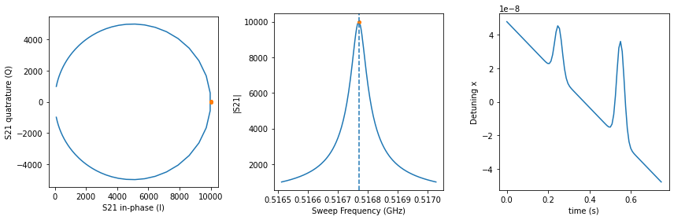
<p>The final ingredient to the raw data stream that get written to the data
files are the readout model, which is set to None in the above. The
readout model simulates the gain and time delay of the readout circuit,
which alters the “canonical” S21 response that we just plotted. Let’s
explore the real readout S21 values with the default readout model in
the array prop table:</p>
<p><span class="inputnumrole">In[19]:</span></p>
<div class="highlight-python notranslate"><div class="highlight"><pre><span></span><span class="kn">from</span> <span class="nn">kidsproc.kidsmodel</span> <span class="kn">import</span> <span class="n">ReadoutGainWithLinTrend</span>
<span class="c1"># create the readout model for our detector</span>
<span class="n">krm0</span> <span class="o">=</span> <span class="n">ReadoutGainWithLinTrend</span><span class="p">(</span>
    <span class="o">**</span><span class="p">{</span><span class="n">k</span><span class="p">:</span> <span class="n">kpm</span><span class="p">[</span><span class="n">k</span><span class="p">]</span> <span class="k">for</span> <span class="n">k</span> <span class="ow">in</span> <span class="p">[</span><span class="s1">&#39;g0&#39;</span><span class="p">,</span> <span class="s1">&#39;g1&#39;</span><span class="p">,</span> <span class="s1">&#39;g&#39;</span><span class="p">,</span> <span class="s1">&#39;phi_g&#39;</span><span class="p">,</span> <span class="s1">&#39;f0&#39;</span><span class="p">,</span> <span class="s1">&#39;k0&#39;</span><span class="p">,</span> <span class="s1">&#39;k1&#39;</span><span class="p">,</span> <span class="s1">&#39;m0&#39;</span><span class="p">,</span> <span class="s1">&#39;m1&#39;</span><span class="p">]}</span>
    <span class="p">)</span>
<span class="c1"># the readout model created by the simulator</span>
<span class="c1"># is rather trivial. To better demonstrate the effects of the parameters</span>
<span class="c1"># we add the imaginary part to the complex gain</span>
<span class="c1"># which gives rotation of the circle in the I-Q plane and some shift.</span>
<span class="n">krm0</span><span class="o">.</span><span class="n">g1</span> <span class="o">=</span> <span class="mi">60</span>
<span class="n">krm0</span><span class="o">.</span><span class="n">m1</span> <span class="o">=</span> <span class="mf">1e6</span>
<span class="nb">print</span><span class="p">(</span><span class="n">krm0</span><span class="p">)</span>
<span class="c1"># apply the readout model</span>
<span class="n">swp_S21_readout</span> <span class="o">=</span> <span class="n">krm0</span><span class="p">(</span><span class="n">swp_S21</span><span class="p">,</span> <span class="p">(</span><span class="n">swp_x</span> <span class="o">+</span> <span class="mi">1</span><span class="p">)</span> <span class="o">*</span> <span class="n">ks0</span><span class="o">.</span><span class="n">fr</span><span class="p">)</span>
<span class="n">ts_S21_readout</span> <span class="o">=</span> <span class="n">krm0</span><span class="p">(</span><span class="n">ts_S21</span><span class="p">,</span> <span class="p">(</span><span class="n">ts_x</span> <span class="o">+</span> <span class="mi">1</span><span class="p">)</span> <span class="o">*</span> <span class="n">ks0</span><span class="o">.</span><span class="n">fr</span><span class="p">)</span>

<span class="c1"># plot the S21 circle</span>

<span class="n">fig</span><span class="p">,</span> <span class="n">axes</span> <span class="o">=</span> <span class="n">plt</span><span class="o">.</span><span class="n">subplots</span><span class="p">(</span><span class="mi">1</span><span class="p">,</span> <span class="mi">3</span><span class="p">,</span> <span class="n">figsize</span><span class="o">=</span><span class="p">(</span><span class="mi">12</span><span class="p">,</span> <span class="mi">4</span><span class="p">))</span>
<span class="n">fig</span><span class="o">.</span><span class="n">set_tight_layout</span><span class="p">(</span><span class="kc">True</span><span class="p">)</span>
<span class="n">ax</span> <span class="o">=</span> <span class="n">axes</span><span class="p">[</span><span class="mi">0</span><span class="p">]</span>
<span class="n">ax</span><span class="o">.</span><span class="n">plot</span><span class="p">(</span><span class="n">swp_S21_readout</span><span class="o">.</span><span class="n">real</span><span class="p">,</span> <span class="n">swp_S21_readout</span><span class="o">.</span><span class="n">imag</span><span class="p">)</span>
<span class="n">ax</span><span class="o">.</span><span class="n">plot</span><span class="p">(</span><span class="n">ts_S21_readout</span><span class="o">.</span><span class="n">real</span><span class="p">,</span> <span class="n">ts_S21_readout</span><span class="o">.</span><span class="n">imag</span><span class="p">,</span> <span class="n">linestyle</span><span class="o">=</span><span class="s1">&#39;none&#39;</span><span class="p">,</span> <span class="n">marker</span><span class="o">=</span><span class="s1">&#39;.&#39;</span><span class="p">)</span>
<span class="n">ax</span><span class="o">.</span><span class="n">set_aspect</span><span class="p">(</span><span class="s1">&#39;equal&#39;</span><span class="p">)</span>
<span class="n">ax</span><span class="o">.</span><span class="n">set_xlabel</span><span class="p">(</span><span class="s2">&quot;Readout S21 in-phase (I)&quot;</span><span class="p">)</span>
<span class="n">ax</span><span class="o">.</span><span class="n">set_ylabel</span><span class="p">(</span><span class="s2">&quot;Readout S21 quatrature (Q)&quot;</span><span class="p">)</span>
<span class="c1"># plot the timestreams for S21</span>
<span class="n">ax</span> <span class="o">=</span> <span class="n">axes</span><span class="p">[</span><span class="mi">1</span><span class="p">]</span>
<span class="n">ax</span><span class="o">.</span><span class="n">plot</span><span class="p">(</span><span class="n">t_grid</span><span class="p">,</span> <span class="n">ts_S21_readout</span><span class="o">.</span><span class="n">real</span><span class="p">)</span>
<span class="n">ax</span><span class="o">.</span><span class="n">set_xlabel</span><span class="p">(</span><span class="s2">&quot;time (s)&quot;</span><span class="p">)</span>
<span class="n">ax</span><span class="o">.</span><span class="n">set_ylabel</span><span class="p">(</span><span class="s2">&quot;Readout I&quot;</span><span class="p">)</span>
<span class="n">ax</span> <span class="o">=</span> <span class="n">axes</span><span class="p">[</span><span class="mi">2</span><span class="p">]</span>
<span class="n">ax</span><span class="o">.</span><span class="n">plot</span><span class="p">(</span><span class="n">t_grid</span><span class="p">,</span> <span class="n">ts_S21_readout</span><span class="o">.</span><span class="n">imag</span><span class="p">)</span>
<span class="n">ax</span><span class="o">.</span><span class="n">set_xlabel</span><span class="p">(</span><span class="s2">&quot;time (s)&quot;</span><span class="p">)</span>
<span class="n">ax</span><span class="o">.</span><span class="n">set_ylabel</span><span class="p">(</span><span class="s2">&quot;Readout Q&quot;</span><span class="p">)</span>
</pre></div>
</div>
<p><span class="outputnumrole">Out[19]:</span></p>
<div class="highlight-default notranslate"><div class="highlight"><pre><span></span><span class="n">Model</span><span class="p">:</span> <span class="n">ReadoutGainWithLinTrend</span>
<span class="n">Inputs</span><span class="p">:</span> <span class="p">(</span><span class="s1">&#39;S&#39;</span><span class="p">,</span> <span class="s1">&#39;f&#39;</span><span class="p">)</span>
<span class="n">Outputs</span><span class="p">:</span> <span class="p">(</span><span class="s1">&#39;S&#39;</span><span class="p">,)</span>
<span class="n">Model</span> <span class="nb">set</span> <span class="n">size</span><span class="p">:</span> <span class="mi">1</span>
<span class="n">Parameters</span><span class="p">:</span>
      <span class="n">g0</span>   <span class="n">g1</span>    <span class="n">g</span>   <span class="n">phi_g</span>    <span class="n">f0</span>     <span class="n">k0</span>     <span class="n">k1</span>    <span class="n">m0</span>     <span class="n">m1</span>
                             <span class="n">GHz</span>   <span class="mi">1</span> <span class="o">/</span> <span class="n">Hz</span> <span class="mi">1</span> <span class="o">/</span> <span class="n">Hz</span>
    <span class="o">-----</span> <span class="o">----</span> <span class="o">-----</span> <span class="o">-----</span> <span class="o">-------</span> <span class="o">------</span> <span class="o">------</span> <span class="o">---</span> <span class="o">---------</span>
    <span class="mf">200.0</span> <span class="mf">60.0</span> <span class="mf">200.0</span>   <span class="mf">0.0</span> <span class="mf">0.51677</span>    <span class="mf">0.0</span>    <span class="mf">0.0</span> <span class="mf">0.0</span> <span class="mf">1000000.0</span>
</pre></div>
</div>
<div class="highlight-default notranslate"><div class="highlight"><pre><span></span><span class="n">Text</span><span class="p">(</span><span class="mi">0</span><span class="p">,</span> <span class="mf">0.5</span><span class="p">,</span> <span class="s1">&#39;Readout Q&#39;</span><span class="p">)</span>
</pre></div>
</div>
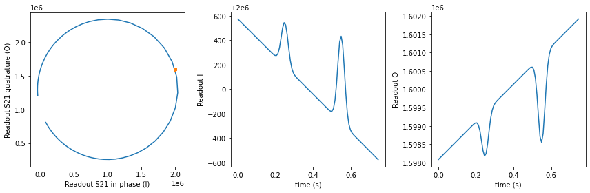
<p>Now let’s try recover the on-sky astronomical signal from the
timestream.</p>
<p>To do this, nominally, we’ll need to solve the raw timestream with the
KIDs model to get the timestream of the detuning parameter x, then we
could use the responsivity of the detector to convert the x values to
power loading unit, then back to surface brightness after combined with
the TolTEC power loading model. For real observations, however, we take
the more direct approach by doing the “beammap” observation. The beammap
observation targets at a source with known flux, the conversion factor
to go from detuning parameter x to surface brightness is compuated by
comparing the measured flux of the beammap map and the actual source
flux.</p>
<p>In the below, we use a trimmed down version of the latter, since we only
have a short segment of timestream, by deriving the flux scale factor
from comparing the timestream directly.</p>
<p><span class="inputnumrole">In[20]:</span></p>
<div class="highlight-python notranslate"><div class="highlight"><pre><span></span><span class="n">sky_sb_unity</span> <span class="o">=</span> <span class="mi">1</span> <span class="o">&lt;&lt;</span> <span class="n">u</span><span class="o">.</span><span class="n">MJy</span> <span class="o">/</span> <span class="n">u</span><span class="o">.</span><span class="n">sr</span>
<span class="c1"># now we use the kids model to infer the x value</span>
<span class="n">sky_pwr_unity</span> <span class="o">=</span> <span class="n">m_tpl</span><span class="o">.</span><span class="n">sky_sb_to_pwr</span><span class="p">(</span><span class="n">det_array_name</span><span class="o">=</span><span class="n">array_name</span><span class="p">,</span> <span class="n">det_s</span><span class="o">=</span><span class="n">sky_sb_unity</span><span class="p">)</span>
<span class="nb">print</span><span class="p">(</span><span class="sa">f</span><span class="s2">&quot;Power loading for 1 MJy/sr on sky: </span><span class="si">{</span><span class="n">sky_pwr_unity</span><span class="si">}</span><span class="s2">&quot;</span><span class="p">)</span>
<span class="c1"># the actual power loading on the detector is this plus the instr_pwr.</span>
<span class="c1"># here we set the instru_pwr to be the tune_pwr</span>
<span class="c1"># for simplicity</span>
<span class="n">det_pwr_unity</span> <span class="o">=</span> <span class="n">sky_pwr_unity</span> <span class="o">+</span> <span class="n">tune_pwr</span>
<span class="nb">print</span><span class="p">(</span><span class="sa">f</span><span class="s2">&quot;Detector power loading for 1 MJy/sr on sky: </span><span class="si">{</span><span class="n">det_pwr_unity</span><span class="si">}</span><span class="s2">&quot;</span><span class="p">)</span>

<span class="c1"># we can probe the kids model to get the x values corresponding to this power</span>
<span class="n">_</span><span class="p">,</span> <span class="n">x_unity</span><span class="p">,</span> <span class="n">_</span> <span class="o">=</span> <span class="n">ks0</span><span class="o">.</span><span class="n">probe_p</span><span class="p">(</span><span class="n">det_pwr_unity</span><span class="p">)</span>
<span class="nb">print</span><span class="p">(</span><span class="sa">f</span><span class="s2">&quot;x value for 1 MJy/sr on sky: </span><span class="si">{</span><span class="n">x_unity</span><span class="si">}</span><span class="s2">&quot;</span><span class="p">)</span>
<span class="c1"># we can verify that this x value is consistent with the responsivity</span>
<span class="c1"># since we set the background to tune_pwr in the kids</span>
<span class="nb">print</span><span class="p">(</span><span class="sa">f</span><span class="s2">&quot;x value for 1 MJy/sr on sky using responsivity: </span><span class="si">{</span><span class="p">(</span><span class="n">det_pwr_unity</span> <span class="o">-</span> <span class="n">tune_pwr</span><span class="p">)</span> <span class="o">*</span> <span class="n">ks0</span><span class="o">.</span><span class="n">_responsivity</span><span class="si">}</span><span class="s2">&quot;</span><span class="p">)</span>
<span class="c1"># the theta angle defined as atan2(x/r) is a measure of the noise degratation</span>
<span class="n">x45</span> <span class="o">=</span> <span class="n">ks0</span><span class="o">.</span><span class="n">fwhm_x</span> <span class="o">/</span> <span class="mi">2</span>
<span class="n">delta_pwr_x45</span> <span class="o">=</span> <span class="n">x45</span> <span class="o">/</span> <span class="n">ks0</span><span class="o">.</span><span class="n">_responsivity</span>
<span class="n">delta_sb_x45</span> <span class="o">=</span> <span class="p">(</span><span class="n">x45</span> <span class="o">/</span> <span class="n">x_unity</span><span class="p">)</span><span class="o">.</span><span class="n">value</span> <span class="o">&lt;&lt;</span> <span class="n">u</span><span class="o">.</span><span class="n">MJy</span><span class="o">/</span><span class="n">u</span><span class="o">.</span><span class="n">sr</span>
<span class="nb">print</span><span class="p">(</span><span class="sa">f</span><span class="s2">&quot;responsivity: </span><span class="si">{</span><span class="n">ks0</span><span class="o">.</span><span class="n">_responsivity</span><span class="si">}</span><span class="s2">&quot;</span><span class="p">)</span>
<span class="nb">print</span><span class="p">(</span><span class="sa">f</span><span class="s2">&quot;delta pwr for x=r: </span><span class="si">{</span><span class="n">delta_pwr_x45</span><span class="si">}</span><span class="s2">&quot;</span><span class="p">)</span>
<span class="nb">print</span><span class="p">(</span><span class="sa">f</span><span class="s2">&quot;delta sb for x=r: </span><span class="si">{</span><span class="n">delta_sb_x45</span><span class="si">}</span><span class="s2">&quot;</span><span class="p">)</span>
<span class="n">f_band</span> <span class="o">=</span> <span class="n">toltec_info</span><span class="p">[</span><span class="n">array_name</span><span class="p">][</span><span class="s1">&#39;wl_center&#39;</span><span class="p">]</span><span class="o">.</span><span class="n">to</span><span class="p">(</span><span class="n">u</span><span class="o">.</span><span class="n">GHz</span><span class="p">,</span> <span class="n">equivalencies</span><span class="o">=</span><span class="n">u</span><span class="o">.</span><span class="n">spectral</span><span class="p">())</span>
<span class="nb">print</span><span class="p">(</span><span class="sa">f</span><span class="s2">&quot;delta T_b for x=r: </span><span class="si">{</span><span class="n">delta_sb_x45</span><span class="o">.</span><span class="n">to</span><span class="p">(</span><span class="n">u</span><span class="o">.</span><span class="n">K</span><span class="p">,</span> <span class="n">equivalencies</span><span class="o">=</span><span class="n">u</span><span class="o">.</span><span class="n">brightness_temperature</span><span class="p">(</span><span class="n">frequency</span><span class="o">=</span><span class="n">f_band</span><span class="p">))</span><span class="si">}</span><span class="s2">&quot;</span><span class="p">)</span>

<span class="nb">print</span><span class="p">(</span><span class="sa">f</span><span class="s2">&quot;flxscale factor: </span><span class="si">{</span><span class="mi">1</span> <span class="o">/</span> <span class="n">x_unity</span><span class="si">:</span><span class="s2">.5g</span><span class="si">}</span><span class="s2">&quot;</span><span class="p">)</span>
<span class="c1"># now we could use the x_unity as the scaling factor to</span>
<span class="c1"># convert the timestream back to surface brightness unit</span>
<span class="n">ts_sb</span> <span class="o">=</span> <span class="p">(</span><span class="n">ts_x</span> <span class="o">/</span> <span class="n">x_unity</span><span class="p">)</span><span class="o">.</span><span class="n">value</span> <span class="o">&lt;&lt;</span> <span class="n">u</span><span class="o">.</span><span class="n">MJy</span> <span class="o">/</span> <span class="n">u</span><span class="o">.</span><span class="n">sr</span>

<span class="n">fig</span><span class="p">,</span> <span class="n">ax</span> <span class="o">=</span> <span class="n">plt</span><span class="o">.</span><span class="n">subplots</span><span class="p">(</span><span class="mi">1</span><span class="p">,</span> <span class="mi">1</span><span class="p">,</span> <span class="n">figsize</span><span class="o">=</span><span class="p">(</span><span class="mi">12</span><span class="p">,</span> <span class="mi">4</span><span class="p">))</span>
<span class="n">fig</span><span class="o">.</span><span class="n">set_tight_layout</span><span class="p">(</span><span class="kc">True</span><span class="p">)</span>
<span class="n">ax</span><span class="o">.</span><span class="n">plot</span><span class="p">(</span><span class="n">t_grid</span><span class="p">,</span> <span class="n">source_sb</span><span class="o">.</span><span class="n">to_value</span><span class="p">(</span><span class="n">u</span><span class="o">.</span><span class="n">MJy</span><span class="o">/</span><span class="n">u</span><span class="o">.</span><span class="n">sr</span><span class="p">),</span> <span class="n">marker</span><span class="o">=</span><span class="s1">&#39;.&#39;</span><span class="p">,</span> <span class="n">label</span><span class="o">=</span><span class="s1">&#39;input&#39;</span><span class="p">)</span>
<span class="n">ax</span><span class="o">.</span><span class="n">plot</span><span class="p">(</span><span class="n">t_grid</span><span class="p">,</span> <span class="n">ts_sb</span><span class="o">.</span><span class="n">to_value</span><span class="p">(</span><span class="n">u</span><span class="o">.</span><span class="n">MJy</span><span class="o">/</span><span class="n">u</span><span class="o">.</span><span class="n">sr</span><span class="p">),</span> <span class="n">marker</span><span class="o">=</span><span class="s1">&#39;.&#39;</span><span class="p">,</span> <span class="n">label</span><span class="o">=</span><span class="s1">&#39;solved &amp; calibrated&#39;</span><span class="p">)</span>
<span class="n">ax</span><span class="o">.</span><span class="n">set_xlabel</span><span class="p">(</span><span class="s2">&quot;time (s)&quot;</span><span class="p">)</span>
<span class="n">ax</span><span class="o">.</span><span class="n">set_ylabel</span><span class="p">(</span><span class="s2">&quot;Source Surface Brightness (MJy/sr)&quot;</span><span class="p">)</span>
<span class="n">ax</span><span class="o">.</span><span class="n">legend</span><span class="p">()</span>
</pre></div>
</div>
<p><span class="outputnumrole">Out[20]:</span></p>
<div class="highlight-default notranslate"><div class="highlight"><pre><span></span><span class="n">Power</span> <span class="n">loading</span> <span class="k">for</span> <span class="mi">1</span> <span class="n">MJy</span><span class="o">/</span><span class="n">sr</span> <span class="n">on</span> <span class="n">sky</span><span class="p">:</span> <span class="mf">3.3853523731768975e-05</span> <span class="n">pW</span>
<span class="n">Detector</span> <span class="n">power</span> <span class="n">loading</span> <span class="k">for</span> <span class="mi">1</span> <span class="n">MJy</span><span class="o">/</span><span class="n">sr</span> <span class="n">on</span> <span class="n">sky</span><span class="p">:</span> <span class="mf">14.670026204423172</span> <span class="n">pW</span>
<span class="n">x</span> <span class="n">value</span> <span class="k">for</span> <span class="mi">1</span> <span class="n">MJy</span><span class="o">/</span><span class="n">sr</span> <span class="n">on</span> <span class="n">sky</span><span class="p">:</span> <span class="mf">1.9614731650241878e-09</span>
<span class="n">x</span> <span class="n">value</span> <span class="k">for</span> <span class="mi">1</span> <span class="n">MJy</span><span class="o">/</span><span class="n">sr</span> <span class="n">on</span> <span class="n">sky</span> <span class="n">using</span> <span class="n">responsivity</span><span class="p">:</span> <span class="mf">1.9614731650241878e-09</span>
<span class="n">responsivity</span><span class="p">:</span> <span class="mf">5.794e-05</span> <span class="mi">1</span> <span class="o">/</span> <span class="n">pW</span>
<span class="n">delta</span> <span class="n">pwr</span> <span class="k">for</span> <span class="n">x</span><span class="o">=</span><span class="n">r</span><span class="p">:</span> <span class="mf">0.8629616845012082</span> <span class="n">pW</span>
<span class="n">delta</span> <span class="n">sb</span> <span class="k">for</span> <span class="n">x</span><span class="o">=</span><span class="n">r</span><span class="p">:</span> <span class="mf">25491.04463500699</span> <span class="n">MJy</span> <span class="o">/</span> <span class="n">sr</span>
<span class="n">delta</span> <span class="n">T_b</span> <span class="k">for</span> <span class="n">x</span><span class="o">=</span><span class="n">r</span><span class="p">:</span> <span class="mf">11.170168525221998</span> <span class="n">K</span>
<span class="n">flxscale</span> <span class="n">factor</span><span class="p">:</span> <span class="mf">5.0982e+08</span>
</pre></div>
</div>
<div class="highlight-default notranslate"><div class="highlight"><pre><span></span><span class="o">&lt;</span><span class="n">matplotlib</span><span class="o">.</span><span class="n">legend</span><span class="o">.</span><span class="n">Legend</span> <span class="n">at</span> <span class="mh">0x13eb13ca0</span><span class="o">&gt;</span>
</pre></div>
</div>
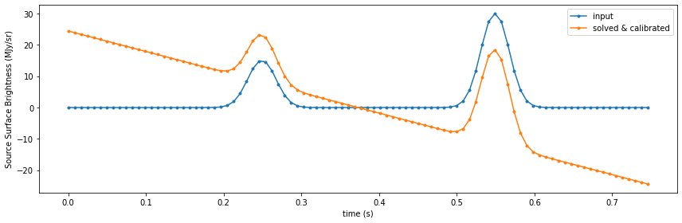
<p>From the plot above we could see the recovered timestream is not the
same as the input one. This is due to the power loading gradient in the
atmosphere model. For real observations, the atmosphere power loading
signature is even more complex due to the fluctuations and these
signatures have to be removed in the data reduction in order to reveal
the actual astronominal signal, which is implemented in the data
reduction engine Citlali.</p>
<p>The static atomsphere model built-in to tolteca could only provide the
gradient. To simulate the fluctuations of the atmosphere, set the
<code class="docutils literal notranslate"><span class="pre">atm_model_name</span></code> to <code class="docutils literal notranslate"><span class="pre">toast</span></code>, which makes use of the TOAST package.</p>
</div>
</div>
<div class="section" id="examine-the-kids-data-in-raw-timestream-netcdf-file">
<h3>Examine the KIDs data in raw timestream netCDF file<a class="headerlink" href="#examine-the-kids-data-in-raw-timestream-netcdf-file" title="Permalink to this headline">¶</a></h3>
<p>The output data files produced by the simulator are netCDF format and
have the same strcture as those from the real observations. In this
section we give an example of how to examing the content of these files.</p>
<p>The <code class="docutils literal notranslate"><span class="pre">tolteca.datamodels</span></code> package defines the classes that handles the
reading of data files. For TolTEC, this is done by the
<code class="docutils literal notranslate"><span class="pre">tolteca.datamodels.toltec.BasicObsData</span></code> class. Each TolTEC
observation will produce 13 KIDs data files, one for each of the
detector network.</p>
<p><span class="inputnumrole">In[21]:</span></p>
<div class="highlight-python notranslate"><div class="highlight"><pre><span></span><span class="kn">from</span> <span class="nn">tolteca.datamodels.toltec</span> <span class="kn">import</span> <span class="n">BasicObsData</span>
<span class="kn">from</span> <span class="nn">tolteca.datamodels.io.toltec.table</span> <span class="kn">import</span> <span class="n">KidsModelParams</span>
<span class="kn">from</span> <span class="nn">astropy.table</span> <span class="kn">import</span> <span class="n">QTable</span>

<span class="n">toltec0_file</span> <span class="o">=</span> <span class="nb">next</span><span class="p">(</span><span class="nb">iter</span><span class="p">(</span><span class="n">output_dir</span><span class="o">.</span><span class="n">glob</span><span class="p">(</span><span class="s2">&quot;toltec0*.nc&quot;</span><span class="p">)))</span>
<span class="nb">print</span><span class="p">(</span><span class="sa">f</span><span class="s2">&quot;TolTEC data file to open: </span><span class="si">{</span><span class="n">toltec0_file</span><span class="si">}</span><span class="s2">&quot;</span><span class="p">)</span>

<span class="n">bod</span> <span class="o">=</span> <span class="n">BasicObsData</span><span class="p">(</span><span class="n">toltec0_file</span><span class="p">)</span>

<span class="n">fo</span> <span class="o">=</span> <span class="n">bod</span><span class="o">.</span><span class="n">open</span><span class="p">()</span>
<span class="c1"># fo is the NcFileIO object that handles the IO to the nc file</span>
<span class="nb">print</span><span class="p">(</span><span class="n">fo</span><span class="p">)</span>
<span class="n">mpt</span> <span class="o">=</span> <span class="n">fo</span><span class="o">.</span><span class="n">get_model_params_table</span><span class="p">()</span>
<span class="c1"># print(mpt)</span>

<span class="c1"># now we can create the KidsModelParams object</span>
<span class="n">kmp</span> <span class="o">=</span> <span class="n">KidsModelParams</span><span class="p">(</span><span class="n">table</span><span class="o">=</span><span class="n">mpt</span><span class="p">)</span>
<span class="c1"># print(kmp)</span>

<span class="c1"># and further we can get the kidsproc.kidsmodel.KidsModel</span>
<span class="c1"># note that this model is a astropy.models.ModelSet of size matches the</span>
<span class="c1"># number of detectors in the network</span>
<span class="nb">print</span><span class="p">(</span><span class="n">kmp</span><span class="o">.</span><span class="n">model</span><span class="p">)</span>

<span class="c1"># To get the model for a single detector, use get_model</span>
<span class="n">km0</span> <span class="o">=</span> <span class="n">kmp</span><span class="o">.</span><span class="n">get_model</span><span class="p">(</span><span class="n">i</span><span class="o">=</span><span class="mi">0</span><span class="p">)</span>
<span class="nb">print</span><span class="p">(</span><span class="n">km0</span><span class="p">)</span>

<span class="c1"># we can evalaute this model with a grid of probing frequency</span>
<span class="c1"># centered at the resonance frequency</span>
<span class="n">fwhm</span> <span class="o">=</span> <span class="n">km0</span><span class="o">.</span><span class="n">fr</span> <span class="o">/</span> <span class="n">km0</span><span class="o">.</span><span class="n">Qr</span>
<span class="n">f_grid</span> <span class="o">=</span> <span class="n">np</span><span class="o">.</span><span class="n">linspace</span><span class="p">(</span>
    <span class="n">km0</span><span class="o">.</span><span class="n">fr</span><span class="o">.</span><span class="n">quantity</span><span class="o">.</span><span class="n">to_value</span><span class="p">(</span><span class="n">u</span><span class="o">.</span><span class="n">Hz</span><span class="p">)</span> <span class="o">-</span> <span class="mi">10</span> <span class="o">*</span> <span class="n">fwhm</span><span class="o">.</span><span class="n">to_value</span><span class="p">(</span><span class="n">u</span><span class="o">.</span><span class="n">Hz</span><span class="p">),</span>
    <span class="n">km0</span><span class="o">.</span><span class="n">fr</span><span class="o">.</span><span class="n">quantity</span><span class="o">.</span><span class="n">to_value</span><span class="p">(</span><span class="n">u</span><span class="o">.</span><span class="n">Hz</span><span class="p">)</span> <span class="o">+</span> <span class="mi">10</span> <span class="o">*</span> <span class="n">fwhm</span><span class="o">.</span><span class="n">to_value</span><span class="p">(</span><span class="n">u</span><span class="o">.</span><span class="n">Hz</span><span class="p">),</span>
    <span class="mi">176</span>
    <span class="p">)</span> <span class="o">&lt;&lt;</span> <span class="n">u</span><span class="o">.</span><span class="n">Hz</span>
<span class="n">swp_S21</span> <span class="o">=</span> <span class="n">km0</span><span class="p">(</span><span class="n">f_grid</span><span class="p">)</span>
<span class="c1"># the derotated S21 without readout gain model</span>
<span class="n">swp_S21_derot</span> <span class="o">=</span> <span class="n">km0</span><span class="o">.</span><span class="n">derotate</span><span class="p">(</span><span class="n">swp_S21</span><span class="p">,</span> <span class="n">f_grid</span><span class="p">)</span>

<span class="c1"># we can get the raw I and Q timestream from reading the timestream file</span>
<span class="n">ts_all</span> <span class="o">=</span> <span class="n">fo</span><span class="o">.</span><span class="n">read</span><span class="p">()</span>
<span class="nb">print</span><span class="p">(</span><span class="sa">f</span><span class="s2">&quot;Timestream for all detectors: </span><span class="si">{</span><span class="n">ts_all</span><span class="si">}</span><span class="s2">&quot;</span><span class="p">)</span>

<span class="c1"># and get the timestream data for the first detector</span>
<span class="n">ts0</span> <span class="o">=</span> <span class="n">ts_all</span><span class="p">[</span><span class="mi">0</span><span class="p">]</span>
<span class="nb">print</span><span class="p">(</span><span class="sa">f</span><span class="s2">&quot;Timestream for detector i=0: </span><span class="si">{</span><span class="n">ts0</span><span class="si">}</span><span class="s2">&quot;</span><span class="p">)</span>
<span class="c1"># the timestream have I and Q stored separately</span>
<span class="n">ts0_S21</span> <span class="o">=</span> <span class="n">ts0</span><span class="o">.</span><span class="n">I</span><span class="o">.</span><span class="n">value</span> <span class="o">+</span> <span class="mf">1.</span><span class="n">j</span> <span class="o">*</span> <span class="n">ts0</span><span class="o">.</span><span class="n">Q</span><span class="o">.</span><span class="n">value</span>

<span class="c1"># we can derotate the timestream with the sweep model</span>
<span class="c1"># the probe frequency is set to the resonance frequency</span>
<span class="n">ts0_S21_derot</span> <span class="o">=</span> <span class="n">km0</span><span class="o">.</span><span class="n">derotate</span><span class="p">(</span><span class="n">ts0_S21</span><span class="p">,</span> <span class="n">np</span><span class="o">.</span><span class="n">full</span><span class="p">(</span><span class="n">ts0_S21</span><span class="o">.</span><span class="n">shape</span><span class="p">,</span> <span class="n">km0</span><span class="o">.</span><span class="n">fr</span><span class="o">.</span><span class="n">quantity</span><span class="o">.</span><span class="n">to_value</span><span class="p">(</span><span class="n">u</span><span class="o">.</span><span class="n">Hz</span><span class="p">))</span> <span class="o">&lt;&lt;</span> <span class="n">u</span><span class="o">.</span><span class="n">Hz</span><span class="p">)</span>
<span class="c1"># the deroted S21 can be converted back to r and x using the resonance circle model</span>
<span class="kn">from</span> <span class="nn">kidsproc.kidsmodel</span> <span class="kn">import</span> <span class="n">ResonanceCircleComplexInv</span>
<span class="c1"># the x values is the imaginary part</span>
<span class="n">ts0_rx</span> <span class="o">=</span> <span class="n">ResonanceCircleComplexInv</span><span class="p">()(</span><span class="n">ts0_S21_derot</span><span class="p">)</span>
<span class="n">ts0_x</span> <span class="o">=</span> <span class="n">ts0_rx</span><span class="o">.</span><span class="n">imag</span>

<span class="c1"># the conversion factor to go from x to sb is written in the simulator output apt</span>
<span class="c1"># we use the value to get the surface brightness</span>
<span class="n">apt_file</span> <span class="o">=</span> <span class="nb">next</span><span class="p">(</span><span class="nb">iter</span><span class="p">(</span><span class="n">output_dir</span><span class="o">.</span><span class="n">glob</span><span class="p">(</span><span class="s2">&quot;apt_*.ecsv&quot;</span><span class="p">)))</span>
<span class="nb">print</span><span class="p">(</span><span class="sa">f</span><span class="s2">&quot;APT to open: </span><span class="si">{</span><span class="n">apt_file</span><span class="si">}</span><span class="s2">&quot;</span><span class="p">)</span>
<span class="n">apt</span> <span class="o">=</span> <span class="n">QTable</span><span class="o">.</span><span class="n">read</span><span class="p">(</span><span class="n">apt_file</span><span class="p">,</span> <span class="nb">format</span><span class="o">=</span><span class="s1">&#39;ascii.ecsv&#39;</span><span class="p">)</span>
<span class="c1"># print(apt[[&#39;fr&#39;, &#39;Qr&#39;, &#39;x_t&#39;, &#39;y_t&#39;]])</span>
<span class="n">flxscale</span> <span class="o">=</span> <span class="n">apt</span><span class="p">[</span><span class="mi">0</span><span class="p">][</span><span class="s1">&#39;flxscale&#39;</span><span class="p">]</span> <span class="o">&lt;&lt;</span> <span class="n">u</span><span class="o">.</span><span class="n">MJy</span><span class="o">/</span><span class="n">u</span><span class="o">.</span><span class="n">sr</span>
<span class="nb">print</span><span class="p">(</span><span class="sa">f</span><span class="s2">&quot;flux convesion factor: </span><span class="si">{</span><span class="n">flxscale</span><span class="si">:</span><span class="s2">.5g</span><span class="si">}</span><span class="s2">&quot;</span><span class="p">)</span>

<span class="c1"># apply the flux conversion to get calibarted timestream in MJy/sr</span>
<span class="n">ts0_sb</span> <span class="o">=</span> <span class="p">(</span><span class="n">ts0_x</span> <span class="o">*</span> <span class="n">flxscale</span><span class="p">)</span>
<span class="c1"># use the power loading model we can get the timestream in power unit</span>
<span class="c1"># because the kidsmodel is tuned at background, we add the zero point back</span>
<span class="n">ts0_pwr</span> <span class="o">=</span> <span class="n">m_tpl</span><span class="o">.</span><span class="n">sky_sb_to_pwr</span><span class="p">(</span><span class="n">det_array_name</span><span class="o">=</span><span class="n">array_name</span><span class="p">,</span> <span class="n">det_s</span><span class="o">=</span><span class="n">ts0_sb</span><span class="p">)</span> <span class="o">+</span> <span class="n">apt</span><span class="p">[</span><span class="mi">0</span><span class="p">][</span><span class="s1">&#39;background&#39;</span><span class="p">]</span>

<span class="c1"># we need the t_grid for the timestream, which we can get from</span>
<span class="c1"># the f_smp</span>
<span class="n">f_smp</span> <span class="o">=</span> <span class="n">simrt</span><span class="o">.</span><span class="n">config</span><span class="o">.</span><span class="n">obs_params</span><span class="o">.</span><span class="n">f_smp_probing</span>
<span class="n">t_grid</span> <span class="o">=</span> <span class="n">np</span><span class="o">.</span><span class="n">arange</span><span class="p">(</span><span class="nb">len</span><span class="p">(</span><span class="n">ts0_sb</span><span class="p">))</span> <span class="o">/</span> <span class="n">f_smp</span>

<span class="n">fig</span><span class="p">,</span> <span class="n">axes</span> <span class="o">=</span> <span class="n">plt</span><span class="o">.</span><span class="n">subplots</span><span class="p">(</span><span class="mi">2</span><span class="p">,</span> <span class="mi">3</span><span class="p">,</span> <span class="n">constrained_layout</span><span class="o">=</span><span class="kc">True</span><span class="p">,</span> <span class="n">figsize</span><span class="o">=</span><span class="p">(</span><span class="mi">12</span><span class="p">,</span> <span class="mi">4</span><span class="p">))</span>
<span class="n">axes</span> <span class="o">=</span> <span class="n">axes</span><span class="o">.</span><span class="n">ravel</span><span class="p">()</span>
<span class="n">ax</span> <span class="o">=</span> <span class="n">axes</span><span class="p">[</span><span class="mi">0</span><span class="p">]</span>
<span class="n">ax</span><span class="o">.</span><span class="n">plot</span><span class="p">(</span><span class="n">swp_S21_derot</span><span class="o">.</span><span class="n">real</span><span class="p">,</span> <span class="n">swp_S21_derot</span><span class="o">.</span><span class="n">imag</span><span class="p">)</span>
<span class="n">ax</span><span class="o">.</span><span class="n">plot</span><span class="p">(</span><span class="n">ts0_S21_derot</span><span class="o">.</span><span class="n">real</span><span class="p">,</span> <span class="n">ts0_S21_derot</span><span class="o">.</span><span class="n">imag</span><span class="p">,</span> <span class="n">marker</span><span class="o">=</span><span class="s1">&#39;.&#39;</span><span class="p">,</span> <span class="n">linestyle</span><span class="o">=</span><span class="s1">&#39;none&#39;</span><span class="p">)</span>
<span class="n">ax</span><span class="o">.</span><span class="n">set_xlabel</span><span class="p">(</span><span class="s2">&quot;derotated I&quot;</span><span class="p">)</span>
<span class="n">ax</span><span class="o">.</span><span class="n">set_ylabel</span><span class="p">(</span><span class="s2">&quot;derotated Q&quot;</span><span class="p">)</span>
<span class="n">ax</span><span class="o">.</span><span class="n">set_aspect</span><span class="p">(</span><span class="s1">&#39;equal&#39;</span><span class="p">)</span>
<span class="n">ax</span> <span class="o">=</span> <span class="n">axes</span><span class="p">[</span><span class="mi">1</span><span class="p">]</span>
<span class="n">ax</span><span class="o">.</span><span class="n">plot</span><span class="p">(</span><span class="n">f_grid</span><span class="o">.</span><span class="n">to_value</span><span class="p">(</span><span class="n">u</span><span class="o">.</span><span class="n">GHz</span><span class="p">),</span> <span class="n">np</span><span class="o">.</span><span class="n">abs</span><span class="p">(</span><span class="n">swp_S21</span><span class="p">))</span>
<span class="n">ax</span><span class="o">.</span><span class="n">plot</span><span class="p">(((</span><span class="n">ts0_x</span> <span class="o">+</span> <span class="mi">1</span><span class="p">)</span> <span class="o">*</span> <span class="n">km0</span><span class="o">.</span><span class="n">fr</span><span class="o">.</span><span class="n">quantity</span><span class="p">)</span><span class="o">.</span><span class="n">to_value</span><span class="p">(</span><span class="n">u</span><span class="o">.</span><span class="n">GHz</span><span class="p">),</span> <span class="n">np</span><span class="o">.</span><span class="n">abs</span><span class="p">(</span><span class="n">ts0_S21</span><span class="p">),</span> <span class="n">marker</span><span class="o">=</span><span class="s1">&#39;.&#39;</span><span class="p">,</span> <span class="n">linestyle</span><span class="o">=</span><span class="s1">&#39;none&#39;</span><span class="p">)</span>
<span class="n">ax</span><span class="o">.</span><span class="n">set_xlabel</span><span class="p">(</span><span class="s2">&quot;Frequency (GHz)&quot;</span><span class="p">)</span>
<span class="n">ax</span><span class="o">.</span><span class="n">set_ylabel</span><span class="p">(</span><span class="s2">&quot;readout |S21|&quot;</span><span class="p">)</span>
<span class="c1"># plot the timestreams</span>
<span class="n">ax</span> <span class="o">=</span> <span class="n">axes</span><span class="p">[</span><span class="mi">2</span><span class="p">]</span>
<span class="n">ax</span><span class="o">.</span><span class="n">plot</span><span class="p">(</span><span class="n">t_grid</span><span class="p">,</span> <span class="n">ts0_x</span><span class="p">)</span>
<span class="n">ax</span><span class="o">.</span><span class="n">set_xlabel</span><span class="p">(</span><span class="s2">&quot;time (s)&quot;</span><span class="p">)</span>
<span class="n">ax</span><span class="o">.</span><span class="n">set_ylabel</span><span class="p">(</span><span class="s2">&quot;Detuning x&quot;</span><span class="p">)</span>
<span class="n">ax</span> <span class="o">=</span> <span class="n">axes</span><span class="p">[</span><span class="mi">3</span><span class="p">]</span>
<span class="n">ax</span><span class="o">.</span><span class="n">plot</span><span class="p">(</span><span class="n">t_grid</span><span class="p">,</span> <span class="n">ts0_sb</span><span class="o">.</span><span class="n">to_value</span><span class="p">(</span><span class="n">u</span><span class="o">.</span><span class="n">MJy</span><span class="o">/</span><span class="n">u</span><span class="o">.</span><span class="n">sr</span><span class="p">))</span>
<span class="n">ax</span><span class="o">.</span><span class="n">set_xlabel</span><span class="p">(</span><span class="s2">&quot;time (s)&quot;</span><span class="p">)</span>
<span class="n">ax</span><span class="o">.</span><span class="n">set_ylabel</span><span class="p">(</span><span class="s2">&quot;Calibrated timestream (MJy/sr)&quot;</span><span class="p">)</span>
<span class="n">ax</span> <span class="o">=</span> <span class="n">axes</span><span class="p">[</span><span class="mi">4</span><span class="p">]</span>
<span class="n">ax</span><span class="o">.</span><span class="n">plot</span><span class="p">(</span><span class="n">t_grid</span><span class="p">,</span> <span class="n">ts0_pwr</span><span class="o">.</span><span class="n">to_value</span><span class="p">(</span><span class="n">u</span><span class="o">.</span><span class="n">pW</span><span class="p">))</span>
<span class="n">ax</span><span class="o">.</span><span class="n">set_xlabel</span><span class="p">(</span><span class="s2">&quot;time (s)&quot;</span><span class="p">)</span>
<span class="n">ax</span><span class="o">.</span><span class="n">set_ylabel</span><span class="p">(</span><span class="s2">&quot;Calibrated timestream (pW)&quot;</span><span class="p">)</span>
</pre></div>
</div>
<p><span class="outputnumrole">Out[21]:</span></p>
<div class="highlight-default notranslate"><div class="highlight"><pre><span></span><span class="n">TolTEC</span> <span class="n">data</span> <span class="n">file</span> <span class="n">to</span> <span class="nb">open</span><span class="p">:</span> <span class="o">/</span><span class="n">private</span><span class="o">/</span><span class="n">var</span><span class="o">/</span><span class="n">folders</span><span class="o">/</span><span class="n">zc</span><span class="o">/</span><span class="mi">33</span><span class="n">kgh8vx3z37kpp6xf84bzvm0000gn</span><span class="o">/</span><span class="n">T</span><span class="o">/</span><span class="n">tmp6pesca05</span><span class="o">/</span><span class="n">simu_three_sources</span><span class="o">/</span><span class="n">toltec0_000001_000_0000_2022_03_26_00_11_28_timestream</span><span class="o">.</span><span class="n">nc</span>
<span class="n">NcFileIO</span><span class="p">(</span><span class="o">/</span><span class="n">private</span><span class="o">/</span><span class="n">var</span><span class="o">/</span><span class="n">folders</span><span class="o">/</span><span class="n">zc</span><span class="o">/</span><span class="mi">33</span><span class="n">kgh8vx3z37kpp6xf84bzvm0000gn</span><span class="o">/</span><span class="n">T</span><span class="o">/</span><span class="n">tmp6pesca05</span><span class="o">/</span><span class="n">simu_three_sources</span><span class="o">/</span><span class="n">toltec0_000001_000_0000_2022_03_26_00_11_28_timestream</span><span class="o">.</span><span class="n">nc</span><span class="p">)</span>
<span class="n">Model</span><span class="p">:</span> <span class="n">KidsSweepGainWithLinTrend</span>
<span class="n">Inputs</span><span class="p">:</span> <span class="p">(</span><span class="s1">&#39;f&#39;</span><span class="p">,)</span>
<span class="n">Outputs</span><span class="p">:</span> <span class="p">(</span><span class="s1">&#39;S&#39;</span><span class="p">,)</span>
<span class="n">Model</span> <span class="nb">set</span> <span class="n">size</span><span class="p">:</span> <span class="mi">684</span>
<span class="n">Parameters</span><span class="p">:</span>
            <span class="n">fr</span>            <span class="n">Qr</span>     <span class="n">g0</span>   <span class="n">g1</span>   <span class="n">g</span>   <span class="n">phi_g</span>         <span class="n">f0</span>          <span class="n">k0</span>  <span class="n">k1</span>  <span class="n">m0</span>  <span class="n">m1</span>
            <span class="n">Hz</span>                                               <span class="n">Hz</span>          <span class="n">s</span>   <span class="n">s</span>
    <span class="o">------------------</span> <span class="o">-------</span> <span class="o">-----</span> <span class="o">---</span> <span class="o">-----</span> <span class="o">-----</span> <span class="o">------------------</span> <span class="o">---</span> <span class="o">---</span> <span class="o">---</span> <span class="o">---</span>
    <span class="mf">516769999.99999994</span> <span class="mf">10000.0</span> <span class="mf">200.0</span> <span class="mf">0.0</span> <span class="mf">200.0</span>   <span class="mf">0.0</span> <span class="mf">516769999.99999994</span> <span class="mf">0.0</span> <span class="mf">0.0</span> <span class="mf">0.0</span> <span class="mf">0.0</span>
           <span class="mf">736856000.0</span> <span class="mf">10000.0</span> <span class="mf">200.0</span> <span class="mf">0.0</span> <span class="mf">200.0</span>   <span class="mf">0.0</span>        <span class="mf">736856000.0</span> <span class="mf">0.0</span> <span class="mf">0.0</span> <span class="mf">0.0</span> <span class="mf">0.0</span>
           <span class="mf">608774000.0</span> <span class="mf">10000.0</span> <span class="mf">200.0</span> <span class="mf">0.0</span> <span class="mf">200.0</span>   <span class="mf">0.0</span>        <span class="mf">608774000.0</span> <span class="mf">0.0</span> <span class="mf">0.0</span> <span class="mf">0.0</span> <span class="mf">0.0</span>
           <span class="mf">864924000.0</span> <span class="mf">10000.0</span> <span class="mf">200.0</span> <span class="mf">0.0</span> <span class="mf">200.0</span>   <span class="mf">0.0</span>        <span class="mf">864924000.0</span> <span class="mf">0.0</span> <span class="mf">0.0</span> <span class="mf">0.0</span> <span class="mf">0.0</span>
           <span class="mf">519749000.0</span> <span class="mf">10000.0</span> <span class="mf">200.0</span> <span class="mf">0.0</span> <span class="mf">200.0</span>   <span class="mf">0.0</span>        <span class="mf">519749000.0</span> <span class="mf">0.0</span> <span class="mf">0.0</span> <span class="mf">0.0</span> <span class="mf">0.0</span>
           <span class="mf">741011000.0</span> <span class="mf">10000.0</span> <span class="mf">200.0</span> <span class="mf">0.0</span> <span class="mf">200.0</span>   <span class="mf">0.0</span>        <span class="mf">741011000.0</span> <span class="mf">0.0</span> <span class="mf">0.0</span> <span class="mf">0.0</span> <span class="mf">0.0</span>
           <span class="mf">615225000.0</span> <span class="mf">10000.0</span> <span class="mf">200.0</span> <span class="mf">0.0</span> <span class="mf">200.0</span>   <span class="mf">0.0</span>        <span class="mf">615225000.0</span> <span class="mf">0.0</span> <span class="mf">0.0</span> <span class="mf">0.0</span> <span class="mf">0.0</span>
           <span class="mf">873886000.0</span> <span class="mf">10000.0</span> <span class="mf">200.0</span> <span class="mf">0.0</span> <span class="mf">200.0</span>   <span class="mf">0.0</span>        <span class="mf">873886000.0</span> <span class="mf">0.0</span> <span class="mf">0.0</span> <span class="mf">0.0</span> <span class="mf">0.0</span>
           <span class="mf">523749000.0</span> <span class="mf">10000.0</span> <span class="mf">200.0</span> <span class="mf">0.0</span> <span class="mf">200.0</span>   <span class="mf">0.0</span>        <span class="mf">523749000.0</span> <span class="mf">0.0</span> <span class="mf">0.0</span> <span class="mf">0.0</span> <span class="mf">0.0</span>
           <span class="mf">746587000.0</span> <span class="mf">10000.0</span> <span class="mf">200.0</span> <span class="mf">0.0</span> <span class="mf">200.0</span>   <span class="mf">0.0</span>        <span class="mf">746587000.0</span> <span class="mf">0.0</span> <span class="mf">0.0</span> <span class="mf">0.0</span> <span class="mf">0.0</span>
           <span class="mf">617587000.0</span> <span class="mf">10000.0</span> <span class="mf">200.0</span> <span class="mf">0.0</span> <span class="mf">200.0</span>   <span class="mf">0.0</span>        <span class="mf">617587000.0</span> <span class="mf">0.0</span> <span class="mf">0.0</span> <span class="mf">0.0</span> <span class="mf">0.0</span>
           <span class="mf">877168000.0</span> <span class="mf">10000.0</span> <span class="mf">200.0</span> <span class="mf">0.0</span> <span class="mf">200.0</span>   <span class="mf">0.0</span>        <span class="mf">877168000.0</span> <span class="mf">0.0</span> <span class="mf">0.0</span> <span class="mf">0.0</span> <span class="mf">0.0</span>
           <span class="mf">527274000.0</span> <span class="mf">10000.0</span> <span class="mf">200.0</span> <span class="mf">0.0</span> <span class="mf">200.0</span>   <span class="mf">0.0</span>        <span class="mf">527274000.0</span> <span class="mf">0.0</span> <span class="mf">0.0</span> <span class="mf">0.0</span> <span class="mf">0.0</span>
                   <span class="o">...</span>     <span class="o">...</span>   <span class="o">...</span> <span class="o">...</span>   <span class="o">...</span>   <span class="o">...</span>                <span class="o">...</span> <span class="o">...</span> <span class="o">...</span> <span class="o">...</span> <span class="o">...</span>
           <span class="mf">670635000.0</span> <span class="mf">10000.0</span> <span class="mf">200.0</span> <span class="mf">0.0</span> <span class="mf">200.0</span>   <span class="mf">0.0</span>        <span class="mf">670635000.0</span> <span class="mf">0.0</span> <span class="mf">0.0</span> <span class="mf">0.0</span> <span class="mf">0.0</span>
           <span class="mf">950789000.0</span> <span class="mf">10000.0</span> <span class="mf">200.0</span> <span class="mf">0.0</span> <span class="mf">200.0</span>   <span class="mf">0.0</span>        <span class="mf">950789000.0</span> <span class="mf">0.0</span> <span class="mf">0.0</span> <span class="mf">0.0</span> <span class="mf">0.0</span>
           <span class="mf">562773000.0</span> <span class="mf">10000.0</span> <span class="mf">200.0</span> <span class="mf">0.0</span> <span class="mf">200.0</span>   <span class="mf">0.0</span>        <span class="mf">562773000.0</span> <span class="mf">0.0</span> <span class="mf">0.0</span> <span class="mf">0.0</span> <span class="mf">0.0</span>
           <span class="mf">800949000.0</span> <span class="mf">10000.0</span> <span class="mf">200.0</span> <span class="mf">0.0</span> <span class="mf">200.0</span>   <span class="mf">0.0</span>        <span class="mf">800949000.0</span> <span class="mf">0.0</span> <span class="mf">0.0</span> <span class="mf">0.0</span> <span class="mf">0.0</span>
           <span class="mf">652881000.0</span> <span class="mf">10000.0</span> <span class="mf">200.0</span> <span class="mf">0.0</span> <span class="mf">200.0</span>   <span class="mf">0.0</span>        <span class="mf">652881000.0</span> <span class="mf">0.0</span> <span class="mf">0.0</span> <span class="mf">0.0</span> <span class="mf">0.0</span>
           <span class="mf">926165000.0</span> <span class="mf">10000.0</span> <span class="mf">200.0</span> <span class="mf">0.0</span> <span class="mf">200.0</span>   <span class="mf">0.0</span>        <span class="mf">926165000.0</span> <span class="mf">0.0</span> <span class="mf">0.0</span> <span class="mf">0.0</span> <span class="mf">0.0</span>
           <span class="mf">543171000.0</span> <span class="mf">10000.0</span> <span class="mf">200.0</span> <span class="mf">0.0</span> <span class="mf">200.0</span>   <span class="mf">0.0</span>        <span class="mf">543171000.0</span> <span class="mf">0.0</span> <span class="mf">0.0</span> <span class="mf">0.0</span> <span class="mf">0.0</span>
           <span class="mf">773653000.0</span> <span class="mf">10000.0</span> <span class="mf">200.0</span> <span class="mf">0.0</span> <span class="mf">200.0</span>   <span class="mf">0.0</span>        <span class="mf">773653000.0</span> <span class="mf">0.0</span> <span class="mf">0.0</span> <span class="mf">0.0</span> <span class="mf">0.0</span>
           <span class="mf">631954000.0</span> <span class="mf">10000.0</span> <span class="mf">200.0</span> <span class="mf">0.0</span> <span class="mf">200.0</span>   <span class="mf">0.0</span>        <span class="mf">631954000.0</span> <span class="mf">0.0</span> <span class="mf">0.0</span> <span class="mf">0.0</span> <span class="mf">0.0</span>
           <span class="mf">897120000.0</span> <span class="mf">10000.0</span> <span class="mf">200.0</span> <span class="mf">0.0</span> <span class="mf">200.0</span>   <span class="mf">0.0</span>        <span class="mf">897120000.0</span> <span class="mf">0.0</span> <span class="mf">0.0</span> <span class="mf">0.0</span> <span class="mf">0.0</span>
    <span class="mf">526263999.99999994</span> <span class="mf">10000.0</span> <span class="mf">200.0</span> <span class="mf">0.0</span> <span class="mf">200.0</span>   <span class="mf">0.0</span> <span class="mf">526263999.99999994</span> <span class="mf">0.0</span> <span class="mf">0.0</span> <span class="mf">0.0</span> <span class="mf">0.0</span>
           <span class="mf">750094000.0</span> <span class="mf">10000.0</span> <span class="mf">200.0</span> <span class="mf">0.0</span> <span class="mf">200.0</span>   <span class="mf">0.0</span>        <span class="mf">750094000.0</span> <span class="mf">0.0</span> <span class="mf">0.0</span> <span class="mf">0.0</span> <span class="mf">0.0</span>
           <span class="mf">611698000.0</span> <span class="mf">10000.0</span> <span class="mf">200.0</span> <span class="mf">0.0</span> <span class="mf">200.0</span>   <span class="mf">0.0</span>        <span class="mf">611698000.0</span> <span class="mf">0.0</span> <span class="mf">0.0</span> <span class="mf">0.0</span> <span class="mf">0.0</span>
           <span class="mf">868987000.0</span> <span class="mf">10000.0</span> <span class="mf">200.0</span> <span class="mf">0.0</span> <span class="mf">200.0</span>   <span class="mf">0.0</span>        <span class="mf">868987000.0</span> <span class="mf">0.0</span> <span class="mf">0.0</span> <span class="mf">0.0</span> <span class="mf">0.0</span>
    <span class="n">Length</span> <span class="o">=</span> <span class="mi">684</span> <span class="n">rows</span>
<span class="n">Model</span><span class="p">:</span> <span class="n">KidsSweepGainWithLinTrend</span>
<span class="n">Inputs</span><span class="p">:</span> <span class="p">(</span><span class="s1">&#39;f&#39;</span><span class="p">,)</span>
<span class="n">Outputs</span><span class="p">:</span> <span class="p">(</span><span class="s1">&#39;S&#39;</span><span class="p">,)</span>
<span class="n">Model</span> <span class="nb">set</span> <span class="n">size</span><span class="p">:</span> <span class="mi">1</span>
<span class="n">Parameters</span><span class="p">:</span>
            <span class="n">fr</span>            <span class="n">Qr</span>     <span class="n">g0</span>   <span class="n">g1</span>   <span class="n">g</span>   <span class="n">phi_g</span>         <span class="n">f0</span>          <span class="n">k0</span>  <span class="n">k1</span>  <span class="n">m0</span>  <span class="n">m1</span>
            <span class="n">Hz</span>                                               <span class="n">Hz</span>          <span class="n">s</span>   <span class="n">s</span>
    <span class="o">------------------</span> <span class="o">-------</span> <span class="o">-----</span> <span class="o">---</span> <span class="o">-----</span> <span class="o">-----</span> <span class="o">------------------</span> <span class="o">---</span> <span class="o">---</span> <span class="o">---</span> <span class="o">---</span>
    <span class="mf">516769999.99999994</span> <span class="mf">10000.0</span> <span class="mf">200.0</span> <span class="mf">0.0</span> <span class="mf">200.0</span>   <span class="mf">0.0</span> <span class="mf">516769999.99999994</span> <span class="mf">0.0</span> <span class="mf">0.0</span> <span class="mf">0.0</span> <span class="mf">0.0</span>
<span class="n">Timestream</span> <span class="k">for</span> <span class="nb">all</span> <span class="n">detectors</span><span class="p">:</span> <span class="n">TimeStream</span><span class="p">(</span><span class="mi">684</span><span class="p">,</span> <span class="mi">3840</span><span class="p">)</span>
<span class="n">Timestream</span> <span class="k">for</span> <span class="n">detector</span> <span class="n">i</span><span class="o">=</span><span class="mi">0</span><span class="p">:</span> <span class="n">TimeStream</span><span class="p">(</span><span class="mi">3840</span><span class="p">,)</span>
<span class="n">APT</span> <span class="n">to</span> <span class="nb">open</span><span class="p">:</span> <span class="o">/</span><span class="n">private</span><span class="o">/</span><span class="n">var</span><span class="o">/</span><span class="n">folders</span><span class="o">/</span><span class="n">zc</span><span class="o">/</span><span class="mi">33</span><span class="n">kgh8vx3z37kpp6xf84bzvm0000gn</span><span class="o">/</span><span class="n">T</span><span class="o">/</span><span class="n">tmp6pesca05</span><span class="o">/</span><span class="n">simu_three_sources</span><span class="o">/</span><span class="n">apt_000001_000_0000_2022_03_26_00_11_28</span><span class="o">.</span><span class="n">ecsv</span>
<span class="n">flux</span> <span class="n">convesion</span> <span class="n">factor</span><span class="p">:</span> <span class="mf">5.0982e+08</span> <span class="n">MJy</span> <span class="o">/</span> <span class="n">sr</span>
</pre></div>
</div>
<div class="highlight-default notranslate"><div class="highlight"><pre><span></span><span class="n">Text</span><span class="p">(</span><span class="mi">0</span><span class="p">,</span> <span class="mf">0.5</span><span class="p">,</span> <span class="s1">&#39;Calibrated timestream (pW)&#39;</span><span class="p">)</span>
</pre></div>
</div>
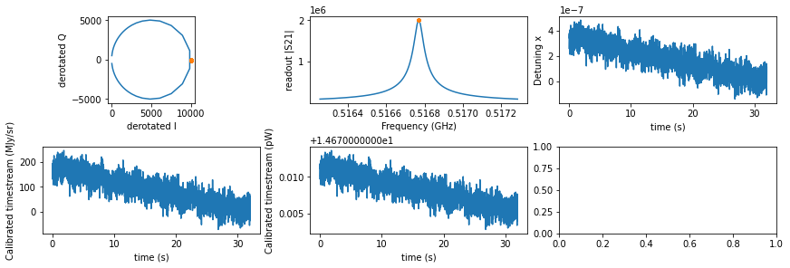
<p>We could see from the plot that the timestreams are quite noisy. We
could verify the property of the calibrated timestream by “removing” the
atmosphere using the power loading model.</p>
<p><span class="inputnumrole">In[22]:</span></p>
<div class="highlight-python notranslate"><div class="highlight"><pre><span></span><span class="c1"># get the trajectory of the first detector using</span>
<span class="c1"># sky projection model of the simulator</span>
<span class="c1"># we open the tel.nc file to retrieve the boresight coords</span>
<span class="kn">from</span> <span class="nn">tolteca.simu.toltec.models</span> <span class="kn">import</span> <span class="n">ToltecSkyProjModel</span>

<span class="n">tel_file</span> <span class="o">=</span> <span class="nb">next</span><span class="p">(</span><span class="nb">iter</span><span class="p">(</span><span class="n">output_dir</span><span class="o">.</span><span class="n">glob</span><span class="p">(</span><span class="s2">&quot;tel_*.nc&quot;</span><span class="p">)))</span>

<span class="c1"># the current version of tolteca does not provide</span>
<span class="c1"># high level class to manage tel.nc.</span>
<span class="kn">from</span> <span class="nn">netCDF4</span> <span class="kn">import</span> <span class="n">Dataset</span>
<span class="n">tel_nc</span> <span class="o">=</span> <span class="n">Dataset</span><span class="p">(</span><span class="n">tel_file</span><span class="p">)</span>
<span class="nb">print</span><span class="p">(</span><span class="n">tel_nc</span><span class="p">)</span>
<span class="n">tel_traj_ra</span> <span class="o">=</span> <span class="n">tel_nc</span><span class="o">.</span><span class="n">variables</span><span class="p">[</span><span class="s2">&quot;Data.TelescopeBackend.TelRaAct&quot;</span><span class="p">][:]</span> <span class="o">&lt;&lt;</span> <span class="n">u</span><span class="o">.</span><span class="n">rad</span>
<span class="n">tel_traj_dec</span> <span class="o">=</span> <span class="n">tel_nc</span><span class="o">.</span><span class="n">variables</span><span class="p">[</span><span class="s2">&quot;Data.TelescopeBackend.TelDecAct&quot;</span><span class="p">][:]</span> <span class="o">&lt;&lt;</span> <span class="n">u</span><span class="o">.</span><span class="n">rad</span>
<span class="n">tel_traj_az</span> <span class="o">=</span> <span class="n">tel_nc</span><span class="o">.</span><span class="n">variables</span><span class="p">[</span><span class="s2">&quot;Data.TelescopeBackend.TelAzAct&quot;</span><span class="p">][:]</span> <span class="o">&lt;&lt;</span> <span class="n">u</span><span class="o">.</span><span class="n">rad</span>
<span class="n">tel_traj_alt</span> <span class="o">=</span> <span class="n">tel_nc</span><span class="o">.</span><span class="n">variables</span><span class="p">[</span><span class="s2">&quot;Data.TelescopeBackend.TelElAct&quot;</span><span class="p">][:]</span> <span class="o">&lt;&lt;</span> <span class="n">u</span><span class="o">.</span><span class="n">rad</span>
<span class="n">tel_time</span> <span class="o">=</span> <span class="n">Time</span><span class="p">(</span><span class="n">tel_nc</span><span class="o">.</span><span class="n">variables</span><span class="p">[</span><span class="s1">&#39;Data.TelescopeBackend.TelTime&#39;</span><span class="p">][:],</span> <span class="nb">format</span><span class="o">=</span><span class="s1">&#39;unix&#39;</span><span class="p">)</span>
<span class="c1"># print(tel_time.iso)</span>
<span class="n">tel_traj_icrs</span> <span class="o">=</span> <span class="n">SkyCoord</span><span class="p">(</span><span class="n">ra</span><span class="o">=</span><span class="n">tel_traj_ra</span><span class="p">,</span> <span class="n">dec</span><span class="o">=</span><span class="n">tel_traj_dec</span><span class="p">,</span> <span class="n">frame</span><span class="o">=</span><span class="s1">&#39;icrs&#39;</span><span class="p">)</span>
<span class="n">tel_traj_altaz</span> <span class="o">=</span> <span class="n">SkyCoord</span><span class="p">(</span><span class="n">az</span><span class="o">=</span><span class="n">tel_traj_az</span><span class="p">,</span> <span class="n">alt</span><span class="o">=</span><span class="n">tel_traj_alt</span><span class="p">,</span> <span class="n">frame</span><span class="o">=</span><span class="n">lmt_observer</span><span class="o">.</span><span class="n">altaz</span><span class="p">(</span><span class="n">time</span><span class="o">=</span><span class="n">tel_time</span><span class="p">))</span>

<span class="n">m_sky_proj</span> <span class="o">=</span> <span class="n">ToltecSkyProjModel</span><span class="p">(</span>
    <span class="n">origin_coords_icrs</span><span class="o">=</span><span class="n">tel_traj_icrs</span><span class="p">,</span>
    <span class="n">origin_coords_altaz</span><span class="o">=</span><span class="n">tel_traj_altaz</span><span class="p">)</span>

<span class="c1"># here because we need all the coords for plotting, we</span>
<span class="c1"># return the eval context and set evaluate_frame to icrs</span>
<span class="n">_</span><span class="p">,</span> <span class="n">det0_traj_ctx</span> <span class="o">=</span> <span class="n">m_sky_proj</span><span class="p">(</span>
    <span class="n">apt</span><span class="p">[</span><span class="mi">0</span><span class="p">][</span><span class="s1">&#39;x_t&#39;</span><span class="p">],</span> <span class="n">apt</span><span class="p">[</span><span class="mi">0</span><span class="p">][</span><span class="s1">&#39;y_t&#39;</span><span class="p">],</span> <span class="n">apt</span><span class="p">[</span><span class="mi">0</span><span class="p">][</span><span class="s1">&#39;pa_t&#39;</span><span class="p">],</span>
    <span class="n">evaluate_frame</span><span class="o">=</span><span class="s1">&#39;icrs&#39;</span><span class="p">,</span>
    <span class="n">return_eval_context</span><span class="o">=</span><span class="kc">True</span><span class="p">)</span>
<span class="n">det0_traj_icrs</span> <span class="o">=</span> <span class="n">det0_traj_ctx</span><span class="p">[</span><span class="s1">&#39;coords_icrs&#39;</span><span class="p">]</span>
<span class="n">det0_traj_altaz</span> <span class="o">=</span> <span class="n">det0_traj_ctx</span><span class="p">[</span><span class="s1">&#39;coords_altaz&#39;</span><span class="p">]</span>


<span class="c1"># extract the input timestream from the image model</span>
<span class="c1"># for plotting</span>
<span class="n">array_name</span> <span class="o">=</span> <span class="s1">&#39;a1100&#39;</span>
<span class="n">hdu</span> <span class="o">=</span> <span class="n">m_img</span><span class="o">.</span><span class="n">data</span><span class="p">[</span><span class="s1">&#39;hdu&#39;</span><span class="p">][</span><span class="mi">0</span><span class="p">]</span>
<span class="n">wcsobj</span> <span class="o">=</span> <span class="n">WCS</span><span class="p">(</span><span class="n">hdu</span><span class="o">.</span><span class="n">header</span><span class="p">)</span>
<span class="n">tel_xx</span><span class="p">,</span> <span class="n">tel_yy</span> <span class="o">=</span> <span class="n">wcsobj</span><span class="o">.</span><span class="n">world_to_pixel_values</span><span class="p">(</span><span class="n">tel_traj_icrs</span><span class="o">.</span><span class="n">ra</span><span class="o">.</span><span class="n">degree</span><span class="p">,</span> <span class="n">tel_traj_icrs</span><span class="o">.</span><span class="n">dec</span><span class="o">.</span><span class="n">degree</span><span class="p">)</span>
<span class="n">det0_xx</span><span class="p">,</span> <span class="n">det0_yy</span> <span class="o">=</span> <span class="n">wcsobj</span><span class="o">.</span><span class="n">world_to_pixel_values</span><span class="p">(</span><span class="n">det0_traj_icrs</span><span class="o">.</span><span class="n">ra</span><span class="o">.</span><span class="n">degree</span><span class="p">,</span> <span class="n">det0_traj_icrs</span><span class="o">.</span><span class="n">dec</span><span class="o">.</span><span class="n">degree</span><span class="p">)</span>
<span class="c1"># here because the xx and yy could be out of bound, need to handle that with a mask</span>
<span class="n">det0_yy</span> <span class="o">=</span> <span class="n">det0_yy</span><span class="o">.</span><span class="n">astype</span><span class="p">(</span><span class="nb">int</span><span class="p">)</span>
<span class="n">det0_xx</span> <span class="o">=</span> <span class="n">det0_xx</span><span class="o">.</span><span class="n">astype</span><span class="p">(</span><span class="nb">int</span><span class="p">)</span>
<span class="n">gm</span> <span class="o">=</span> <span class="p">(</span><span class="n">det0_yy</span> <span class="o">&lt;</span> <span class="n">hdu</span><span class="o">.</span><span class="n">data</span><span class="o">.</span><span class="n">shape</span><span class="p">[</span><span class="mi">0</span><span class="p">])</span> <span class="o">&amp;</span> <span class="p">(</span><span class="n">det0_yy</span> <span class="o">&gt;=</span> <span class="mi">0</span><span class="p">)</span> <span class="o">&amp;</span> <span class="p">(</span><span class="n">det0_xx</span> <span class="o">&lt;</span> <span class="n">hdu</span><span class="o">.</span><span class="n">data</span><span class="o">.</span><span class="n">shape</span><span class="p">[</span><span class="mi">1</span><span class="p">])</span> <span class="o">&amp;</span> <span class="p">(</span><span class="n">det0_xx</span> <span class="o">&gt;=</span> <span class="mi">0</span><span class="p">)</span>
<span class="n">det0_sky_sb_input</span> <span class="o">=</span> <span class="n">np</span><span class="o">.</span><span class="n">zeros</span><span class="p">(</span><span class="n">det0_yy</span><span class="o">.</span><span class="n">shape</span><span class="p">,</span> <span class="n">dtype</span><span class="o">=</span><span class="s1">&#39;d&#39;</span><span class="p">)</span> <span class="o">&lt;&lt;</span> <span class="n">u</span><span class="o">.</span><span class="n">MJy</span> <span class="o">/</span> <span class="n">u</span><span class="o">.</span><span class="n">sr</span>
<span class="n">det0_sky_sb_input</span><span class="p">[</span><span class="n">gm</span><span class="p">]</span> <span class="o">=</span> <span class="n">hdu</span><span class="o">.</span><span class="n">data</span><span class="p">[</span><span class="n">det0_yy</span><span class="p">[</span><span class="n">gm</span><span class="p">],</span> <span class="n">det0_xx</span><span class="p">[</span><span class="n">gm</span><span class="p">]]</span> <span class="o">&lt;&lt;</span> <span class="n">u</span><span class="o">.</span><span class="n">MJy</span> <span class="o">/</span> <span class="n">u</span><span class="o">.</span><span class="n">sr</span>
<span class="n">det0_sky_pwr_input</span> <span class="o">=</span> <span class="n">m_tpl</span><span class="o">.</span><span class="n">sky_sb_to_pwr</span><span class="p">(</span><span class="n">det_array_name</span><span class="o">=</span><span class="n">array_name</span><span class="p">,</span> <span class="n">det_s</span><span class="o">=</span><span class="n">det0_sky_sb_input</span><span class="p">)</span>

<span class="c1"># get fixure + atm power loading input:</span>
<span class="c1"># here we speed up the evaluation with a pre-built interp grid of step 1 arcmin</span>
<span class="c1"># need to also take into account the array FOV of 4armin in the padding</span>
<span class="k">with</span> <span class="n">m_tpl_am_q50</span><span class="o">.</span><span class="n">aplm_eval_interp_context</span><span class="p">(</span>
    <span class="n">t0</span><span class="p">,</span> <span class="n">t_grid</span><span class="p">,</span>
    <span class="n">sky_bbox_altaz</span><span class="o">=</span><span class="kc">None</span><span class="p">,</span>
    <span class="n">alt_grid</span><span class="o">=</span><span class="n">np</span><span class="o">.</span><span class="n">arange</span><span class="p">(</span>
        <span class="n">tel_traj_altaz</span><span class="o">.</span><span class="n">alt</span><span class="o">.</span><span class="n">degree</span><span class="o">.</span><span class="n">min</span><span class="p">()</span> <span class="o">-</span> <span class="mi">4</span> <span class="o">/</span> <span class="mi">60</span><span class="p">,</span>
        <span class="n">tel_traj_altaz</span><span class="o">.</span><span class="n">alt</span><span class="o">.</span><span class="n">degree</span><span class="o">.</span><span class="n">max</span><span class="p">()</span> <span class="o">+</span> <span class="mi">1</span> <span class="o">/</span> <span class="mi">60</span> <span class="o">+</span> <span class="mi">4</span> <span class="o">/</span> <span class="mi">60</span><span class="p">,</span>
        <span class="mi">1</span> <span class="o">/</span> <span class="mi">60</span>
        <span class="p">)</span> <span class="o">&lt;&lt;</span> <span class="n">u</span><span class="o">.</span><span class="n">deg</span><span class="p">):</span>
    <span class="n">instru_pwr</span> <span class="o">=</span> <span class="n">m_tpl_am_q50</span><span class="o">.</span><span class="n">get_P</span><span class="p">(</span>
        <span class="n">det_array_name</span><span class="o">=</span><span class="n">np</span><span class="o">.</span><span class="n">array</span><span class="p">([</span><span class="n">array_name</span><span class="p">]),</span>  <span class="c1"># just 1 detector</span>
        <span class="n">det_az</span><span class="o">=</span><span class="kc">None</span><span class="p">,</span>
        <span class="n">det_alt</span><span class="o">=</span><span class="n">det0_traj_altaz</span><span class="o">.</span><span class="n">alt</span><span class="o">.</span><span class="n">reshape</span><span class="p">((</span><span class="mi">1</span><span class="p">,</span> <span class="nb">len</span><span class="p">(</span><span class="n">det0_traj_altaz</span><span class="p">)))</span>
        <span class="p">)[</span><span class="mi">0</span><span class="p">]</span>
<span class="n">det0_pwr_input</span> <span class="o">=</span> <span class="n">instru_pwr</span> <span class="o">+</span> <span class="n">det0_sky_pwr_input</span>


<span class="n">fig</span><span class="p">,</span> <span class="n">axes</span> <span class="o">=</span> <span class="n">plt</span><span class="o">.</span><span class="n">subplots</span><span class="p">(</span><span class="mi">1</span><span class="p">,</span> <span class="mi">3</span><span class="p">,</span> <span class="n">figsize</span><span class="o">=</span><span class="p">(</span><span class="mi">12</span><span class="p">,</span> <span class="mi">4</span><span class="p">))</span>
<span class="n">fig</span><span class="o">.</span><span class="n">set_tight_layout</span><span class="p">(</span><span class="kc">True</span><span class="p">)</span>
<span class="n">ax</span> <span class="o">=</span> <span class="n">axes</span><span class="p">[</span><span class="mi">0</span><span class="p">]</span>
<span class="n">ax</span><span class="o">.</span><span class="n">imshow</span><span class="p">(</span><span class="n">hdu</span><span class="o">.</span><span class="n">data</span><span class="p">,</span> <span class="n">origin</span><span class="o">=</span><span class="s1">&#39;lower&#39;</span><span class="p">)</span>
<span class="n">ax</span><span class="o">.</span><span class="n">plot</span><span class="p">(</span><span class="n">det0_xx</span><span class="p">,</span> <span class="n">det0_yy</span><span class="p">,</span> <span class="n">marker</span><span class="o">=</span><span class="s1">&#39;.&#39;</span><span class="p">,</span> <span class="n">label</span><span class="o">=</span><span class="s1">&#39;det0&#39;</span><span class="p">)</span>
<span class="n">ax</span><span class="o">.</span><span class="n">plot</span><span class="p">(</span><span class="n">tel_xx</span><span class="p">,</span> <span class="n">tel_yy</span><span class="p">,</span> <span class="n">label</span><span class="o">=</span><span class="s1">&#39;boresight&#39;</span><span class="p">)</span>
<span class="n">ax</span><span class="o">.</span><span class="n">set_xlabel</span><span class="p">(</span><span class="s2">&quot;x (pix)&quot;</span><span class="p">)</span>
<span class="n">ax</span><span class="o">.</span><span class="n">set_ylabel</span><span class="p">(</span><span class="s2">&quot;y (pix)&quot;</span><span class="p">)</span>
<span class="n">ax</span><span class="o">.</span><span class="n">legend</span><span class="p">()</span>
<span class="n">ax</span> <span class="o">=</span> <span class="n">axes</span><span class="p">[</span><span class="mi">1</span><span class="p">]</span>
<span class="n">ax</span><span class="o">.</span><span class="n">plot</span><span class="p">(</span><span class="n">t_grid</span><span class="p">,</span> <span class="n">det0_sky_sb_input</span><span class="o">.</span><span class="n">to_value</span><span class="p">(</span><span class="n">u</span><span class="o">.</span><span class="n">MJy</span><span class="o">/</span><span class="n">u</span><span class="o">.</span><span class="n">sr</span><span class="p">),</span> <span class="n">marker</span><span class="o">=</span><span class="s1">&#39;.&#39;</span><span class="p">)</span>
<span class="n">ax</span><span class="o">.</span><span class="n">set_xlabel</span><span class="p">(</span><span class="s2">&quot;time (s)&quot;</span><span class="p">)</span>
<span class="n">ax</span><span class="o">.</span><span class="n">set_ylabel</span><span class="p">(</span><span class="s2">&quot;Input Surface Brightness (MJy/sr)&quot;</span><span class="p">)</span>
<span class="n">ax</span> <span class="o">=</span> <span class="n">axes</span><span class="p">[</span><span class="mi">2</span><span class="p">]</span>
<span class="n">ax</span><span class="o">.</span><span class="n">plot</span><span class="p">(</span><span class="n">t_grid</span><span class="p">,</span> <span class="n">det0_sky_pwr_input</span><span class="o">.</span><span class="n">to_value</span><span class="p">(</span><span class="n">u</span><span class="o">.</span><span class="n">pW</span><span class="p">),</span> <span class="n">marker</span><span class="o">=</span><span class="s1">&#39;.&#39;</span><span class="p">)</span>
<span class="n">ax</span><span class="o">.</span><span class="n">set_xlabel</span><span class="p">(</span><span class="s2">&quot;time (s)&quot;</span><span class="p">)</span>
<span class="n">ax</span><span class="o">.</span><span class="n">set_ylabel</span><span class="p">(</span><span class="s2">&quot;Input Detector Power Loading from Sky (pW)&quot;</span><span class="p">)</span>
</pre></div>
</div>
<p><span class="outputnumrole">Out[22]:</span></p>
<div class="highlight-default notranslate"><div class="highlight"><pre><span></span>&lt;class &#39;netCDF4._netCDF4.Dataset&#39;&gt;
root group (NETCDF4 data model, file format HDF5):
    dimensions(sizes): Header.File.Name_slen(128), Header.Source.SourceName_slen(128), Header.Dcs.ObsPgm_slen(128), Header.Source.Ra_xlen(2), time(3840)
    variables(dimensions): |S1 Header.File.Name(Header.File.Name_slen), |S1 Header.Source.SourceName(Header.Source.SourceName_slen), |S1 Header.Dcs.ObsPgm(Header.Dcs.ObsPgm_slen), float64 Header.Source.Ra(Header.Source.Ra_xlen), float64 Header.Source.Dec(Header.Source.Ra_xlen), float64 Data.TelescopeBackend.TelTime(time), float64 Data.TelescopeBackend.TelRaAct(time), float64 Data.TelescopeBackend.TelDecAct(time), float64 Data.TelescopeBackend.TelElAct(time), float64 Data.TelescopeBackend.TelAzAct(time), float64 Data.TelescopeBackend.ActParAng(time), float64 Data.TelescopeBackend.TelElSky(time), float64 Data.TelescopeBackend.TelAzSky(time), float64 Data.TelescopeBackend.ParAng(time), float64 Data.TelescopeBackend.Hold(time), float64 Data.TelescopeBackend.SourceEl(time), float64 Data.TelescopeBackend.SourceAz(time)
    groups:
</pre></div>
</div>
<div class="highlight-default notranslate"><div class="highlight"><pre><span></span><span class="n">Text</span><span class="p">(</span><span class="mi">0</span><span class="p">,</span> <span class="mf">0.5</span><span class="p">,</span> <span class="s1">&#39;Input Detector Power Loading from Sky (pW)&#39;</span><span class="p">)</span>
</pre></div>
</div>
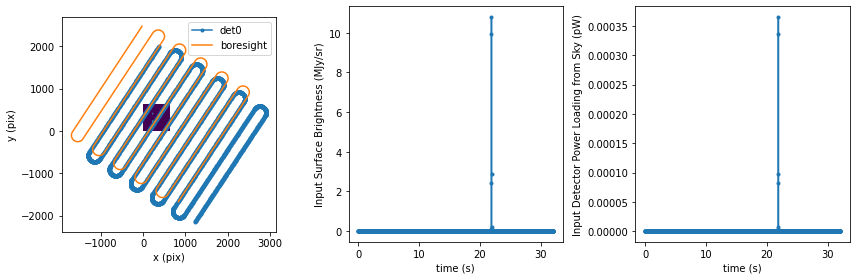
<p><span class="inputnumrole">In[23]:</span></p>
<div class="highlight-python notranslate"><div class="highlight"><pre><span></span><span class="n">fig</span><span class="p">,</span> <span class="n">axes</span> <span class="o">=</span> <span class="n">plt</span><span class="o">.</span><span class="n">subplots</span><span class="p">(</span><span class="mi">1</span><span class="p">,</span> <span class="mi">2</span><span class="p">,</span> <span class="n">figsize</span><span class="o">=</span><span class="p">(</span><span class="mi">12</span><span class="p">,</span> <span class="mi">4</span><span class="p">))</span>
<span class="n">fig</span><span class="o">.</span><span class="n">set_tight_layout</span><span class="p">(</span><span class="kc">True</span><span class="p">)</span>
<span class="n">ax</span> <span class="o">=</span> <span class="n">axes</span><span class="p">[</span><span class="mi">0</span><span class="p">]</span>
<span class="c1"># altitude vs t</span>
<span class="n">ax</span><span class="o">.</span><span class="n">plot</span><span class="p">(</span><span class="n">t_grid</span><span class="p">,</span> <span class="n">det0_traj_altaz</span><span class="o">.</span><span class="n">alt</span><span class="o">.</span><span class="n">degree</span><span class="p">,</span> <span class="n">marker</span><span class="o">=</span><span class="s1">&#39;.&#39;</span><span class="p">)</span>
<span class="c1"># noiseless input total power loading</span>
<span class="n">ax</span> <span class="o">=</span> <span class="n">axes</span><span class="p">[</span><span class="mi">1</span><span class="p">]</span>
<span class="nb">print</span><span class="p">(</span><span class="n">ts0_pwr</span><span class="p">)</span>
<span class="n">ax</span><span class="o">.</span><span class="n">plot</span><span class="p">(</span><span class="n">t_grid</span><span class="p">,</span> <span class="n">ts0_pwr</span><span class="o">.</span><span class="n">to_value</span><span class="p">(</span><span class="n">u</span><span class="o">.</span><span class="n">pW</span><span class="p">),</span> <span class="n">marker</span><span class="o">=</span><span class="s1">&#39;.&#39;</span><span class="p">,</span> <span class="n">label</span><span class="o">=</span><span class="s1">&#39;simulated power loading with noise&#39;</span><span class="p">)</span>
<span class="n">ax</span><span class="o">.</span><span class="n">plot</span><span class="p">(</span><span class="n">t_grid</span><span class="p">,</span> <span class="n">det0_pwr_input</span><span class="o">.</span><span class="n">to_value</span><span class="p">(</span><span class="n">u</span><span class="o">.</span><span class="n">pW</span><span class="p">),</span> <span class="n">marker</span><span class="o">=</span><span class="s1">&#39;.&#39;</span><span class="p">,</span> <span class="n">label</span><span class="o">=</span><span class="s1">&#39;input power loading noiseless&#39;</span><span class="p">)</span>
<span class="n">ax</span><span class="o">.</span><span class="n">set_xlabel</span><span class="p">(</span><span class="s2">&quot;time (s)&quot;</span><span class="p">)</span>
<span class="n">ax</span><span class="o">.</span><span class="n">set_ylabel</span><span class="p">(</span><span class="s2">&quot;Total Detector Power Loading (pW)&quot;</span><span class="p">)</span>
<span class="n">ax</span><span class="o">.</span><span class="n">legend</span><span class="p">()</span>
</pre></div>
</div>
<p><span class="outputnumrole">Out[23]:</span></p>
<div class="highlight-default notranslate"><div class="highlight"><pre><span></span><span class="p">[</span><span class="mf">14.68090577</span> <span class="mf">14.6807146</span>  <span class="mf">14.68112542</span> <span class="o">...</span> <span class="mf">14.67523932</span> <span class="mf">14.67461238</span>
 <span class="mf">14.67572215</span><span class="p">]</span> <span class="n">pW</span>
</pre></div>
</div>
<div class="highlight-default notranslate"><div class="highlight"><pre><span></span><span class="o">&lt;</span><span class="n">matplotlib</span><span class="o">.</span><span class="n">legend</span><span class="o">.</span><span class="n">Legend</span> <span class="n">at</span> <span class="mh">0x13d383910</span><span class="o">&gt;</span>
</pre></div>
</div>
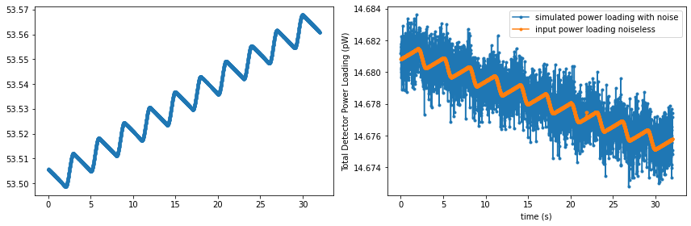
<p><span class="inputnumrole">In[None]:</span></p>
<div id="spacer"></div>

<a href="../_static/tolteca_simu/tolteca_simu.ipynb"><button id="download">Download tutorial notebook</button></a>
<a href="https://beta.mybinder.org/v2/gh/astropy/astropy-tutorials/master?filepath=/tutorials/notebooks/tolteca_simu/tolteca_simu.ipynb"><button id="binder">Interactive tutorial notebook</button></a></div>
</div>
</div>

</div>
      </div>
      
    </div>
  </div>
</div>
<footer class="footer">
  <div class="container">
    <p class="pull-right">
      <a href="#">Back to top</a>
      
    </p>
    <p>
    Created using <a href="http://sphinx-doc.org/">Sphinx</a> 4.4.0.
    &copy; Copyright Astropy.
    </p>
  </div>
</footer>
  </body>
</html>